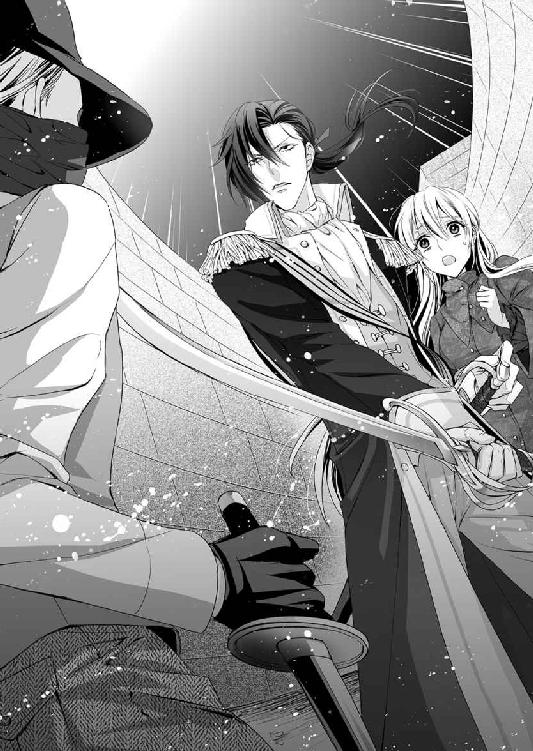

| 青年伯爵とお針子令嬢【SS付】【イラスト付】 (ロイヤルキス文庫) | |
| 如月 | |
| (2015) | |
この物語はフィクションであり、実在の人物・団体・事件等とは、いっさい関係ありません。
イラスト・ウエハラ蜂
首都ルアージュ。
エマブル公園の中央を貫くマロニエの並木は、五月も半ばを過ぎると緑の葉陰に白いフリル飾りのような花をそよがせ、それが甘い匂いを振りまいて人々の心を妙に浮き立たせる。
並木道の片側に張り巡らされた鉄柵の向こうには、貧しい者や裕福な者、老若男女ひしめきあって物見遊山に集まり、とある貴人が通るのを待っていた。
というのも、ここでは公妃殿下が幼い公女に日光浴をさせるため、毎朝お供を引き連れて散歩をするからだ。
散策路は平民が近づけないように鉄柵で仕切られ、護衛が厳しく見張っている。そんな喧騒の中、若い伯爵、アルチュール・ド・キャステルは公妃殿下の斜め後ろを護衛していた。
公妃は白い日傘を差し、腰にバッスルという詰め物を入れてふくらませた流行のドレス姿で五歳の公女と手をつないで優雅に歩いている。市民のお目当ては、公妃のファッションであり、また、護衛の近衛兵や王室親衛隊の将校の凛々しい軍服姿とも言われていた。
アルチュールはこれほど緩慢に歩くのは苦手で、しかも常時気を抜くわけにもいかず、月に一度や二度とはいえ億劫でたまらないこの任務を忍耐強くこなしていた。
ふと足下に、細く折り曲げられた紙が飛んできたが、彼は一瞥するだけで通り過ぎ、公妃の護衛に集中しようと気を引き締める。
ぽん、ぽんと、時折投げ込まれる巻手紙は市民の嘆願書だ。公妃殿下は従僕にそれを拾わせ、にこやかに受け取るのが常で、彼女が民心を捉えている理由の一つでもある。
あとわずかで、公妃が休憩をとる東屋が見えるという辺りに来た時、頭上でがさがさという音が聞こえ、アルチュールは反射的に公妃を守る体制を取った。さっと緊迫した空気が流れる。公妃に抱き寄せられた幼い公女は、無邪気に指を差して、「まあ、リスよ！」と可愛らしい声で叫んだ。
次の瞬間、『リス』はマロニエの花びらをまき散らして落ちてきた。
アルチュールは時が止まったかのような錯覚を覚え、その漆黒の双眸にはっきりと焼き付けた。絹糸の房のような金髪と灰褐色のドレスをはためかせて少女が落ちてくる光景を。
「きゃああああっ」
つんざくような悲鳴をあげながら、少女は着地し、前のめりに転んだ。スカートが風をはらんで丸く膨らみ、やがてぺしゃんこになった。騒がしかった公園が静まり返り、その衆目の中で少女がもぞもぞと上体を起こした。
乱れて顔を半分隠してしまった金髪の間から鮮やかな青い瞳がかっと見開かれている。
「謀反だ！」
衛兵が靴音を鳴らして公妃母子を取り巻き、侵入者にマスケット銃を向ける。
公女が怯えて泣き出した。
伍長が腕を挙げる。金髪の少女を蜂の巣にする合図だ。
「お待ちください、閣下」
無意識の行動だった。
その声が自分のものだとアルチュールが気づいたのは、衛兵や市民の視線がいっせいにこちらに集まったのを見たからだ。
コツ、コツ、と音がする。石壁に反響しながら、それは次第に近づいてくる。
死神の時計のような威圧的な音は、シシリエンヌの独房の前でぴたりと止まった。
「マクシム・ド・レーヌの娘はおまえだな？ ──出てこい」
独房の片隅にうずくまり、膝を抱えて己の愚かさを呪っていた時、牢獄の番人にそう言われ、彼女は震え上がった。
シシリエンヌは打ち首になっても仕方ない罪に問われていた。
「も、もう、処刑ですか......！ どうか今少し時間をください。それと、ペンと紙を......家族に遺書を書きたいのです」
一週間の間に身内が二人も逮捕されてしまった母や姉のことを思うと、シシリエンヌは申し訳なくていたたまれなかった。動転のあまり、遺書と言ったが、何を書けばいいのか自分でもよくわからない。
「黙れ、さっさと用意をするのだ」
牢番は野太い声で命じたが、別の涼しげな声が彼をなだめるのが聞こえた。
「まあ、待ってやれ。誰か、紙とペンを──鵞ペンがいいな。のどを突いて自死しないように軸の柔らかいものを」
ほどなく鉄格子の間から、一枚の紙と羽ペン、インク壷が差し入れられた。独房の奥は暗い。シシリエンヌは、檻に近い側の壁に向いて膝をついた。
壁に紙を押し当てる。彼女に処刑までの時間をわざと引き延ばす狡猾さはないが、手が震えてしまい、なかなかペンを進められなかった。
──最愛のお母様とシャルロットお姉様へ
お父様の無実を晴らすどころか、わたしまで失うことになったと聞いたら、お母様がどんなに悲嘆にくれるでしょう。
それを思うだけで、涙が出てきます。不孝な娘をお許しください。
でもわたしは、間違ったことをしたとは思っていません。
処刑台の上でも、最期までお父様の無実を叫んで、警察や裁判官たちに審判は間違いだったと思い知らせてやりますわ。
お母様は、どうかわたしという娘を持ったことを恥じないでください。
正しいと思うことを貫いたまでのことです。
そして、美しいシャルロットお姉様、この家に降りかかる不幸はきっとわたしで終わります。
どうか、一日も早くジョゼフと結婚して、その頃には既に天国に行っているであろうお父様とわたしを安心させてください。
ジョゼフがお姉様を愛していることは、わたしが保証します。
彼が勇気を振り絞って求婚したら、どうか『はい』と言ってあげて。
そして、二人でお父様の残したマクシム工房を引き継いで、お母様を助けてください。
形見として──といっても、わたしはお姉様に差し上げるようなドレスを持っていませんでした。お父様はこしらえてやろう、って言ってくれたのだけど、これまで急ぐ必要なんて全くなかったのですもの。
ですから、わたしのデザイン帳をお姉様に差し上げます。わたし自身は美しいところも華やかなところもないけれど、ひとつ自惚れることがあるとすれば、お客様の魅力を最大限引き出して輝かせることのできるドレスを考える才能なのだと自負しているの。
だから、おわかりですよね。わたしのデザイン帳はただの落書き帳ではないのです。
そしてね、シャルロットお姉様。まだ言ってなかったけれど、あの最後のページにはお姉様のウェディングドレスが描かれているのよ。
それを着るお姉様を見られないことだけが心残りです。
お母様には、工房で使っていたわたしのピンクッションと指貫、そしてマヴェル島を旅した時に手に入れたレース飾りのハンカチを送ります。
そのハンカチにはこれでもかというほどレースが使ってあります。実際にはほとんど役に立たず、涙もほんの少ししか吸ってくれません。
少しだけ涙を流した後は、どうかその太陽のような笑顔を取り戻すと約束してね、お母様。
あなたの娘シシリエンヌは、最期まで誇り高く生きたことを先に証言しておきます。
鋏はもう見たくもないかもしれませんが、仕立屋としては避けて通れないものですから、これはお父様の一番弟子のジョゼフに譲ります。
どうかこの鋏で素晴らしい服を──
ああ、牢番がこれ以上待てない、早くしろと言っています。
死装束はきっと着心地最悪ね。お父様の仕立てに勝る服はないのだもの、残念だわ。
それではみなさん、どうかお健やかに。
シシリエンヌ
＊ ＊ ＊
「一日頭を冷やした結果がこれか？」
長い足を持て余しぎみに組み、シシリエンヌの遺書を読んだ男の第一声がそれだった。
目の前にいる青年が何者なのか、彼女はまだ知らされていない。
わかっていることと言えば、彼は公妃殿下と共に散策路を歩いていた──つまり高位の貴族に違いない──、そして、シシリエンヌが多くのマスケット銃の標的になった時、伍長の『撃て』の命令を阻止した命の恩人ということだ。
衿の高い青いコートの袖口は臙脂のカフスがついていて、金糸のラインが何本か縫い付けられている。
コートの下にはグレイのベストと揃いのブリーチズ、そして編み上げブーツを履いた足はすらりと長く、肩から腰に渡した飾帯の端には優美なフリンジが垂れている。
出で立ちから想像すると、近衛兵だろうか。
長い黒髪を背で束ねており、書面を読むために伏せた目は切れ長で形よく、鼻筋は真っ直ぐ通っている。唇はほどよい厚みをもち、きりりと引き締まっている。
マロニエの木から見下ろしていた時、しきりと若い女の黄色い声が飛んでいたが、それは凛々しい将校たちに向けられたものだったのかもしれない。
今、その美しい青年が、シシリエンヌの遺書を読んで厳しい評価を下しているところだ。
「これでは救いようがない」
容赦ない言葉に、シシリエンヌは、死への時計の針がまた動いた、と思った。
「はい......極刑ですね。覚悟はできています」
彼女が震える声で言うと、青年は漆黒の瞳でこちらを一瞥した。
「覚悟だと？ 父親の冤罪を晴らすためとはいえ、簡単に命を捨てるのだな。──きみの命はそれほど些末なものなのか？」
シシリエンヌはぎくりとして、彼の怜悧な双眸を見返す。
そんなふうには思っていなかった。父の命の尊厳を思うと同時に、自分の命だって惜しい。
「いいえ、自ら命を捨てにいこうとは思っていませんでした。お助けくださったこと、心から感謝しています」
いや、処刑は免れないだろうが、父の無実を訴える時間をくれたことがありがたい。
「それならやり方を選べ。公妃殿下は慈悲深いお方だ。嘆願書にはちゃんと目を通してくださる。それなのに、木の上から妃殿下の御前に飛び降りるなど言語道断だ！ 即刻銃殺されたとしても文句は言えない。なぜあんな無茶をした？」
それはシシリエンヌの考えが甘かったとしか言いようがない。反逆罪に問われるような罪を犯すつもりはなかった。
ただ、嘆願書を確実に公妃の近くに投げたかっただけなのだ。
「人が多すぎて、嘆願書が公妃様に届く位置までたどりつけなかったので、木の上から落とそうと思ったのです」
ところが足を滑らせて自分が落下して大騒ぎになり、嘆願書も失くしてしまった。
「他に言い残すことはあるか」
シシリエンヌはひれ伏して訴えた。
「言いたいことはひとつだけです。父は無実です。父が人を殺すはずありません。それも、裁縫用の裁ち鋏でお客様を刺すなんてありえません、絶対に！ どうか、本当の犯人を見つけてください。わたしの命に代えて父の名誉を回復してください」
「救いようがないとはそのことだ。もっと明白な証拠を挙げ、論理的に訴えることを知らないのか？ 無実、無実の一点張りとは」
「職人が大切な道具を人殺しになんか使いません。これは明白な証拠になりませんか？」
「ならない。強い憎しみは職人気質を踏みにじることもあるからな。その時刻に彼が殺人現場にいなかったという決定的証拠を出せと言っているんだ」
シシリエンヌは深く息を吐いた。落ち着いて話さなくてはと自分に命じる。
「父は事件のあった五月十日は、頭痛がすると言って早い時間に寝室に行って眠っていました。急ぎの仕事があって、ずっとあまり眠っていなかったのです。わたしたち家族は全員、それを見ていましたが、他人が見たのでなければ証拠にならないと言われました。それから、凶器となった鋏は、その半月前に研ぎに出され、紛失していたのです」
「きみや母親、姉は疑われなかったのか」
「その日は雨がひどく降っていて、通りかかったご婦人が雨宿りをしていきました。わたしたちはタオルをお貸しし、お茶を出して雨足が弱くなるまでその方と一緒に話をしていました」
「鋏の紛失の経由は？ 砥ぎに出したのは誰だ」
「父の一番弟子のジョゼフです......三丁の鋏を山羊革の袋に入れて持っていったはずなのに、研ぎ師は二丁しかなかったと言っています。ジョゼフは袋から開けてその場で確かめなかったそうで、実際どうだったのか、いつ父の鋏が犯人の手に渡ったかはわかりません」
男は怜悧な眼差しでシシリエンヌを見下ろし、淡々と質問を繰り返した。
「被害者とジョゼフは面識があるのか？」
「はい。父もわたしも、家族全員、知っています。殺されたパトリシアさんは、うちの店のお客様でしたから」
こうしたやりとりから、シシリエンヌは砥ぎ師たちには疑いはかからなかったことを説明した。当然ながら、父の次には弟子のジョゼフに対する疑惑が濃厚という流れになった。
「いいえ、犯人はジョゼフではありません。なぜなら彼は事件の夜、居酒屋にいたのを何人かの人が見ています」
「働きぶりはどうだ？ 居酒屋で賭博をしたり、深酒をしたりなどは──」
「ジョゼフはとても真面目で、働き者で、仕立屋としての腕もなかなかのものです。それに性格もおっとりとやさしいし、姉を愛しています」
「ジョゼフがきみの姉を愛しているとかそういうことは、どうでもいい。どうせ推測でしかないし、人間の心はもっと複雑なのだ。これだから女は──」
ばかにしたように吐き捨てられて、シシリエンヌはむっとしたが、父を逮捕した治安官は、こんなに長く話を聞かずに父を連れ去った。この男性は、言葉は辛らつだが話を聞いてくれるだけましだ。
「まだあります。わたしは、パトリシアさんが殺される前日に、彼女が貴族らしい男性と口論しているのを見たのです」
「なんだって？」
「わたしの知らない人です。栗色の髪が肩より少し下まで伸びていて、上物のテールコートを着て......暴力を振るってはいませんでした。身なりからして、上流階級の方だと思います」
「その男をもう一度見たらわかるか？」
「はい。絶対にあの顔は忘れません」
ふむ、と男はうなり、シシリエンヌを見た。
「......それは少し調べてみる必要があるだろうな。検討しよう」
シシリエンヌは青い瞳を輝かせて彼を見た。
「お願いします！ どうか父を助けてください」
「しかし、きみの公妃殿下への狼藉の罪は変わらないぞ。この遺書は預かっておく」
「わかっています。わたし自身の罪は死をもって贖います。聞いてくださってありがとうございました」
シシリエンヌは全て言い終えると、改めて室内を見回した。豪奢な調度が視界に飛び込んできた。青い。全て青を基調とした配色で統一されている。
灰褐色のドレスを着たシシリエンヌは、まるで美しい室内にメイドが置き忘れた雑巾のようだ。彼女が立ち上がると、突然その青い部屋がぐるぐるとうねりだし、大海原のように膨張してシシリエンヌを呑み込んだ。
＊ ＊ ＊
あ、と気づいた時には、アルチュールは再び救いの手を差し伸べていた。
彼女は思いのたけを言って立ち上がろうとした。そして突然糸の切れた操り人形のようにぐにゃりと床に崩れ落ちた。
昏倒して頭を強打する間際でアルチュールは彼女の体を抱き止めた。
極度の緊張から気を失ったのだろう。
アルチュールは自身の体勢を立て直して彼女を横抱きにし、どこへ運ぼうかと考える。
舞踏会で、か弱き貴婦人がよく倒れるのを見るが、ドレスが幅を取りすぎて始末が悪そうだな、とか、あんなに腹を締めつけるからだ、愚かしい、ぐらいにしか思わなかった。
しかし、今、腕にほんのりとした乙女の体温を感じると、失神というものが男の本能に訴えかける効果は絶大だということがわかった。
鎧のような骨組みのある下着をつけているかと思ったが彼女は違うらしい。簡素なドレス越しに乙女の太腿や尻の丸みに触れて、アルチュールは狼狽した。
──そうか、そうでなくては木登りなどできはしないな。
アルチュールは長椅子に彼女をそっと横たえ、その背中から腕を外したが、柔らかい体の感触がまだ残っている。
メイドを呼んでコルセットを緩めさせるべきだが、そんな窮屈なものもつけていないのかもしれない。
彼はキャビネットの水差しからコップに水を注いで長椅子のところへ戻った。水を口に含み、娘の背中に再び手を入れて支え、顔を重ねた。
唇から水を流し込み、彼女ののどが動くのを見届けようとしたが、果実のように赤い、濡れた唇から目が離せない。
お転婆で粗暴な娘かと思ったが──おまけに仕立屋の娘だというのに着ているものが垢抜けない──、目を閉じているその顔をよくよく監察すると、白い肌はきめ細かく、頬の曲線は実に女らしいし、今は長い睫に隠されているが、その瞳は魅惑的な青さで、マロニエの樹上から落ちたその一瞬でアルチュールの度肝を抜いた。
「しっかりしろ」
軽くその頬を叩こうとしたが、彼女がくぅくぅと寝息を立てていることに気づき、アルチュールは苦笑した。安堵すると同時に、心配させたことに対する小さな憤りがふと沸き起こり、彼女をこらしめてやりたい気になった。
彼はシシリエンヌに覆いかぶさり、口づけた。水も含まず、ただ、柔らかい唇に自分の唇を合わせ、そっと押しつける。やわやわと唇を重ねているうちに、彼女が小さく呻いた。
「ううん......ん」
金の睫がぴくりと動き、細い眉がひそめられた。
「ん......っ？」
アルチュールの腕の中で華奢な体が身じろぐ。
驚愕したように見開かれた目がこちらを見ていた。彼は唇を離して言った。
「目を覚ましたか」
「な、何を......するんですか」
「気付け薬だ。それともきつい炭酸アンモニウムを嗅がせたほうがよかったか？」
我ながらしらじらしい言い訳だと思ったが、少女はあっさり納得した。
「まあ、それは......ありがとうございました」
素直に礼を言っているが、頬も耳たぶも真っ赤になっている。仕置きが過ぎたかもしれない。
「腹は減ってないか？」
捕縛されてから、彼女はおそらく何も食べていないだろう。しかし、彼女は是とも否とも言わず、きょとんとした顔でこちらを見ているばかりだ。
アルチュールは懐に留めた金の鎖を引き、懐中時計を見た。
「四時か。──レイモン！」
アルチュールが呼ぶとすぐに執事が入ってきた。
「はい、旦那様、いかがなさいましたか？」
「公妃殿下のご命令で、この女性をしばらく預かることになった。『緋色の間』の用意を」
当家の執事のレイモンは長椅子にぼんやりと座っているシシリエンヌをちらりと見た。
銀髪の品のよいこの男は、キャステル邸の長いエントランスに並ぶ使用人の住宅のひとつで生まれ育った。年配な分、アルチュールより邸のことを熟知している。
そして、先祖代々その任に就いてきた生粋の執事だ。
彼は相手が伯爵の友人として全く似つかわしくない風貌の女であっても、眉ひとつ動かさず貴婦人として丁重に接することができる。
「──かしこまりました。いつでも使えるよう、整えてございます」
執事の返事に一瞬の躊躇があったのは、そこがアルチュールの寝室『蒼色の間』と繋がる、未来の伯爵夫人の寝室だったからだろう。
「深い意味はない。当分使うあてのない部屋だし、護衛も命じられているからだ」
アルチュールはそう言いながら、言い訳がましいなと思った。
「それから、ミルク粥と軽めの料理を運んでくれ」
「かしこまりました」
「あとは、従僕に着替えを取りに行かせるように......場所は──きみの家はどこだ？」
「はい、ブールヴァール・シャンタンの十七番地でございます。わたしはシシリエンヌ・ド・レーヌと申します」
彼女は立ち上がり、膝を折って挨拶をした。アルチュールはおや、と思った。
仕立屋工房ということからも住所からも、中産階級の娘だということは明らかだ。いやそれ以下かもしれないほど身なりはひどいが、立ち居振る舞いは堂々として品がある。
「そこで待っていてくれ。くつろいでいていい」
彼女をひとり部屋に残してアルチュールと執事は廊下に出た。
執事に最低限の説明は必要だろう。
「おいおい事情は話すが、彼女は家族のことで問題が起こり、陳情に来たのだ。公妃殿下もお認めくださっている。私情を挟むつもりはなかったが、妹に一瞬似ている気がして、つい、救いの手を伸べてしまった」
妹に似ているというのは後からの付け足しだ。何か理由がなければ、アルチュールがこんな面倒事に顔を突っ込むことはないので適当にこしらえた。
「エリザベート様に似ていらっしゃるのでございますか？」
レイモンは納得していないだろうが、老獪な執事なので顔には出ていない。
「一瞬の気の迷いだ。よく見たら全く似ていなかった」
妹のエリザベート、と言っても兄妹らしいつきあいをしていない。アルチュールは国内七か所に散らばった領土を統治するためにほとんどこの邸宅に落ち着く暇がなく、妹の養育についてもかつて公証人の妻であり、今は寡婦となったメリダ夫人に任せっぱなしだったので、たまに帰っても雑務に追われ──今回もだ──ろくに会話をしたことがない。
ただわかるのは、妹は外見こそ兄と同じ黒い髪と黒い瞳をもっているが、しとやかで内気な娘である。シシリエンヌといえば金髪で、瞳は鮮やかなブルーで、しとやかどころかとんだお転婆娘だ。どこにも共通点はない。
行きがかり上、引き取らざるを得なくなり、なにやら陳情があるということなので言い分だけ聞いてさっさと帰してやるつもりだった。居室を用意するまでもなく、馬車を出してやればそれでよかったのだが、アルチュールは執事にこう言った。
「今からブールヴァール・シャンタンまで出かける」
「......旦那様がでございますか？」
「ああ、彼女の家族に起こった問題というのを調べなくてはならない」
かしこまりました、とレイモンが答え、それから少しの間黙っていたが、ぽつりと言った。
「エリザベート様とは雰囲気は違いますが、あのお客様も確かにお美しく、振る舞いもご立派なお嬢様でいらっしゃいます。では、ご用意をして参ります」
執事は無難な感想を述べて、静かに階段を下りていった。
＊ ＊ ＊
──さっきのは何？
シシリエンヌの動悸は激しくなり、ずっと収まらない。彼と話し終えてふと気が遠くなり、次に目を覚ますと、口づけをされていた。
気付け薬と彼は言ったが、そんな話は聞いたことがない。
──上流階級ではそういう作法があるのかしら？
今まで、頬に挨拶のキスを交わすくらいはあるが、男性としっかりと唇を合わせたことなど経験がなく、気付け薬と言われても、ドキドキしてしまう。
──きっと意識しすぎね、相手の方にとっては何でもないことなのよ。
『緋色の間』という部屋に今、シシリエンヌはひとりでいる。
彼女の初めてのキスを奪った彼の名は、執事の説明によるとアルチュール・ド・キャステル、一般にはキャステル伯爵と呼ばれているそうだ。
彼は隣室に着替えにいくと言ったまま戻ってこない。
シシリエンヌが滞在するようにとあてがわれた部屋は、その名の通り、深紅の壁に緋色の家具を揃えた、二室つながった広い部屋だ。壁が深紅に彩られていて、その一面に大きな黒い暖炉が鎮座している。
マントルピースは大理石、暖炉の開き口であるサーキュラーヘッドは黒い鋳物でできていて、傍らに置かれた金属製の炭入れもただのバケツではなく、花瓶のように優雅な形をしている。
奥の部屋の中央にカーテン付のベッドがあり、ドレッサーもクローゼットも備えた美しい部屋だが、シシリエンヌは何をしていいかわからず、ベッドの足側に置かれている長椅子の端に座って、落ち着きなく視線を動かしていた。
ふと人の気配を感じて振り向くと、壁に据え付けられたクローゼットの横にドレッサーがあり、その部屋に全くふさわしくない人間が鏡の中からこちらを見ている。
「わたしったら......ひどいかっこう──」
結わえていたはずの金髪は解けてぐしゃぐしゃに乱れ、ドレスの裾は土で汚れていた。
父親が治安官に連れ去られて家族全員が恐慌状態に陥り、なりふりかまう余裕がなかったので仕方ないことだが。
シシリエンヌは、仕立て屋という生業に身を置いている父から、『人間の値打ちは外見ではない、中身を磨くように』と常日頃言い聞かされていたので、自分はよほど風貌に恵まれなかったのだなと悟り、懸命に裁縫の腕を磨いた。
その上、母親も、哀れな末娘になんとか景気をつけてやろうとしたのか、高名な音楽家が教室を開いたと聞くと父に頼んで通わせてくれたし、読み書き算盤に止まらず、家庭教師を雇ってそれなりの教育を受けさせてくれた。
こんな生い立ちの中で、シシリエンヌは自分の外見には幼いうちから見切りをつけ、姉の美貌を誇りとしてきた。なにより、お客様より目立ってはいけないと思い、地味な服を好んで着ていた。しかし今の格好は地味を通り越してみすぼらしい。
執事には、彼はシシリエンヌのことを、牢獄から出てきたのだとは言わずに公妃殿下から預かっている、などとごまかしていたが、どう見ても不自然だろう。
これからどうなるのだろう。父のことはちゃんと調べてもらえるのだろうか。
それを思うと、自分の姿など本当にどうでもいいのだ。
長い間──実際は三十分ほどだったらしい──待ったが、誰も来る気配がなく、次第に不安が募っていく。工房では常に何かしら仕立物の仕事があって、忙しいことに慣れていることもあり、何もせずぼんやり待っていると暗い考えにばかり捉われてしまう。父や自分に残された時間を思うと、胃がきりきりと痛くなってきた。
立ち上がって部屋の外に出てみようと思った時、執事が食事を運んできた。
「旦那様はお忙しいので、おひとりで召し上がってくださいとのご伝言でございます」
彼は給仕の召使いを従えており、短い指示を出して、ベッドのないほうの部屋、つまり居室をたちまち豪華な食事室へと変身させた。
大きな丸いテーブルにミルク粥とサラダ、肉料理やスープが並んだが、シシリエンヌは全く食欲がなく、粥を二口ほど食べただけだ。
好き嫌いのないシシリエンヌなのに、食事が全く喉を通らない。生まれてこの方、こんなことは初めてだ。
父が心配なのと、自身が処刑間近という恐怖のせいだろう。
「お口に合わないものがございましたか？」
執事が心配そうに尋ねてきたが、シシリエンヌはお昼に食べ過ぎてしまいました、と言い訳をした。
料理人には申し訳ないことをしたが、ほとんど手つかずのまま食事が終わり、その後二時間ほど経ってからようやく伯爵が戻ってきた。
待ちかねていたように立ち上がるシシリエンヌに彼は告げた。
「これから捜査のために外出する。用意をするように」
「父の事件のですね？ わたしでしたら、いつでも出かけられます」
「──その服装でか？」
伯爵が呆れたような顔でシシリエンヌを見た。
「事件のことを調べるのに、これではいけませんか？」
シシリエンヌは驚いて問い返し、それから、小さな声で付け足した。
「着替えもないのです」
その時、扉が叩かれ、従僕が二人、見覚えのある行李を運び入れた。シシリエンヌが自宅で衣装函として使っていたものだ。
彼女がそれを開けると、いちばん上に薔薇色の夜会服が入っていた。
「着替えを取りにいかせた。きみの母親に、見栄えのいいものをと言ったら、姉らしき女がそれを持っていってくれと言ったそうだ。今すぐに着替えろ」
「家に行ってくださったのですか。母や姉はどうしていたでしょう、嘆き悲しんでいたでしょうね......何か言っておりましたでしょうか？」
「使いの者に行かせたので、私は詳しくは知らないが」
伯爵はそっけなく答えた。行李の中に、何か家族の様子を知らせる覚書なり伝言なり入っているかもしれないと思ったが、急ぎだったのだろう、そういうものは見つからず、夜着や肌着、日常着、帽子や手袋など細々としたものが入っている。
夜会服として届けられたものは、シシリエンヌのものではなかった。
「──これは姉のドレスですが」
「今着ているものよりはましだろう。社交界に出るのだから」
「社交界？」
「きみが事件の前日に見た男がいるかどうか、貴族の集まる夜会に行って確かめるのだ。父親の無実を晴らしたいのだろう？」
シシリエンヌは青い目を大きく見開いた。
「はい......！」
なんということだろう。彼はちゃんとシシリエンヌの願いを聞き届けてくれていたのだ。
「姉妹で体格はそう違わないと姉が言っていたそうなので、問題なかろう」
「ええ......そうです。これは魔法のようなドレスで、一見平凡ですが、姉が着るととても美しく見栄えがしますの。......姉のような美しさがないと、着負けてしまうデザインですけれど、今はそんなことは言っていられません」
着替えようとドレスを持っているのに、アルチュールはまだ立っている。
シシリエンヌがベッドのある奥の間に行こうとすると、彼が呼び止めた。
「ちょっと待て、牢から出てきてそのままだったな。着替えの前に湯浴みだ。侍女をつけるが、きみが囚人だということは言っていないから、誰にも言うな」
彼がなぜそのことを使用人たちに隠しているか知らないが、そのおかげで執事が丁重に接してくれるのはありがたい。
「わかりました」
こうしてシシリエンヌは足の指から頭の天辺まで洗われ、乱れていた髪も、メイドたちの手によりていねいに梳られた。
「夜会にいらっしゃるそうですが......お召し物はこれでよろしかったですか？」
メリダ夫人という中年の女性──彼女はアルチュールの妹の家庭教師だそうだ──が控え目だがやや不安そうに言った。
「はい、すみません。急なことで、用意が間に合いませんでした」
夫人の声音には、夜会服として素朴すぎるのではないかという響きがあった。
これでもそのドレスは、彼女が姉のためにデザインした最高のローブデコルテだ。襟ぐりと背中が広く開いた袖なしの夜会服で、一見飾り気のないように見えるが、胸の豊かなシャルロットが身にまとうと、うっとりするほど美しい陰影が現われ、大輪の薔薇のような華やかさを演出するようにできている。
布地の艶と弾力性、厚みから生まれるドレープの美しさは比類なく、後ろ衿ぐりに縫い込んだ長さ一メートル半もあるプリーツは裾まで垂れ、歩いた時に優雅に広がる。人の体を得ることによって生まれ変わる布、まさにデザインの魔法である。
我ながら最高傑作だと思うが、上流階級の人々には少々物足りないかもしれない。
──お姉様が今ここにいたなら、このドレスの魔法の意味がわかるのに。
残念ながら、シシリエンヌにその魔法は効かない。このドレスが完成した時、こっそり鏡を見ながら、自分の胸元にそれを掲げて合わせてみたが、手入れの悪いひっつめ頭のシシリエンヌには恐ろしいほど似合わなかったのだ。
「御髪は両脇の髪を緩く編んで、後ろは巻き癖をつけて下してみました。いかがでしょうか、メリダ夫人？」
侍女のひとりが評価を乞うと、夫人は、あら、と小さく驚きの声を上げた。
「よろしいわ、......ええ、よろしいですよ」
髪型は及第のお墨付きをもらえたので、次に姉のドレスを恐る恐る身にまとう。正直に言うと、シシリエンヌのほうが少しだけ腰まわりが豊かなのだが、ここ数日、不安と悲嘆のあまり何ものどを通らなかったおかげで痩せてちょうどよくなっていた。
「あら、思ったよりとても華やかに見えますね」
「バッスルは詰めなくてもよろしいのかしら」
侍女たちの口も忙しくなってきたが、概ね評判はいいようでほっとした。
「手袋をおつけになったら、扇と手提げをお持ちになって」
姉の心づくしの選択で、装飾品もそれぞれ手持ちの中で最高のものを用意してくれていた。
貴族のお付きの侍女の手によって、なんとか夜会に行けるまでに仕上げてもらい、シシリエンヌの支度はすっかり整った。
「用意ができました。どうかお願いします、旦那様」
侍女のひとりが扉を開けて廊下に出ると、入れ違いにアルチュールが入ってきた。
正装の黒い燕尾コートとベスト・ブリーチズ、そして白い絹のシャツやクラヴァットのコントラストが美しい。長身によく映えて、侍女たちもみなうっとりと主人の姿に見惚れている。シシリエンヌは彼と並んで歩くのかと思うと恥ずかしさと惨めさを感じたが、もともと他人は彼女をそれほど見ていない、大丈夫だと自分を励ました。
アルチュールは彼女の姿を見つけると、軽く驚いた顔をしたが、嘲笑しないだけ親切と言っていいかもしれない。不格好なのは自覚している。
「ご不満はあるかと思いますが、どうぞお見逃しください」
「冗談を」
そう言いながらもさっと手を差し伸べてくれたのは、日頃貴婦人をエスコートし慣れているのだろう。
──お父様のことだけ考えよう。
これから父の冤罪を晴らすための戦に行くのだ。どんな小さなことも見逃さず、犯人をつきとめなくてはならない。父の処刑の日時は知らされていないが、時間はあまりないだろう。
屋敷のエントランスに出ると、馬車が待っていた。
アルチュールはふと背を曲げてシシリエンヌに耳打ちをした。
「もっと堂々としていろ。卑屈になるな」
戒めるような言葉にぎくりと顔を上げ、シシリエンヌは小声で答えた。
「今は他のことに気が回らないんです。お見苦しいのはお許しください」
こうした内容の囁き話とは知るはずもなく、主人と謎の女性が一見ロマンチックに寄り添う姿を、召使いたちは興味深げに眺めていた。
＊ ＊ ＊
社交クラブ『ブランシュ』にて──。
色とりどりの衣装を着た貴婦人たちと黒のテールコートで正装した紳士たちであふれかえる夜会で、シシリエンヌは緊張で固まったまま、鎧をまとった戦士のようにぎこちなく歩いている。アルチュールが自信をもって歩けと何度忠告しても直らず、敵を見るような険しい目つきをした、無駄に美しい娘をエスコートするという珍しい体験をしている。
上流社会の貴婦人たちはみな、自分が他人からどう見えているか、いかに自分を美しく見せるかを気にしているというのに。
「こら」
自分の見栄えばかり気にする女にはうんざりしていたのに、無頓着すぎるシシリエンヌには少しは気にしろと言いたくなるから不思議だ。
「まるで刺客のような顔つきをしているぞ。少しくらい笑ったらどうだ」
「大丈夫です、みなさんはあなたしか見ていませんから」
「そうでもない。女はまず女を見るものだ。自分の美しさを翳らせる敵かどうかを見極めるために」
はたして、二人が会場に姿を現すと、騒々しかった場がぴたりと静まり返った。アルチュールの警告をどう取ったか知らないが、シシリエンヌは硬い微笑みを一同に投げかけ、膝を軽く折って会釈をした。
「みなさま、ごきげんよう」
彼女はそう言って、すぐに会場にいる男たちの群れに視線を投げかけた。彼女が仇でも見るような目で紳士に挑む前に、アルチュールはそっとエスコートして進み出る。彼は行く先々で、好奇の目に晒されたシシリエンヌを、遠い親戚と偽って紹介した。
淑女を紹介すると、シシリエンヌは控え目ながらも瞳に輝きを浮かべる。一方、紳士に対峙した時、彼女の表情が一瞬緊張の色を帯び、やがて件の男でないとわかるとふと穏やかになる。
その変化はうまい具合に微笑しているように見え、表情が少ない分、媚びを売らないさっぱりした女性という印象を与えたようだった。
アルチュールには女の衣装のことはよくわからないが、シシリエンヌの夜会服姿を初めて見た時、その美しさに一瞬沈黙せざるを得なかった。衣装自体は凝ったデザインではないが、絶妙に施されたドレープやギャザーによって乙女の肌をやさしく包んで輝かせている。とくに、彼女が歩いた時にそのドレスは威力を発揮した。
背中から裾に垂らした直垂のような裳裾は、彼女がただ立っている時は体の線を隠しているが、彼女が歩くと直垂も優雅に翻って、細くしなやかな肢体をちらりと見せる。スカートに大量の詰め物をした他の貴婦人たちが置物人形のように棒立ちになり、場所を取っている中、彼女は実に軽やかに動き回り、さながら歩く薔薇の花といった愛らしさだ。
姉の服だから似合わないと言っていたが、なかなかどうしてさまになっている。
彼女がマロニエの樹枝から落ちてきた薄汚い娘と同じ人物だと誰が信じられるだろう。
アルチュールは実は夜会というものは好きではなかった。キャステル伯の財産や地位目当てに気を引こうとする令嬢たちや、それを援護しようとまとわりついてくる付き添いの貴婦人方には正直辟易していたのだ。
シシリエンヌの目的は全く別のところにあるし、何より、彼自身の地位に興味を持たない女という点が新鮮だった。
アルチュールがシシリエンヌをエスコートしてさらに進むと、左手奥にピアノがあり、淡いオレンジのドレスを着た令嬢が優雅にマズルカを弾く傍らで、ひとりの青年がピアノに寄りかかって耳を傾けている。右端にはテーブルがあり、数人の年輩男性がカードに興じている。
「ピアノの横に立っているのは男爵のピエール・ブリュー。......彼はどうだ？ 違うか？」
アルチュールは、シシリエンヌの目撃した男に近い容姿の男を見つけると、小声でその名前を教えたが、どれも該当しなかった。
「いいえ、違います」
「カードをしているのは......年齢的にどれも当てはまらないか」
しかし、数歩も歩かないうちにアルチュールのほうが呼び止められ、儀礼的な挨拶を強いられる。シシリエンヌは彼の陰に隠れるようにして話が終わるのを待ち、尋ねられれば紹介されるといった具合だ。
「まあ、キャステル伯爵がいらしたわ」
「あの美しいお嬢さんはどなたかしら」
あちらこちらで賞賛の声が聞こえる。若い貴婦人は知人の紹介もなく、自分から男性に話しかけることはないが、今回も例にもれず、同伴している母親や伯母らしき中高年の貴婦人たちがアルチュールにたびたび話しかけてきた。
「まあ、おきれいなお嬢さん、この方は──？」
キャステル伯とどういう関係かと探るような尖った視線がシシリエンヌに向けられ、アルチュールのほうが苛立った。
「親戚の者で、エクルィユ・ド・ソワです。田舎から出てきまして──」
「エクルィユ......さん？ 珍しいお名前ですね。どうぞよしなに」
シシリエンヌが彼の恋人でないとわかると、貴婦人たちは安堵の色を浮かべ、笑顔も柔らかくなった。
「小リスちゃんがどうかしたのかい？」
突然話に割り込んできたのは、銀髪の青年だった。髪は短く切り揃えられ、瞳は甘い琥珀色をした育ちの良さそうなこの男はアルチュールの学友だった。シシリエンヌは小さく首を振って、違うということを示した。まあ、そうだろう。
「レックス、何でもない。遠縁の娘を紹介していたんだ。バルドーの田舎から出てきて、社会勉強がしたいと言うのでね」
「田舎から！ あなたのような美しい方が地方に引っ込んでいてはもったいない。しばらくルアージュに滞在されるのでしょう？ 来週の日曜日にうちで茶話会を開きます、是非おいでください。招待状をお送りしますよ。アルチュールに預ければよろしいかな？」
シシリエンヌにそんな余裕はないはずだ。もちろん即答で断るだろうと予想してアルチュールは見守っている。
「お誘いは嬉しいのですが、来週の日曜日にはもうこちらにはおりませんの」
アルチュールが驚いたことに、シシリエンヌは小さく溜息をついた。
「本当に、残念ですわ」
切なそうに断るのが腑に落ちない。彼女はレックスに興味があるというのだろうか。
その上、アルチュールの友人はまだシシリエンヌの傍を離れようとしない。
「では、ダンスの予約をさせていただいてかまいませんか？」
レックスは礼儀正しく手を差し伸べ、シシリエンヌが返すのを待っている。まだ件の男が見つかっていないのに踊っている暇はないだろう。すぐ断ればいいのに、シシリエンヌは躊躇している様子なので、アルチュールが助け舟を出してやった。
「悪いが四曲目まで詰まっているんだ」
でたらめである。それなら五曲目は僕に、と言ってやっとレックスは離れた。
「壁際に立っている男たちに、それらしい人物はいないか？ 全部名前を把握しているわけではないが──ことに、女性はみな同じように見えてるから探しているのが男でよかった」
アルチュールにとって、女性の区別があまりつかないということは貴族社会で生きるにおいても何ら不自由はない。どうしても必要なら向こうから名乗ってくる。
「今のところ見当たりません。でも同じようにはとても見えません、ほら......可愛らしいご令嬢たちの視線を追ってごらんください、誰がお目当てなのかよくわかりますし──まあ、大半はあなたを見ていますけど──髪の色、顔の形、瞳の色、鼻、口、細い人もいればふくよかな人もいます。近づけば香りだって違います」
そう言って女性たちを見るシシリエンヌの顔がようやく柔らかい表情になってきた。ドレスを見るのが楽しいのだろう。
「まだどんどん人が入ってきますね。もう少し待ちましょう」
いつまでも一か所に立っているわけにはいかない。壁際の長椅子まで、男の顔を確認しながら歩いていったが、やはり探している人物は見当たらないようだ。本当に貴族だったのだろうか、シシリエンヌの思い違いではないのか、と訝しい気持ちになる。
ピアノは軽快な舞踏曲に変わった。
「ここで座って待っていろ、飲物を取ってくるから」
と、アルチュールはシシリエンヌを座らせ、自分はその場を離れた。
トレイを持って歩いている召使いを見つけ、グラスを二つ取って戻ると、シシリエンヌの前に男が数人集まっていた。
「お嬢さん、ぼくと踊っていただけませんか？」
その中のひとりがシシリエンヌにダンスを申し込んでいるのに、彼女は自分が話しかけられているとは気づかないらしく、踊りの輪の中にいる男女をじっと見つめている。
「お嬢さん、薔薇色のドレスのあなたですよ」
「いや、私と踊ってください。名も知らぬお嬢さん」
「金の髪が美しい貴婦人、どうか私と」
ようやくシシリエンヌが気づいたらしい。彼女が声のしたほうを見上げると、いくつかの手が差し出されている。
彼女は自分に起こっている状況を理解するのに少し時間がかかっているようだ。
差し出された手を交互に見比べ、──ついでに探している男か否かのチェックもすませたのだろう──ひどくおっくうそうに立ち上がった。
アルチュールは、ダンスの相手をシシリエンヌが選ぶ前に、彼女の前に立ちはだかった。
「席を離れて失礼した」
そう言って、オレンジ色の飲み物を手渡す。
シシリエンヌはほっとした表情を浮かべてそれを受け取り、飲み干した。
空いたグラスをテーブルに置くと、彼女は膝を軽く折って会釈をした。
「踊るか？」
アルチュールは彼女を複数の男の誘惑から助け出すつもりで手を差し出した。自分と踊れば問題は解決するのだ。しかし彼女は予想外の行動に出た。
「でもわたし、うまく踊れませんので......ええと」
シシリエンヌは、アルチュールに道を開けて一歩ずつ退いて取り巻いている男のひとりに近づき、小声で言った。
「僭越ですが──あなたはあの羽飾りをつけていらっしゃる愛らしい方ととてもお似合いですよ。これは内緒ですが、さきほど、彼女はあなたのことをうっとりと見つめていらしたのです......お気づきになりませんでした？ どうぞ踊っていらして」
男は驚いた顔をしたが、振り向いて羽飾りの女性と目が合うと、まんざらでもない顔をし、そちらに向かって歩いていった。なるほど、そういう断り方があったか。次に、シシリエンヌはその隣にいた男に耳打ちする。
「あなたはとても体格がよろしくていらっしゃるから、あのエメラルドグリーンのドレスの背のお高いレディととても釣り合いがとれて素敵だと思います。絵画のようでしょうね」
始めは感心したアルチュールだが、シシリエンヌが経験豊富な夫人のように次々に男女を組み合わせていくことには驚き呆れた。それは場馴れした既婚女性の役割である。
「おい」
アルチュールが非難めいた眼差しを投げかけたが、シシリエンヌはかまわず続けた。
こうして男たちを淑女たちのほうに追いやってしまうと、アルチュールひとりが残った。彼女が計算してやったとすればしたたかだ。ところがシシリエンヌは場内でまだダンスの相手の見つからない女性を探して視線を泳がせた。
「あなたは......そうですね、この中でいちばん誇り高そうな女性と──」
アルチュールは嫌な予感がした。自尊心だけではなく、彼の財産目当てで狙いを定めている令嬢たち、ことに保護者がついて猛攻撃をしてくるような相手とは極力接触を避けているのだが、シシリエンヌの視線はそちらに向けられている。
「ほら──あの紅いドレスの方がいいと思います」
「やめろ」
アルチュールが制止しても彼女は聞かない。
「あの人がぴったりです。おしとやかで上品で──でも人の足を引っ張ったり妬んだりしない高貴な感じ......あなたはあのお嬢さんと踊ってください」
アルチュールはそれには答えず、シシリエンヌの腰に手をやり、自分のほうに引き寄せ、彼女の肩口に唇を寄せた。
「ばかか。きみはまさか私を公衆の面前で振る気か？」
他の人々から見れば、甘い囁きを送ったかのように見えたかもしれない。
「あなたにふさわしい人を見繕っているのです」
「意中の女でもないのにひとりの女性と親しいそぶりを見せれば、たちまちゴシップ記者の餌食になるんだ。自惚れるわけではないが、財産目当てのライバルから嫌がらせも受けるだろう」
アルチュールはさんざんそれで嫌な思いをしてきたから、まだ結婚する意志のないうちは年頃の女性たちには努めて淡白に振る舞うようにしている。
だが、シシリエンヌはまだ反駁している。
「それこそわたしと踊ったりしたら口の悪いゴシップ紙に妙なことを書かれますよ」
「そんなものは読まないから私は気にならない。きみがこの虚栄と嫉妬の渦巻く場所に足を踏み入れるのはこれきりのことで、犯人の手掛かりさえ見つかれば二度と来ないだろう。だから後腐れがないからいいんだ」
「せめて扇で顔を隠させてください」
「踊れないだろう、それでは」
小声で言い争っているうちに楽師たちが舞踏曲を奏で始めたので、とうとうシシリエンヌは諦めて従うことにしたらしい。
「まあ、男の誘いをかわせることはわかったから、私の助けはいらないようだな。私は立場上、各界の重鎮に足止めされることが多いから、このダンスの後は別行動でいく。きみも自分で動いて探せ。見つけたらすぐに知らせろ」
「ええ、そうします」
シシリエンヌはようやく素直に頷いた。
「でも、後腐れはなくても、嫉妬の目は怖いものですね」
「睨み返してやればいい」
注目を一身に集めながら、アルチュールはシシリエンヌの手を取り、サロンの中央に進み出た。男女が離れ、二列に並んで向き合う配置から始まるダンスだ。
シシリエンヌを女性の列までエスコートすると、彼は男の側の列まで歩き、向き直った。
彼女がさきほどアルチュールと組ませようとした女はミリアム・ド・ラピティエといい、亡き侯爵の一人娘で、莫大な財産相続人だ。悪い虫がつかないように、あるいは、良い縁談を逃さないように、絶えず叔母が付き添っている。
──ああ、シシリエンヌを睨んでいるな。早く用件をすませて彼女をこの場から出してやらなくては。
ダンスが始まった。
シシリエンヌは上気した顔でこちらを見上げている。緊張しているのだろう。
彼女の置かれた立場を思うと、その心はダンスどころではないはずで、無理に誘って悪かったと思うが、アルチュールは真正面から向き合ってみて初めて、彼女がおそらくこの会場で一、二を争う美しい娘だったのだと気づいた。
乱れていた金髪は洗われ梳られて輝き、大きな瞳は秋の空のような澄み、とりわけ人に向き合う時、それは生き生きと輝く。くるりと湾曲した長い睫、整った目鼻立ち、小さな唇は果実のように赤くみずみずしい。細い首、鎖骨の陰影も胸の形も魅力的だし、頬だけでなく耳たぶまで染まっているのも純情そうで愛らしい。
そしてどんな美人をも台無しにする強欲さが全くないのも気に入っている。
黙って微笑んでいれば上流貴族の令嬢として十分通用するだろう。
アルチュールは細心の注意を払って、彼女が戸惑うことのないようにリードした。
シシリエンヌの足取りは軽く、姿勢もよく、堂に入ったものだった。
彼女といる空間が心地良いものに思われ、気がつくと、二人の周囲の音が気にならなくなり、リズムを刻むための音楽だけが彼の頭を流れていた。
一曲踊り終わってシシリエンヌが長椅子で休んでいた時、ちょっとした騒動があった。
「こちら、よろしいですか？」
穏やかな声で問われてシシリエンヌがふと見上げると、深紅のベルベットのドレスをまとい、金褐色の髪を小さなシニヨンにまとめた貴婦人が立っていた。唇は小さくふっくらとして、金色の瞳は知的な輝きを持っている。さきほどシシリエンヌがアルチュールにダンスの相手として勧めようとしていた女性だ。
細くて白い首には、黒いベルベットのリボンを結び、うなじに垂らしている。見せつけるような大粒の宝石ではなく、血の色をした上質なルビーを一石あしらっただけというところがかえって彼女の品格を際立たせている。
──完璧な美人ね。
「ええ......どうぞ。誰も知り合いがいなくて戸惑っていますの」
「初めて見るお顔ですわね。私はミリアムといいます、ミリアム・ド──」
彼女が最後まで言い終えないうちに、ピアノのほうで騒がしい声が聞こえた。
二人同時にそちらのほうを見ると、オレンジのドレスの女が立ち上がって慄いた顔をしている。傍に寄り添っていた男が驚いたように尋ねると、彼女は半泣きになっていた。
「ネックレスがありません。ガーネットのネックレスが......ずっとつけていたはずですのに」
「ガーネットですか。大きな石でしたか」
「いえ......小さな石がいくつかついていました」
そう言って、彼女は自分の胸元を見下ろす。大きく開いたネックラインは寂しげだ。
夢中になってピアノを弾いているうちに落としてしまったのだろうか。周囲の紳士たちが足下や、ピアノの譜面の下や、ピアノの中を覗きこんだりして捜査を始めた。
シシリエンヌも探すのを手伝おうと立ち上がるよりひと足先に、隣にいた深紅のドレスの──ミリアムという名前しかわからないが──彼女が優雅な裾捌きで泣いている女のもとへ歩み寄り、彼女をそっと抱きしめた。
「どうか力をお落としにならないで。みなさんがきっと見つけてくださるわ」
そして、ミリアムは自分の手提げ袋に手を入れると、サテンの布包みを取り出した。それを広げると、ダイヤモンドを散りばめた美しいチョーカーが現れた。
「どちらにしようか迷って、持ってきたのですけれど、結局使いませんでしたの。よろしかったら、お召しになって」
そう言って、驚いて言葉をなくしている令嬢の首にあてがい、彼女の後ろに回って留め具を嵌めた。
「そ、そんな......」
おそらく、彼女が失くしたネックレスの何倍、いや何十倍もする高価なものと思われる。しかし、固辞しようにもその美しさに目が眩んでしまったかのように彼女はぼうっとしていた。涙も止まってしまったようだ。
「ほら、あなたのほうがお似合いだわ。このチョーカー......どうか、お持ちになって」
ミリアムが心から嬉しそうに微笑んだ。そして、友人を励まそうと宝物を差し出した彼女自身の細く美しいうなじには、小さなルビーを一粒吊るした黒いベルベットのリボンが一本結ばれているだけなのだ。
しかし決して貧相には見えない。それは首の白さを際立たせ、そこに視線を引き寄せる思いがけない効果をもたらしていた。
宝石に頼らなくとも自身の美しさだけで輝いている。
「ミリアムさん、なんてご親切な......！」
「私がピアノを代わりますわ、どうぞ、お探しになるなり踊るなりなさって」
ミリアムは、居合わせた人々に静かな感動を残してピアノの前に座り、演奏を始めた。こういった場所でピアノや歌を披露することも貴婦人のたしなみと言われているが、その音色は清澄で気取りがなく好感がもてるものだった。
やがて、曲調がリズミカルに変わり、ダンスの相手探しに若者が右往左往し始めた
結局、シシリエンヌは彼女ときちんと名を交わすこともなく、離ればなれになってしまったので、カードゲームをしている年配紳士のテーブルに向かった。
「見学させていただいてよろしいですか？ 決して目配せで他の方に手の内を知らせたりしませんから」
紳士たちに断って、彼女は空いた席に座った。
「もちろん大歓迎ですよ。そうだ、次の勝負はこのお嬢さんのダンスのお相手を賭けようではないか」
髭の紳士が提案すると、ゲームをしていた男たちが色めきたった。
「そんなつもりでは──」
この中に紛れていれば、嫉妬と羨望のねっとりした視線にまとわりつかれることもないと思ったのに。ダンスはもうこりごりだ。
シシリエンヌが断ろうとすると、別の男が言った。
「それならお嬢さんも勝負なさったらいい。勝てばダンスを断る権利、あるいは、ダンスの相手を選ぶ権利を──どうですか」
「コインを持っていません」
なんとか言い訳を探していると、突然背後から男の手が伸びて、シシリエンヌの前にコインをひとつ置いた。
「コインならお貸ししますよ、無期限、無利子で」
冗談めいた物言いは穏やかで親しみのこもった声だが、もちろん知人ではない。シシリエンヌは振り向き、叫び声を上げそうになった。
栗色の髪を垂らし、人の好さそうな少し離れた目、色気のある厚めの唇は忘れもしない。
父が無実の罪を着せられた事件の前日、被害者のパトリシアと口論をしていた男だ。
──見つけた！
「ええ......ありがとうございます」
シシリエンヌは視線を彼に留めたまま答えていた。
アルチュールはダンスの後、年頃の娘を持つ貴婦人に捕まって足止めされている。こちらをちらちらと見ているが、援軍は望めそうにない。
せっかく見つけた重要人物を何とか引きとめておかねばならない。
「でも、知らない方からお金を受け取ってはいけないと父から教わっていますから」
そう言ってコインを彼の手に戻し、その鳶色の瞳をじっと覗き込んだ。
「失礼、僕はジェラルド・ジケルです。あなたとどこかで会ったような気がするが......いや、思い違いだ。こんな美しい女性に一度でも会ったなら忘れるはずがない」
シシリエンヌはパトリシアと彼がひどい剣幕で言い争っていたのを少し離れたところから見ただけなので、彼に顔を見られてはいないはずだ。
──とにかく名前がわかったのは大収穫だわ。ジェラルド・ジケル、頭文字はＧ・Ｇかしら。
「わたしも以前あなたにお会いしたような気がします。どこでだったかしら......どこかで少しお話できればはっきり思い出すのでしょうけど......」
事件の前日、パトリシアと口論をしていましたね、と言いたいのをこらえて、シシリエンヌは好意的に見えるよう、作り笑いを浮かべた。
「光栄です。では、──あちらで飲物でも？」
こうしてシシリエンヌは目指す人物と対峙することになった。
カードゲームのテーブルから離れて、二人は壁際の長椅子に座った。ワインやジュースの載ったトレイを持って場内を回っている召使いを呼びとめ、ジェラルドは二つのグラスを取り、ひとつはシシリエンヌに持たせた。
「実に美しい......ああ、名前を知らないのでこう呼ぶとしよう、薔薇の妖精に乾杯──」
「わたしはエクルィユ・ド・ソワと申します。バルドーの田舎から来ましたの」
彼女はアルチュールの作った偽名を借りて自己紹介した。
「へえ、素敵な名前だ。愛らしい小リスのようなお嬢さん」
「実は、わたしはお友達を探しています。連絡が途絶えてしまって......この場にいらっしゃる誰かが彼女のことを知っているといいのですけど」
「それは......僕で役に立てれば嬉しいが。女友達は多いほうでね。その人の名前は？」
「名前は──」
ちらりとピアノのほうを見ると、アルチュールは今度は紳士の一団に囲まれていた。内務大臣の事務次官の覚えめでたくと挨拶にくるのだろう。ここはシシリエンヌが自力でなんとか情報を引き出そうと思う。
「......パトリシアさんという方です。赤毛がとても魅力的な、パトリシア・メロー......ご存じかしら」
すると、ジェラルドの頬がぴくりと強張った。
広い眉間に浅い皺ができ、鳶色の目はぎょっとしたように見開かれてシシリエンヌに向けられた。
「やっぱりご存じないかしら......そうですよね、こんな高貴な方の集まる場所ではなくて、ブールヴァール・シャンタンのほうを当たるべきだったかも」
「いや、知っている。パトリシアとは何度か話したことがあるよ」
「本当ですか？ 彼女はどうしているかしら」
ジェラルドの表情は硬い。下手な芝居など見破ってしまいそうな鋭い眼差しでこちらを見ている。シシリエンヌは早まったかもしれない。
緊迫した空気が流れたまま、数十秒経ったのがとてつも長く感じられた。ジェラルドの薄い唇が開いた。
「......あなたは、彼女とどういう友だちだったんだ？ 本当に仲の良かった友達だろうか」
ジェラルドの目が厳しい色を帯びてシシリエンヌを凝視している。
「どうしてですか？」
「つまり......彼女は女友達が多いようには見えなかったので」
それは嫉妬を買いやすいということだろうか。
ふと、彼から真実を聞き出そうとしているのに自分が嘘をつくことに抵抗を感じた。
「ごめんなさい。友達というのは正確ではありません。わたしは仕立屋の娘で、パトリシアさんはお店のお客様だったのです」
「仕立屋......？ あなたは仕立代の請求のためにパトリシアを探しているのか？」
女あしらいに慣れたようなジェラルドの、とりあえず初見の令嬢には声をかけておこうという浮き立った雰囲気は消え、今は明らかに不審感を抱いた様子が見てとれる。
どこまで手の内を曝していいのか、シシリエンヌは迷ったが、思い切って踏み込んでみようとその場で決めた。
「いいえ。今のところ未払い金はございません。とてもいいお客様でしたが、残念なことに、五月十日の夜八時にカフェから出ていくのが目撃され、その深夜、マルーズ川下流で死体となって見つかったのです」
ジェラルドの顔が完全に強張った。
「そうか、つまり、あなたは犯人の娘──なのか？」
彼の反応は率直だった。パトリシアを殺した犯人の態度とは少し違う気がする。
「父は無実です。本当の犯人は別にいます。手がかりを探しているのです」
シシリエンヌがそう言うと、ジェラルドはしばらく黙りこくり、なにやら思案深げに彼女の顔を凝視した。彼女は女たちの尖った視線とはまた別の、心の底を探られるような居心地の悪さを感じた。
「......さてそれはどうだろうな。娘は父親を聖人のように思いがちだが、客といい仲になって痴情のもつれということだってあり得るね」
「父はそういう不誠実な人間ではありません。あなたはどうなんです？ 女友達ということは、どのくらい親しい仲なのでしょう」
「......なるほどね。それであなたは僕を疑っているわけだ。生憎と僕はその時間帯、仕事場にいたから絶対にパトリシア殺しは不可能だ」
「仕事場？」
「調べればわかることだ。僕は偽名も使っていない」
シシリエンヌは後ろ暗い部分を掴まれたようにびくりとした。
「ごめんなさい......わたしは......」
「あら、ジェラルドさん！」と少し離れたところで彼の名を口にするのが聞こえた。
「なんですの？ パトリシアってどなた？」
彼は、突然にこやかな顔に戻り、さも愉しげに談笑しているという雰囲気を作って言った。
「パトリシア？ ああ、確かに彼女はお洒落だったね。いつも、燃えるような赤毛によく似合う、きれいな服を着ていたよ！」
ジェラルドが単なる世間話を装ったのを見て、シシリエンヌも冷静さを取り戻した。
父を不実なように言われてつい興奮してしまったが、声高に言うことではない。人のいない、別の場所で話すべきことだった。
「いいアドバイスをくれる人がいると言っていたが、あなたのことだったんだな」
シシリエンヌもなんとか和やかな空気を作ろうと芝居をする。
「よく相談を受けていました......。わたしに訊くなんておかしいとお思いでしょうけど」
「おかしいことなんかありませんよ。あなたのような美人になれるなら、どんな装いも真似したくなるでしょう。ははあ、だからか。彼女はこの頃、どんどん綺麗になってきていた」
「ジェラルドさん！ なんのお話？」
さきほどの声の主だろう、ピンクのドレスの令嬢が割り込んできた。あまりお行儀がいいとは言えない。
しかも彼女に続いて、数人の女性たちが集まってきた。
「その方はどなた？ 紹介してくださらないの？」
「新しい恋人かしら？」
「いや、僕らは今知り合ったばかりだ。僕の女友達が、この美しいお嬢さんの助言によって日に日に美しくなったっていう話をしていたのさ」
「まあ......！ うらやましい」
「いったいどんな助言を？ 是非知りたいわ」
二人で話しているのをあからさまに邪魔するのは、社交界ではひどく無礼な行いだ。しかしそれを敢えてやっているのは、彼女たちのシシリエンヌへのけん制かもしれない。
ジェラルドに取りまきが大勢いるということはわかった。
シシリエンヌは答えた。
「ドレスのデザインについてです。ほんの少し衿の開き具合や、ウエストの高さを変えてみたら、っていう......それから、アクセサリーも多すぎるとその人の魅力を半減してしまいます」
「私にも教えてくださいます？」
ピンクのドレスの令嬢の後ろから、背の高い女性が申し訳なさそうに前に出た。エメラルドグリーンのドレスが目にも鮮やかだ。
シシリエンヌはさきほど、彼女を大柄な男にダンスの相手として勧めたのだが、身長が高いことをひどく気にして、少しでも小さくありたいと背を丸める癖がついている。顔立ちはとても綺麗なのに、自分の容姿に悩んでいるのがよくわかる。
「私は、ビアンカ・ド・シュリー。見てのとおり、この身長が悩みの種なのです」
彼女は切実な顔で求めてきたので、シシリエンヌは丁寧に答えることにした。
「失礼を承知で言えば......ドレスの襞の分量を半分になさるといいと思います。バッスルも小さく、ウエストの切り替えを高くして細いタックを入れます。とても美しいシルエットをお持ちなので、隠さずに生かして、堂々となさって。髪は少し低い位置でシニヨンを結うとお似合いだと思います」
「でもわたくし、男みたいに大きくて──」
「いいえ、とても華奢で優美な腰をしていらっしゃいます。バッスルで隠してしまうのはもったいないですわ。それから──」
シシリエンヌはふと言葉を切った。
ビアンカの陰から、ピンクのドレスの小柄な女が意地悪い眼差しで自分を見つめていることに気づいた。シシリエンヌと目が合うと、彼女が水を差すように言う。
「でも、失礼ですけど、あなたのお召し物、少し流行遅れじゃありません？ バッスルをそんなに小さくなさって......生地の節約ですかしら？」
ピンクのドレスを着た令嬢が侮るように言うと、ビアンカ以外の、その周りにいた女たちがくすくすと笑った。悪意のある笑いだ。シシリエンヌがはっとして見回すと、ジェラルドはいつの間にかその場から姿を消していた。
──あの人がいない。逃げられたかしら。
みな似たような黒い服の男たちに紛れ、シシリエンヌがジェラルドの姿を見失って焦っているところへ、ビアンカとの会話に横槍を入れてきた女は挑むように言った。
「私にも何かご不満な様子ね。......是非お聞きしたいわ、私の装いについての助言をいただけるかしら」
彼女のピンクのドレスは、袖を丸く膨らませてリボンをたっぷりあしらい、バッスルを大量に入れ、高い位置に魅惑的なヒップを作り上げている。ダイヤモンドをあしらった金の首飾りも豪華だが、ドレスと合っていない。
「いいえ、何も申し上げることはありません。布地も最高級、仕立ても一流、宝飾品も高価で、高い持参金をお望みの殿方を惹きつけるとてもすばらしい衣装だと思います」
シシリエンヌは嫌味で返礼をした。
もっと魅力的になる方法はあるが、無礼な相手に助言などしたくない。
ピンクのドレスの女の顔が引き攣った。長身の女性、ビアンカは慌てて扇子で口を隠した。失笑をこらえているのだろう。ビアンカが目でシシリエンヌを讃えているのが見て取れた。
──早く、ジェラルドを追いかけなくちゃ。
そう思って足を踏み出そうとすると、ご令嬢が立ちはだかってシシリエンヌを行かせまいとした。彼女の宝石にシャンデリアの光が映ってシシリエンヌの目を射る。
「通してくださいません？」と言ったが、淑女の砦は緩まない。
「あなた、アルチュール様のご親戚って本当？」
「お見かけしないお顔ですし、雰囲気もどことなくそぐわない感じですし、どこから潜り込んでいらしたのかしら」
別の女の声もトゲを含んでいる。シシリエンヌの顔からさっと血の気が引いた。
彼女が上流階級の出でないということが、露呈してしまったのだろう。何もかも失敗だらけだ。目当ての男には完全に警戒されて逃げられた上に、自分でも気づかないうちに悪目立ちしたようで、伯爵の立場を悪くしてしまった。
「彼女が親戚というのは嘘です。見抜かれていたとは、あなた方の慧眼には敬服します」
突然男の声がして、シシリエンヌを囲んでいた女たちがいっせいに振り向き、あわてふためいた。
「通していただけるかな」
彼の一声で、乙女たちの包囲網が解けた。
花のようなドレスの令嬢たちの間から黒いテールコートの男が姿を現した。頭ひとつ飛び抜けた上背、ストイックなモノクロの装束なのに誰よりも華があるように見える。
「ア、アルチュール様......。じゃあやっぱり、この方はご親戚じゃなかったんですね？」
彼女がすがるように言った。
アルチュールはツカツカと彼女らの前を歩いてきて、シシリエンヌに手を伸ばした。
大きな手が目の前に差し出されたが、どうしていいかわからない。見上げると、彼の漆黒の瞳は甘い輝きをたたえていて、唇には微笑を浮かべていた。
シシリエンヌがおずおずと、手袋をした手を彼の掌にのせると、アルチュールはその手の甲に口を近づけ、キスをした。
周囲の女性たちが凍りついたようにその光景を見ていたが、シシリエンヌもまた固まってしまい、動くことができなかった。
──彼は何をしているの？
手へのキスは、敬愛する女性にするものなのに。
アルチュールは顔を上げると、シシリエンヌの腰をやさしく引き寄せた。
「バッスルが邪魔だとこうはいかないので、意外と男はあれを嫌っているのですよ──」
彼は全て見ていたぞと言わんばかりの挑発的な眼差しを彼女らに向けた。
「ま、骨組みの入ったスカートも、車輪をつければ馬車の代わりになって便利な代物ですよ」
彼はそう言うと低い声で笑い、シシリエンヌの肩を抱くようにしてダンスをしている人々の中へと入っていった。
＊ ＊ ＊
「連れ出してくださってありがとう」
ワルツを踊りながら、二人は小声で話した。
「いや、面白かったのでつい見入ってしまい、出ていくのが遅れた。高い持参金をお望みの殿方の行には笑った」
なんと、シシリエンヌが辛辣な言葉を浴びせられていた時から傍観していたらしい。彼への感謝の気持ちが半減した。
「それで、何か手がかりはつかめたか？」
「あっ......ええ、見つけたんです！ 名前も聞きました。ジェラルド・ジケル──でも、あの令嬢たちが現れたので、話が途中で終わってしまいました」
「ジェラルド・ジケル？ さっきすれ違ったが彼が何か？」
「お知り合いだったのですか？ パトリシアさんと言い争っていたのは、彼なんです。さっきもパトリシアさんの名前を出したら表情が変わって、彼女と話したことがあると言ってました。事件のことも知っていました」
令嬢たちがわざと邪魔をしたとは思いたくないが、ジェラルドはそれをうまく利用して消えてしまった。
「どこへ行ったのかしら......仕事場ってどこかしら」
「やつは記者だ、仕事場なら新聞社だろう」
「記者......！」
「三流ゴシップ新聞のな。女たちが集まるのは、彼にドレスを褒めて書いてほしいからだ」
シシリエンヌは青くなった。
新聞は高価で、庶民の暮らしにはまだなじまないものだが、カフェには必ず置いてあるし、ブルジョワの集まりでは新聞を元に政治議論がさかんに行われている。
三流ゴシップ新聞というのは、日曜ごとに発行されている『関係』のことだろう。政治色は薄く、社交界のスキャンダルばかり扱っているが、ドレスについての記述も多いので意匠の参考にマクシム工房でも購読していた。
「どうしましょう」
彼は仕立屋の娘に犯人扱いされたと書くかもしれない。
「イニシアルは書くが実名は書かないので気にするだけばかばかしいが、パトリシアと言い争っていた男というのはジェラルドなのか？」
「はい......間違いなくあの人です」
「それなら見当違いではないかな。──ただ、パトリシアと知り合いというなら話を聞いてみる価値はあるだろう」
シシリエンヌは己の軽率さを呪った。事件に言及したりせず、彼の名前を知るに留めておけばよかったのだ。
「わたし、そうとは知らずに彼に失礼なことを言ってしまいました」
「日曜の新聞には『リスと呼ばれる美女が新星のごとく現れ......』などと書かれるだろうな。楽しみだ。まあ、やつは逃げも隠れもしない。私が連絡を取るからきみはもう関わるな」
「はい──そうしたほうがいいと思います」
「男の正体がわかったのなら、もう目的は達したのでダンスが終わったら帰るぞ」
シシリエンヌは落胆していた。父の名をさらに汚すことにならないかと心配だ。
二人が帰ろうとした時、レックスに再び呼び止められた。
「次が五曲目だ、約束ですよ」
「彼女は気分が悪くなったんだ。また次の機会に──」
そう言ってアルチュールはシシリエンヌの肩を抱くように会場を横切って出入り口へと歩いた。ピアノがにぎやかな舞踏曲を奏で始めた。
「落としましたよ」
突然切迫した声が呼びかけてきて、シシリエンヌは振り向いた。
ダンスの輪が乱れて人が行き交い、混雑している。顔も見定められない誰かが、シシリエンヌの手に何かを握らせた。手触りからハンカチだろう。
──あら、わたし、いつの間に？ 落としたことにも気がつかなかったわ。
「ご親切に、あのう、お名前を──」
しかし、そう言い終えた時にはもうそれらしき人物はいなかった。
馬車に乗り込むと、疲れがどっと押し寄せた。
パトリシアと口論していた人物が記者だったとは思いも寄らなかった。
彼らは何を言い争っていたの......？
スキャンダルを書かれそうになって揉めていたのだろうか。
それなら、醜聞の相手はどうだろう。そこにこそ事件の鍵がありそうだ。
もっと話を聞きたい。今度また会うことができるのなら、無礼を詫びて正直に協力を頼むつもりだが、彼は受け入れてくれるだろうか。
もっとうまくやればよかったと、シシリエンヌはうなだれて、膝に手を置いた。
──わたし、何をしているのかしら。こんなことで、ちゃんとお父様を助けられるの？ お母様やお姉様にも心配をかけて......会いたい。お父様やお母様に会いたい......。
父は拷問に遭っていないだろうか、家族が自分を見捨てたと思っていないだろうか。
父が逮捕されてすぐ、家族で拘置所に行ったが面会は許されなかった。妻子の顔を見れば、そして無実を信じていることを知れば勇気づけられるだろうに、叶わなかった。
父方の親戚は遠く、手紙を寄越したところで彼らが駆けつけてくれるまで一か月はかかる。母方の実家にはとある理由から縁を切られてしまって、頼れる親戚はいない。
残された母子は中産階級のサロンへ行き、資産家たちに力を貸してほしいと頼んだが、犯罪者と関わりを持つのを嫌がったのだろう、自らは動かず、ただ、公妃殿下ならエマブル公園で嘆願書を受け取ってくださると教えてくれたのだ。
あとどのくらい時間があるのだろう。
間に合うだろうか。
罪人が処刑される時は、触れ役人が、罪人の名前と処刑の日時を通告して回るはずだ。
それが通らないうちはまだ、きっと大丈夫──。
祈るような気持ちで俯いていると、膝に置いたシシリエンヌの手に大きな手が乗せられた。隣に座っているアルチュールの手だ。温かく、やさしい。
「少し寄り道をする」
驚いて目を上げたシシリエンヌに、彼はそう言った。
二頭立ての馬車が停まったところはマクシム工房の前だった。既に夜は更け、街燈が灯り、通り沿いに等間隔に並ぶ馬車避け石をほのかに照らしている。
「伯爵様？ ここは......！」
シシリエンヌが問うと、彼はそれまで握り続けていた彼女の手をようやく離し、懐中時計を取り出した。金装飾の蓋を開けて時刻を見ながら彼は言った。
「行ってこい。だが、話は手短かに。──十五分もあればいいか？」
「......家族に会ってもいいんですか？」
「会いたくないならこのまま邸に戻るが」
「いいえ、会いたくてたまりませんでした！ なんてご親切なんでしょう。わたしがどれほどあなたに感謝しているか伝える術がわかりません。......嬉しくて飛びつきたいくらいです」
シシリエンヌは喜びのあまりはしゃいで戯言を言ってしまったと思ったが、彼も冗談の通じる男らしく、涼しい顔でこう答えた。
「悪くないな。十五分後に実行してくれ」
工房には鎧戸が下り、泥や腐った卵が投げつけられていた。店主が逮捕されてから店は閉まったままで、嫌がらせをする輩も出てきて、ほとんど外出もできないでいる。外から見ると人の気配もなかったが、二階の小さな窓から立派な馬車とシシリエンヌの姿を見たのだろう、鎧戸を叩いていたらほどなく姉が降りてきて戸を開けた。
「シシリエンヌ！ ──お母様！ シシリエンヌが帰ってきたわ！」
シャルロットが驚喜して妹を迎えた。寄り添うように一番弟子のジョゼフもいた。
少し遅れて母も出てきた。草模様の木綿の部屋着とガウンを着て、聖なる書を手に持っている。もはや祈るしかなかったのだろう。母はシシリエンヌを見ると泣き出した。
「おお......シシリエンヌ！ 突然いなくなってどんなに心配したか」
「お母様。勝手なことをしてごめんなさい」
シシリエンヌは昨日、家族に黙ってエマブル公園に出かけたので、姉も母もそこで何が起こったか知らないはずだ。
着替えを取りに伯爵邸から使いが来たはずだが、どう説明したのだろう。
「あの......、ああするしか方法を知らなかったの。お父様を助けるためには──」
母に抱きしめられて、その力強さに驚きながらシシリエンヌは言った。
母は思ったより顔色もいいようだ。彼女は娘たちと違ってお嬢様育ちで、小さな悲嘆にも耐えられない細い神経の持ち主なので心配だった。
その母が寝込むこともなく気丈に振る舞っている。
「お母様は誇らしいわ。シシリエンヌ、あなたはなんて勇敢な子なの？ 大臣様の扉を叩くなんて、なかなか思いつかないことよ」
「......大臣様？」
「アルチュール・ド・キャステル伯爵は内務大臣の事務次官でいらっしゃるの。事務次官として嘆願を聞いてくださり、お父様の釈放に手を尽くしてくださることになったと──さっき伯爵様自らが伝えに来て下さったのよ」
「え......あの方が？ 代理人ではなくて？」
アルチュールは『外出用に取りに行かせた』と言っていたのに本人が来たなんて。勘違いをしているのではないだろうか。
「人違いじゃない？ お母様、伯爵様は若い人よ。二十四か五でしょうか。黒髪を後ろで結わえた、背の高い──」
執事のレイモンの間違いではないかとシシリエンヌは思ったが、母ははっきりと言った。
「ええ、そうよ。情熱的な黒い眼差しをしたとても美男子でいらしたわ。その方が、親孝行なあなたの態度に心を打たれたとおっしゃって、力を貸してくださると。伯爵様には本当に感謝しなくてはなりませんね。シシリエンヌ、あなたにそんな考えがあったなんて知らなかったけれど......本当にありがとう」
「ええ......サロンでアドバイスをもらったから......」
どうなっているのだろう。母と姉があまりに憔悴していたので、気の毒に思って彼は本当のことが言えなかったのだろうか。
「それで、ドレスを取りにいらした時、伯爵様は他になんとおっしゃって？」
「ご尊父の冤罪を晴らすために、お嬢さんはしばらく戻れないが、伯爵邸で責任をもってお預かりするので心配いらない、とおっしゃっていたわ」
シシリエンヌは馬車の中で彼に手を握られたことを思い出した。今もまだ温かく感じるその手に、もう一方の手を重ねた。
上流貴族のサロンで容赦のない貴婦人たちに侮辱された時も、アルチュールの態度は小気味よいものだった。驕り高ぶらない潔さにシシリエンヌの胸が絞めつけられた。
「本当に尊大なところのない、ご立派な伯爵様だったわ」
と、シャルロットも彼を褒め上げた。
母と姉の説明を聞くと、シシリエンヌがエマブル公園で引き起こした罪については彼女らは知らされていないようだ。そして、その罪のためにシシリエンヌが捕えられ、牢獄に入れられたことも。
シシリエンヌが処刑寸前で、遺書を書いたことも知らず、娘の活躍によって父の冤罪を晴らす希望が見えたと信じているのだ。
アルチュールが全てを話さなかった理由は知らないが、家族を失望させないように配慮してくれたのかもしれない。彼がそういうやさしさを持っていることは、シシリエンヌにも次第にわかってきた。
それならそのように自分も振る舞おう。シシリエンヌの罪と処刑のことは、いずれ露呈してしまうだろうが、今だけでも希望を失わせたくない。
「シシリエンヌ、そのドレス、とても似合っているわ」
シャルロットが目に涙をためて惚れ惚れと妹を眺めているのを、シシリエンヌは身内びいきと微笑ましく、照れくさく思った。
「わたしがこれを着ることになるなんて思ってもみなかったけど、助かったわ、お姉様と──伯爵様はとても親切にしてくださって......、今も夜会からの帰りなの。立派な方々にお父様のことをお願いしてきたのよ。必ず本当の犯人を見つけるから、待っていて」
「ああ、シシリエンヌ、何もできないふがいない姉だけど許してね......あなただけが頼りよ」
これでいい、シシリエンヌは気懸りだった母と姉を安心させ、自分の心も少し軽くなった。そして、その一連を、少し離れて見守っていたジョゼフを見た。
彼はラシャの上っ張りを着て、ブリーチズを膝で紐締めした作業着姿でいる。店は閉めても注文された服は作らなくてはならないので、父のいない後の工房は彼の腕にかかっている。
父が逮捕されてしまったのに、彼が残ってくれてよかったと思う。
母方の実家は家柄もよかったが、職人と結婚したことを咎められ、縁を切られて頼れない状況だというのに、一徒弟のジョゼフの誠実さには頭が下がる。
やはり彼は姉を愛して、寄り添ってくれているのだと思う。母を見て不幸とは思わないが、職人は職人同士で、周囲にも祝福されて結婚するのがいちばん幸せなのではないだろうか。
「この絹ビロードの服......！」
ボディに掛かっている、ほぼ完成したドレスをシシリエンヌが指差した。
「それは銀行家のモズリー夫人の夜会服です。明日には仕上げて届けに行けそうです。......今はもう帰しましたが、昼には縫い子のポリーも仕事をしておりました。開いていないのは店だけで、いつ親方が戻ってこられてもいいようにして、俺たちは待っていますから」
それは、マクシムの無実を信じている、見捨てたりしないというジョゼフの意思表示なのだろう。
「ジョゼフ──あなたがついていてくれて、本当に心強いわ」
シシリエンヌが彼に近づいて言うと、ジョゼフは不安そうな顔に微かに笑みを浮かべた。
「親方をどうかお願いします。俺には他になにもできなくて──でも、大臣様が味方についてくださったなら望みが持てますね、お嬢さん」
彼はマクシムの弟子なので、その娘たちのことは「お嬢さん」と呼んでいた。
「ええ、必ずお父様は帰ってくるわ。それまでお母様とお姉様の支えになってね、ジョゼフ」
「はい、誓って俺はここを、そして奥様やお嬢さん方をお守りします。......すみません、俺が鋏をちゃんと数えなかったばかりに──！」
ジョゼフの顔が、みるみる苦渋に歪み、声もかすれて言葉が途切れた。
「自分を責めないで、ジョゼフ。......でも、本当に、どこで鋏が消えたのかしら」
「そのことで思い出したことがあるんです、お嬢さん。実はあの日──」
彼は治安官にも言わなかった話を打ち明けた。
「俺が鋏を砥ぎ師の家に持って行ったのはご存じのとおり、四月も終わりのよく晴れた日の昼間でした。普段はテルモワ公園を突っ切っていくんですが、その日は子どもがやたらと多くて──修道士がたくさんの子どもたちを教会へ引率しておったんです。それで、俺は公園から外れて馬車道を行くことにしたんです」
「あ、そういえばあの日はヤン・バチスト・ラヴェイユ会の宗教行列があったのよ」
「それだ、きっと。俺は混雑を避けて馬車道に出て、先を急いだんですが、その時に向こうから来た馬車に危うく轢かれそうになりました」
「まあ！ 危ないじゃないの。大丈夫だったの？ 怪我は？」
「ここにこうして無事でいるので心配ないですよ」
「それもそうね......びっくりしたわ。それで、どうしたの？」
「俺はなんとか避けたものの尻もちをつき、鋏を袋ごと道端に落としてしまったんです。馭者は黙って見ているだけで、そのまま逃げてしまうかと思いましたが、馬車の中から白いドレスを着たきれいな女の人が降りてきて、大丈夫ですか、と尋ねなさった。それから落とした鋏袋を拾ってくれました。──ただそれだけですがね、もしやあの時、どうかして袋の紐が緩み、鋏がひとつ飛び出してしまったのではと考えないでもないんですが」
「そんなことがあったの！ でも、鋏のような大きな落とし物を見逃すはずはないわね、きっと。......それから？」
「軽く足を挫いた俺は、砥ぎ師の家までなんとか着いたものの、足の痛みが引かず、その親方に湿布をもらって貼っているうちに、鋏を数えることも忘れて帰ってしまったというわけなんです」
「そうなの......、それなら仕方ないわね。足を痛めてまでよく運んでくれたわ」
その時、馭者が戸を叩き、時間がきたと伝えた。
「もう行かなくちゃ。後をお願いね」
「つまらないことでお引止めしてすみません」
「いいえ、どんな小さなことでも知っておきたいから。ありがとう、ジョゼフ」
＊ ＊ ＊
シシリエンヌが馬車に戻ると、アルチュールが手を貸して座席に引き上げてくれた。
姉とジョゼフは見送っていたが、何を思ったか母は店に引っ込み、すぐにまた走り出てきた。茜色の革張りの箱を抱えて、馬車の昇降口までくると、それを掲げた。
「これを......伯爵様のお役に立てるかもしれませんから」
それはシシリエンヌの裁縫箱だった。それさえあれば、彼女は仕立屋としてどこでも働くことができる、大切な七つ道具だ。
伯爵が頷くと、馭者が彼女から裁縫箱を受け取り、荷台に置いた。
全てを納めると、馬車はゆっくりと動き始めた。
もしかしたら、これが家族の見納めかもしれないと思うと胸に迫るものがあり、見えなくなるまでずっとその姿を目に焼きつけた。
そして最後のほうにジョゼフから聞かされた話は、小さなことなどではなく重要な手がかりだったが、祝祭のあった日、混雑を極めた公園で落とした鋏を拾った人物が犯人だとしたら、容疑者は数えきれないほどの数になってしまう。
どうしたらいいの......。どうやって無実を晴らせば？
「どうだ、少しは元気が出たか？」
「え？」
「里心がついたのだろう？ さっき泣きそうな顔をして──」
そこで彼が言葉を切ったのは、シシリエンヌの目を見たからだろう。
思ったより元気そうな母と姉を見て安心はしたが、もう会えない寂しさと、よりいっそう遠くなった犯人像に、不安が募る一方だ。シシリエンヌの目は今にも張力を失って零れ落ちそうな大粒の涙を溜めていた。
「なぜだ......？」
「いいえ、これは！ 嬉し涙なのです」
家族に無事な姿を見せることができて嬉しかったのに涙を溜めているわけを、うまく説明できないでいるうちに、馬車が分かれ道に差し掛かり、左に曲がった。大きく揺れたためにシシリエンヌがアルチュールに押しつけられる格好になった。
「あっ、ごめんなさい！」
慌てて離れようとしたが遠心力に勝てず、その上、アルチュールの腕が彼女をしっかりと支えていた。
馬車が完全に曲がり切って真っ直ぐな道を進み初めてようやくシシリエンヌは自由に体をうごかせるようになったが、彼の腕はまだ緩まない。
「あの......もう、大丈夫ですから」
お放しください、と言おうと彼を見上げた時、アルチュールの手が彼女の顎と頬にかかり、自分に向けさせた。軽く触れているだけなのに、ぴりぴりとした刺激を感じる。
「は、伯爵さ──！」
馬車はもう激しく揺れてはいないのに、と彼女は思った。
「十五分後に実行すると約束しただろう？」
「あ、そうでした......」
抱きつきたいほど嬉しい、と言ったことを思い出して、シシリエンヌは義務のようにおずおずと彼の背に腕を回した。はしたなくないだろうか、と思ったが、彼は満足らしく、彼女の背中をお返しのように強く抱き返した。
「しかも、三分遅刻だった」
「えっ──あっ、申し訳ありません」
ジョゼフに呼び止められた分、超過したのだろう。
「これはその罰」
彼がそう言って顔を傾けてきても、シシリエンヌは逃げられなかった。唇が重なり、アルチュールの指が彼女の髪に滑り込む。
──さっきは気付け薬の代わりという理由があったけれど、今度は遅れた罰？
頬や首にかかる手の温かさにシシリエンヌの心は解れ、悲しみや寂しさが溶けて消えていくような気がした。
やさしくいたわるようなキスが心地よくなり、知らず知らずのうちにシシリエンヌは彼に身を預けていた。何度も唇を重ね、滑らかに触れ合い、柔らかく押しつける、この行為は彼女を夢見心地にさせ、理性を鈍らせる。
そのうちに、唇の間から舌が忍び込んできて、彼女はぴくりと体を強張らせた。
シシリエンヌには、これまで男にこういう危険性があるものとは知らなかった。身近にいた男性のジョゼフはあまりに大人しかったこともあって、男としてほとんど意識しなかったのだ。
ジョゼフとは偶然、仕立てにおける申し送りをしている時にふと顔が近づいたり、何かのはずみで手が触れることがあっても、何の動揺もなかった。彼が親方の娘に悪戯をすることなど絶対にありえないとシシリエンヌにはわかっていた。
彼に男らしい魅力がないというわけでもないのだが、身内のように長く親しく過ごしてきたから余計にシシリエンヌは世の男性に対する警戒心が全く育たなかった。
今、上流階級の立派な身分の男にされていることはいったいどういう意味をもつのか？
こういった場面に遭遇したことのない彼女にとって、拒むべきなのか、身分の高い人には従うべきなのか判断がつきかねていた。しかし、わからないまま続けていいこととも思えない。
「ん......っ、お、......お待ちください」
渾身の力を込めて何とか唇をもぎはなした。
「教えていただきたいのです」
「なんだ」
「その......、わたしはブールヴァール・シャンタンの出ですので、カルティエにお住まいの皆さんの常識というものがわかりませんが、こちらの流儀では、未婚の女が許嫁でもない男性と接吻をするということはとても淫らなことと言われています」
「なるほど。──こちらの社会でも、同じだと思う」
「階級が違えば、それを無視してもよいということでしょうか」
「いや──そうは思わない」
「では、わたしをそういうふしだらな種類の人間とお思いだから、なさるのでしょうか」
低い身分だからと軽んじる気持ちがないと彼は答えた。それなら、シシリエンヌ自身を身持ちの悪い女と侮っていることになる。
もしそうだと言われたら、彼女の心は悲しみにつぶれてしまいそうだが、伯爵は物分りよく答えた。
「いや、きみが貞節ということは十分わかった」
その答えにシシリエンヌはほっと一息ついた。
正直に思うところを言ってよかった。彼は理解してくれた。
「聞いてくださってありがとうございました」
「しかし、例外はある」
「はい？」
「たとえば、ひと目で恋に落ちてしまった場合だ。突然、激しい熱情にかられるほど、その女性に魅力を感じたときは、理屈どおりにはいかないものだ」
「......なんとおっしゃいました？」
「きみが可愛いと言っているんだ」
シシリエンヌは息を呑んだ。
猛禽類のような鋭い眼差しがこちらを見ている。少し熱を帯びたような、漆黒の瞳の美しさに捉えられ、目を離せない。理屈どおりにはいかない──本当にそうだ。
人差し指と中指でシシリエンヌの耳たぶを軽く挟み、親指で頬を捉えて再び彼は口づけた。
ちゅ、ちゅ、と小さな音をたてて、さきほどよりやや性急に唇を重ねる。
アルチュールの舌は強引でなく、シシリエンヌの上下の唇の間をゆっくりと、円を描くように動きながら彼女をなだめ、赦しを乞い、気がつけばいつの間にか、シシリエンヌの舌を絡め取っていた。濡れた舌同士が触れ合うのはなんと官能的な仕草なのだろう。
それに、彼の指もまた饒舌に口説くのだ。
シシリエンヌの顔を捉えているのとは別の手が彼女の手を握り、長い指の先で手のひらを撫でて開かせ、指の股に指を押し込んで掌と掌をこすりあわせ、次第にきつく指を絡める。指の間が擦れるだけで背筋がぞくぞくし、下腹に熱いものが噴きあげてくるのを感じた。
シシリエンヌは理性を手放して溺れる寸前だった。
馬車が速度を落としてキャステル邸に近づいた頃、アルチュールはようやくシシリエンヌの唇を解放した。しかし抱擁を解いてもすぐには離れることができず、二人は肩を腰をぴたりと寄せたまま体勢を整えた。互いに馬車の進行方向を真っ直ぐ向き、クラヴァットやドレスの乱れを気にしながらも、触れ合っているほうの手はしっかりとつないだままだった。
「さあ着いた、降りよう」
シシリエンヌの鼓動はまだ激しく打っていたが、ふと思った。
──でも、処刑の日がもうすぐやってきて、わたしは恋も知らずに散っていくのだわ。
緋色の間にて──。
伯爵邸に戻った時分には、もう夜も更けていた。
使用人の給仕の手間を減らしてやろうとアルチュールは緋色の間にやってきて、遅い晩餐を始めた。相変わらずシシリエンヌの食欲はないが、スープや白身魚のゼリー寄せなど、消化の良さそうなメニューだったので、少し食べられるようになった。
食べながら、自宅でジョゼフから聞いた話を彼に報告した。
「なんだって？ 鋏を公園で落とした可能性がある？」
「はい、四月二十八日、テルモワ公園でヤン・バチスト・ラヴェイユ会の修道士とたくさんの子どもたちが行列をしていたために、ジョゼフは別の道を行って馬車にぶつかりそうになって落としたというのです」
「それでは容疑者が多すぎて特定できないが、一応頭には入れておこう」
「ええ......」
「旦那様、シシリエンヌ様のお荷物をお持ちしました」
レイモンが入口で告げる。男女が密室で二人きりにならないよう。扉は開けてあった。
「ああ、私の部屋に置いてくれ」
母が別れ際に持たせてくれた裁縫箱だ。
彼女は娘の心をよくわかっている。不安なこと、悲しいことがあって辛い時は、シシリエンヌは縫い物に没頭することで忘れてきた。道具が傍にあるだけで心強いのだ。
「どうしてあなたの寝室に？」
とシシリエンヌが尋ねると、アルチュールは声をひそめて言った。
「凶器が大量に入っているからだ」
「まあ、凶器だなんて」
彼女はむっとした。神聖な道具なのに。
しかし、父の鋏が殺人に使われたことを考えると、彼がそう言うのも尤もだ。
牢獄から仮預かりの身の娘にそんなものを持たせること自体言語道断なのかもしれない。シシリエンヌの母にそう言って拒絶しなかったのは彼の思いやりだろうか。
執事は隣室に裁縫箱を運び込むと、すぐに戻ってきた。
「それから......エリザベート様がお客様にご挨拶をなさりたいそうですが......」
「なんだって？ 子どもはもう寝る時間だと言っておけ」
「そのようにお伝えします。......お聞きになりましたか？ エリザベートお嬢様」
執事は廊下に向けて言った。本人はもうそこで待っていたようだ。
「来ていたのか......。まあ、仕方ない。それならデザートを一緒に」
兄の許可を得て、戸口から姿を現したのはお人形のような美少女だった。
年の頃、十五か六、といったところだろう。堂々として頼もしげな兄とは対照的で、執事の陰に隠れるようにして、彼女は不安そうにシシリエンヌを見た。
「お邪魔してごめんなさい──わたくし、エリザベートと申します」
色白で華奢な肢体をもち、兄と同じ黒い髪は、前髪を眉の上で真っ直ぐに切り揃え、後ろは腰まで真っ直ぐ垂らしている。弓なりの細い眉の下に輝く瞳は小犬のように大きく黒く、唇はやや薄く小さい。笑えばさらに愛らしいだろうが、その表情は兄伯爵の顔色を窺うように思案深げだ。
くるぶしまでの短い丈で、白い絹サテンの上に花模様のレースを重ねた部屋着も極上の仕立てだ。袖口十センチほど上がったところをサテンリボンで結び、裾にも袖にもスカラップト・エッジの処理が施されて稲妻の形になっていた。サテン地とレース地の稲妻形が入れ違いに重ねられていてとても華やかだ。
彼女がいかに大切に育てられているかわかる。
シシリエンヌも膝を折り、礼儀正しく挨拶を返した。
「初めまして、仕立屋のシシリエンヌと申します。こちらこそ、お兄様との大切な時間をいただいてしまって申し訳ありません」
「仕立屋さん......！」
エリザベートの目は一瞬戸惑うように宙を漂った。兄にそういう階級の知人が──しかも、寝室が隣り合わせとは相当親密に思われたに違いない──いたことに驚いたのだろうか。
やがて彼女の黒い瞳は、シシリエンヌのドレスへと投げかけられた。
「じゃあ、そのお召し物ももしかしたら......？」
「ええ、姉のためにわたしが縫ったのです。わたしにはちょっと合っていなくて──」
シャルロットが着ればこのドレスはもっと美しいのだがと残念に思っていると、エリザベートは頬を紅潮させて言った。
「そんな......メリダ夫人もとても褒めていらしたもの。あの口の厳しい方がですよ。だから拝見したくて」
執事に椅子を引かれ、ようやく彼女は座った。給仕が新しい皿にデザート──林檎のプディングだ──を盛り付け、三人に配った。銀製のポットから熱い紅茶がカップに注がれ、温めた山羊乳が添えられた。
山羊乳は薬としても扱われている体にいい飲物だ。
「子どもにもやさしいメニューだ、ちょうどいいだろう」
「お兄様」
エリザベートが不満そうな顔をしたが、口答えはしなかった。
令嬢というものは兄や親に反論したりしないのだろう。
シシリエンヌはメリダ夫人がこのドレスを褒めたという彼女の言葉を頭の中で反芻していた。
表では世辞を言うかもしれないが、陰で褒められたのならとても嬉しいと思い、シシリエンヌはいっとき憂鬱を忘れて和んだ気持ちになっていたのだ。
それを伝えてくれるエリザベートの好意も温かい。十歳ほど年の離れた兄妹だが、兄にとっても自慢の妹だろう。この愛くるしい少女をシシリエンヌはひと目で好きになった。
ただ、エリザベートから、なにかしら抑圧されているような、何かから逃れたがっているような雰囲気が漂っているのはなぜだろう。
彼女が仕立て屋の作ったというドレスに見入っている間に、シシリエンヌも相手を秘かに観察してみると、素直で慎み深い令嬢だが、その瞳の奥には知性と好奇心がきらめき、今にも外の世界に飛び出したくてうずうずしているように見えた。
「本当にすばらしいですね」
エリザベートが感嘆の声を上げると、伯爵は厄介だなという顔をして言った。
「──さては目的はドレスか。おまえも縫ってほしいなどと言い出すのではないだろうな」
冗談めいたアルチュールの言葉に、シシリエンヌはふと真顔に戻った。仕立の注文に関わる話となると、どんなに他ごとを考えていても彼女の耳に入ってくる。
「......いいのですか？ お兄様！」
しかし、伯爵の返事はつれなかった。
「私が許可したのは挨拶だけだ。デザートが終わったらもう戻りなさい」
喜びから失望へと、エリザベートの表情が一瞬にして変わった。ひと言の反駁もなく彼女は自分の望みを呑み込んで、小さな唇をまっすぐに引き結んだ。
──これだわ。いつもこうして、彼女は耐えているのね。
兄伯爵が与えるものと彼女の欲しいものには食い違いがありそうだ。エリザベートは満たされないのに、伯爵は彼女に不満など絶対にないと信じている様子だ。
エリザベートは家長である兄に逆らうことなど論外で、十分すぎるほど恵まれた身の上ということもあり、不満を抱く自分の心に罪悪感すら覚えているのではないだろうか。
彼女を解放して羽ばたかせるにはどんな色がいいかしら、素材は──などと、無意識にシシリエンヌは想像力を働かせ始めていた。
「わかりました、お兄様......」
当の本人はすっかり諦めたふうだが、シシリエンヌの頭の中にはたちまち一着のドレスの意匠ができあがっていた。
「お待ちください。伯爵様には何とかご恩返しがしたいので、もしよろしかったら──」
アルチュールはこちらを見た。できるか、と目で尋ねられた気がした。できると即答しようとして、シシリエンヌはふと思いとどまった。
──でも処刑までに出来上がらなかったら......？
「本当ですか？」
とエリザベートは目に微かな希望を浮かべて言った。
「でも、お忙しいですわね？ 素敵なドレスですもの......たくさんの女性がほしがるのも当然です。無理は申しません」
「エリザベートさんのドレスなら何を押してもお引き受けしたいと思います。ただ......この後、ちょっと遠くへ行かなくてはならない用事がございますので時間が足りるかどうか、それだけが心配なんです」
処刑とは言えないので言葉を濁したが、アルチュールにはわかったのだろう、少し考え込んだ様子でしばらく黙り、それからシシリエンヌを見た。
「──しかしきみひとりでドレスを縫えるのか？」
「はい。布さえあれば！ 仕立屋の娘ですから」
「何日で一着縫える？」
「え？」
「そのドレスというものは、きみひとりの手でやるとすると何日かかるのだ？ 完成までに」
「一日中かかりっきりでやれば、四日か五日で縫いあがると思います」
だが、父の冤罪を晴らすために出歩くとなるとかかりっきりというわけにはいかない。
「なら、一着、縫ってみろ。出発を五日延期すればいいだろう」
出発を延期！ 天国への出発ということだが、彼にはそんな権力があるのだろうか。いずれにしても、それならやれるかもしれない。
「ありがとうございます、お願いします」
シシリエンヌがアルチュールに礼を言うと、エリザベートが狼狽したように言った。
「そんな......シシリエンヌさん、お願いするのはこちらなのに。でも、引き受けてくださってとても嬉しい」
「では早速、明日、布を調達させていただきます。どんなドレスがよろしいです？ 午後のドレス、それとも夜会服？ お色はどうしましょう」
「わたくし、この秋にデビュタントになります。その時に着る夜会服を──」
デビュタントとは、年頃の娘が社交界に初めてお披露目されることを言う。いわば、彼女への結婚の申し込み解禁という大事なイベントだ。
これほどの美少女で家柄もよければ求婚者も数多いるだろうが、どんな美しい令嬢も、ダンスの相手が途切れることを極端に恐れていて、少しでも自分を美しく見せるための努力を欠かさないし、ドレスにかける情熱も並大抵ではない。
そんな不安を拭い去り、自信をもって立ち居振る舞いのできるようなドレスを作るのがシシリエンヌの使命だと思っている。
「待て、社交界デビュー用の夜会服は一流の仕立屋にメリダ夫人が頼むだろう。日常着かアフタヌーンドレスにしておきなさい」
兄に釘を刺され、エリザベートは瞠目した。
シシリエンヌが牢獄から一時預かりの身であるという事情を知らない人間から見れば、彼女に対しての伯爵の物言いは傲慢に見えるかもしれない。物静かで育ちのよいエリザベートは、兄の失言とも思える言葉に狼狽の色を見せたが、これまでの流れを見れば、注進するまでの勇気は持ち合わせていないだろう。
「お兄様、わたしは、できればシシリエンヌさんのドレスを着て社交界に行きたいのです」
控えめに主張しているが、その瞳は黒曜石の珠のように美しく、時折、貴族令嬢の器には収まりきらないようなきらめきが見える。
しとやかな物腰の奥に垣間見えるのは、行動的で、好奇心旺盛で、知的な輝きだ。
一見お人形のような雰囲気を醸し出しているが、それは無意識に兄や家庭教師の理想像を演じているからかもしれない。彼女は兄伯爵が選んだ、地位身分申し分のない相手との結婚を、本人の意志に関係なく決行されるのだろう。
シシリエンヌは彼女の本来の個性を引き出すドレスを作りたいと、真剣に思った。
「デビューには着られなくても、夜会は一度きりじゃありませんもの。お作りしますよ。ご希望の色やスタイルはございますか？」
「シシリエンヌさんはいつもどうやって決めていらっしゃるの？」
「いつも、そうですね......実は自然に浮かんでくるのです。お客様をより美しく輝かせる......それはわたしの天命であり、喜びだと思っています」
「自然に浮かぶのですか？」
エリザベートが目を輝かせたことに勇気を得て、シシリエンヌは語り始めた。
「ええ......まず、お客様が入っていらしたとき、最初の印象を心に留めておきます。それから、その方のお喋りに耳を傾けます。あとは、お顔の形や肌、髪、瞳の色、体つきを見れば、その方が輝くようなドレスのイメージがふくらんで参ります」
「では、もうシシリエンヌさんの頭の中には、わたくしのドレスは形になって見えているということですか？」
「はい......押しつけがましくなければいいのですけど......そのとおりです」
シシリエンヌがそう答えると、エリザベートが顔をほこらばせて言った。
「どうかそれをお作りください！ ああ、お兄様、とても嬉しい。どうしましょう？」
こうして、母が持たせてくれた裁縫箱の出番が早々にやってきた。
デザートを終えた後、彼女は巻尺を取り出し、エリザベートの採寸を始めた。
「明日の朝には原型を作りますね。初めてのお客様には、必ずそうしているのです」
シシリエンヌの仕事は早かった。てきぱきと採寸を終えると、すぐにでも原型を作りたくなったが、裁縫道具は伯爵の手元にある。
エリザベートが部屋を出ていくと、伯爵も立ち上がった。
「私も自分の部屋に戻るとしよう。今日は疲れているだろうから、続きはまた明日にでも」
「あのう、伯爵様。裁縫箱をお返しください。エリザベートさんのドレスの製図を始めたいのです。せめてチョークと布だけでも」
「それは許可できない。ろくに食べていないのに、寝ずの作業をするつもりだろう。また倒れることになるぞ。今日はもう寝ろ」
一切の訴えは聞かないとばかりに彼は背を向ける。端麗な後姿には名家の主たる威圧感が漂い、シシリエンヌの心まで弾かれた気がした。
伯爵が隣室に消えると、シシリエンヌはほっとしたような、少し寂しいような気がした。帰りの馬車の中で言われたことを思い出して鼓動が高鳴る。
──たとえば、ひと目で恋に落ちてしまった場合だ。突然、激しい熱情にかられるほど、その女性に魅力を感じたときは、理屈どおりにはいかないものだ
──きみが可愛いと言っているんだ
そしてあの口づけ。
あんなことがこの部屋でもう一度起こったら、止めようがないかもしれない。そして彼は今、鍵のかかっていない扉一枚隔てた向こうにいる。
「だめよ、例外でもだめ」
シシリエンヌはひとり呟いて勢いよく立ち上がった。
未婚の娘が男性に思わせぶりな、馴れ馴れしい態度を取ってはいけない。
それに、彼は独身のようだけれど、ゆくゆくは立派な家柄の令嬢と結婚するだろう。
──あの意地悪な人たちの誰かと？
ふとそう考え、いいえ、そうばかりでもなかったと思い直す。長身を気にして助言を求めてきたビアンカという女性は好感がもてた。
名前も顔もわからなかったがハンカチを拾ってくれた親切な人もいた。
シシリエンヌがアルチュールにダンスのお相手として選ぼうとしたミリアムもとても素敵だった。凛としていて、深紅のドレスがとても似合っていた。友達思いでやさしく──しかし、シシリエンヌにはああいう慰め方はできない──完璧な美人だ。
完璧に美しい人はどんなドレスでも着こなせるので、シシリエンヌの天賦の才能の出番はあまりない。彼女は紳士ものは作らないが、アルチュールもそういう人間の類だ。
彼らはとても似合いだと思う。
そう思いながら、少し胸が痛むのはなぜだろう。
自分は囚われの身なのだ。彼にときめくことすら罪だ。
シシリエンヌは牢獄で遺書を書いたことを思いだし、しっかり頭に焼き付けた。そうすれば身の程知らずな憧れも抱かずにすむだろう。
彼女はドレスを脱ぎ、ベッドの足側に並べておかれている長椅子に畳んで置いた。
母と姉が用意してくれた夜着に着替えて、夜会服を点検することにした。汚れは早めに落としておきたいし、手提げ袋の中も、失くしたものがないか点検しなくてはならない。
そして手提げを開けて驚いた。
レースのハンカチが無造作に突っ込まれている。母への形見と遺書に書いた、レースをたくさん使ったいちばん美しいハンカチをこんな乱雑に扱ったのはほかならぬ自分だ。
夜会の帰り際に、誰かから手渡され、急いで手提げの中に入れたので皺になっている。
明日アイロンを当てなくては......。
少しでも皺を伸ばそうとハンカチを広げた時、ぱらりと小さな紙片が落ちた。シシリエンヌがそれを取って広げると、文字が書いてある。
『二人きりでお会いしたい。四日後、エリタージュ公園の噴水塔で、午後六時に。ジェラルド・ジケル』
シシリエンヌは目を瞠った。
記者であるジェラルドのほうからシシリエンヌに会おうと言ってきたとは。彼女自身も彼に会いたいと思っていた。失礼な態度をとってしまったことを謝り、そして味方になってくれるように頼みたかったのだ。
パトリシアが彼の女友達なら、彼女を恨んでいる人物にも心当たりがあるかもしれない。
実際、このハンカチを渡してくれたのは声からして男性ではなかったが、取り巻きの多い彼のことだから頼みごとを引き受けてくれる女性もいたのだろう。
──でも、二人きりで、と書いてあるわ。
日も暮れかけた午後六時に二人きりでなんて、まるで密会だ。それだけ重要な情報を持っているということかもしれない。
──どうしよう。伯爵様に相談しなくちゃ。
馬車の中で気づけばよかったのに、彼はもう自分の寝室に行ってしまった。こんな夜更けに男性の部屋の扉を叩いてはいけない。
シシリエンヌはその紙片を丁寧に折りたたみ、手提げ袋に収めた。
そして天蓋垂れ幕付きのベッドに潜り込む。高位の貴族の邸で寝泊まりする日が来るとはつい昨日まで信じられなかった。
こんな贅沢が父の冤罪逮捕という不幸により起こったとは皮肉だ。
──明日の朝相談しよう。彼に秘密にすることはできないわ。
慣れない環境に緊張したが、疲れきっていたシシリエンヌはあっという間に眠りに落ちた。
そして早朝、まだ暗いうちから、シシリエンヌはアルチュールの部屋に続くドアを叩いた。
「朝です、お願いです。裁縫箱をお返しください！ 伯爵様！」
最初からこんなに騒がしくしていたわけではない。小さく叩くだけでは返事がなかったので、次第に大きくなっていったのだ。
「お願いします。もしお休みでしたら、裁縫箱だけ取りに伺うことをお許しください」
「──うるさい」
ようやく不機嫌な声が返ってきた時にはシシリエンヌは扉を開けてしまっていた。
扉の向こうは、シシリエンヌのいる緋色の間と違い、青い色でまとまっている。
壁紙も青、絨毯も青を基調に黒と白の幾何学模様の絨毯で、マントルピースには藍色の染料で模様が描かれた白タイルを敷き詰めてある。
ベッドのカーテンは紋織りの青い緞子で、それは半分開いていた。ベッド脇に半身裸の男が立っているのが見えた。着替えの途中だったようだ。
「あっ、すみません」
結わえていない髪がたくましい肩に乱れかかり、寝乱れた様子が何とも艶かしい。彼はベッドから下りて着替えようとしていたらしく、脱いだ夜着が、腰帯に引っ掛かって垂れ下がり、なんとか下肢を隠していたが、胸や引き締まった腹が露わになっている。
「この──粗忽者め」
彼は物憂げに前髪をかき上げ、呻くようにののしりの言葉を吐いた。
「すみません、見るつもりでは──裁縫箱を取りにきたのです」
「すぐに朝食だぞ」
「できるだけ早く型を作りたいのです」
伯爵は不満気に裁縫箱を掴むと、しどけない姿のまま扉のほうまで歩いてきた。
戸口で棒立ちになっていたシシリエンヌを追い払うようにその肩を抱え寄せ、裁縫箱と共に緋色の間に押し入れて乱暴に扉を閉めた。
「ああ......驚いた」
シシリエンヌはテーブルまで裁縫箱を運び、チョークと麻布を取り出した。必死に心を落ち着けようとしたが、顔の火照りを抑えられない。日頃、仕立屋にはジョゼフがいて、若い男の人を見慣れないわけではないのに、ひどく動揺している。
「──あんな剣幕だから......動悸が静まらないわ。随分、寝起きの悪い人ね......。ジョゼフはいつも朝から明るくて元気で楽しそうだもの、人それぞれなのだわ」
自分をなだめるように独り言を言いながら、シシリエンヌは丸テーブルに麻布を広げた。
エリザベートにも言ったように、客の体の寸法を元に製図した身頃とスカート部分を一度仮縫いし、試着をして丹念に修正して布製の原型を作る。そうすれば、高価な布地を無駄にすることなく体に合ったドレスを作ることができるし、次からはそれをもとに、ほとんど手直しなしで作ることができる。ほかの工房で、こういうやり方をする職人はいない。
シシリエンヌは裁縫箱から愛用の巻尺を取り出した。周囲に蔓草模様の彫刻を施した銀のケースの片面に針刺しのクッションがついているが、これは試着をして補正する時に使うもので、今は一本も針は刺さっていない。
彼女は丸い容器から目盛のついた布テープを引き出し、長さを測りながら直線と曲線の混じった図形を描きだした。父マクシムが長年かかって考え出した独特の技であり、シシリエンヌの誇りでもある。
しかし、集中しようと思うのに、さきほどの伯爵の姿が頭を過ぎってしまう。
上流社会の男性など、遠くで眺めているだけの宝石のような存在だったが、当然ながら彼は生身の男だ。起きぬけだったからか、肩を掴んだ彼の手は随分温かかった。
あれが男の人の肌の熱さなのだろうか。
口づけの後は......あんなふうに熱い肌と肌を合わせるのだろうか。
これまであまり考えたこともなかったが、生身の男の肌を間近にして、唐突に男女の睦みごとを思い浮かべで、シシリエンヌはひとり赤面した。
──きっとわたしはそういうことも知らずに人生を終えるのね......。
ふう、とため息をついてすぐ、気持ちを立て直した。
ドレスより男の人のことを考えるなんて──。恋なんて知らなくてもいい。
人を輝かせるドレスを作ることが最大の喜びなのだ。
むしろ、最期の日まで縫い続けることができるとは、いい人生だったと思う。
そう考えた時、ようやく心が落ち着いてきた。それからは無心に線を引いた。
身頃、袖、スカート部分、衿──それぞれの部分が描きあがったので次は裁断だ。
やがて自分がいなくなっても、この型があれば──。
「こら、粗忽者！ 何度呼んだら気づくんだ？」
「えっ......！」
飛び上がりそうに驚いてシシリエンヌが振り向くと、伯爵が白いシャツと黒のブリーチズ、シルバーグレイのベストを着て立っていた。クラヴァットはつけていない。
初めて見た時ほどきっちりしていない着こなしと緩く結んだ長い髪から色香が漂う。完璧な目鼻立ちなのに眠気を含んだ眼差しにどきりとしてしまう。
シシリエンヌの頬がまた熱くなった。雑念の素の再来だ。
「朝食だ。テーブルを散らかしているのだな。私の部屋へ来い......全く世話の焼ける」
そら、と言って彼は大きな手をこちらに差し伸べた。これはどういう意味の身振りかと、青い目を凝らしてシシリエンヌが見ていると、その手が彼女の手を取り、椅子から立ち上がらせた。そしてぐいぐいと戸口まで引っ張っていく。
青い部屋に入ると、既にテーブルに食事の用意が整っており、召使いが椅子を引いてシシリエンヌに座るよう促した。給仕長が料理を説明する。
「こちらにございますのが、レタスとウイキョウゼリにスミレの花を散らしたサラダと、野生リンゴの冷やしスープ、魚はフエダイとボラとアンコウを大変柔らかく煮付けてございます。そちらは塩鱈のピュレ、こちらはアンチョビー入りのピュレをゾッカにおつけください。それから──」
ゾッカというのはヒヨコマメの粉でできたパンケーキだ。昨日はミルク粥が出され、疲弊した体にやさしいメニューだったが、一夜明けての朝食も消化のよさそうな料理が多い。
「デザートには季節の果物のメレンゲ添えをご用意しております」
しかし、シシリエンヌの心には焦りばかりが渦巻いている。ほとんど手をつけないのを見咎めて、アルチュールは給仕していた使用人たちを下がらせると言った。
「何か不満か？ 当家の料理長の心づくしのメニューなのだが」
厳しい口調で言われ、シシリエンヌはびくりと顔を上げた。
「すみません。......でも」
と、彼女は口を切った。
「わたしにこのような手の込んだお料理をくださる必要はございません。伯爵様おひとりでお召し上がりください。いずれ近いうちにわたしの命は終わりますし、それまで永らえるだけのわずかで十分なんです。そして時間が惜しいので──ここで無駄にするわけにはいきません。戻ることをお許しください」
「無駄だと？ 私とこうして向き合って食事をする時間が無駄だというのか」
シシリエンヌは失言に気づいてはっとした。
「失礼しました。ただ......期限が決まっている以上、何が何でもエリザベートさんのドレスを縫い上げなくてはなりません。未完成のまま死んでは、わたしの魂はずっとここで彷徨ってしまうと思います」
「私はドレスが縫いあがるまで延期と言ったんだ」
「いいえ、五日、とおっしゃいました。仕立屋として、一日たりとも遅れることは許されませんし、延命のためにわざとゆっくり作ろうとも思っていません」
口答えするのは気がひけるが、シシリエンヌにはとにかく残された時間が少ない。そもそも豪華な食事を辞退することを責められる意味がわからない。
伯爵は冷えた声で言った。
「別に妹の服はどうでもいい。きみが何かしなくてはいたたまれない様子なので許しただけだ。エリザベートには一流の仕立屋がついている。きみの作ったドレスなどなくてもかまわない」
残酷な言葉にシシリエンヌの心は引き裂かれそうだ。
彼女は死ぬ直前まで仕立屋の職人として生きられることで、その恐怖や悲しみからやっとのことで持ち堪えていたのだ。
なぜ彼はそれを打ち砕くようなことを言うのだろう。
嗚咽がこみあげそうになるのをシシリエンヌは必死でこらえた。
＊ ＊ ＊
──まただ。口論の末、彼女を傷つけてしまう。なぜこうなる？
アルチュールはこれまで、女と言い争ったことも相手を泣かせたこともなかった。周囲に自分に逆らう女などひとりもいないし、そもそもそこまで深く関わろうと思わなかったから揉めることもなかったのだが。
つまり、シシリエンヌが口を慎まず、生意気な口を利くからなのだ。
──こんな頑固な女は初めてだ。
アルチュールはさきほど、寝不足気味で朝を迎えた。
シシリエンヌの部屋を隣に定めたことを激しく後悔していた。遠く離れた客室ならあれほど欲望と戦う必要はなかったのだ。
彼は、昨夜、何度か扉の前に立った。彼女が起きている気配がしたり、すすり泣く声でもしたら扉を開けて話しかけようと思った。
夜会の帰り、彼女は泣いていた。家族に合わせれば勇気づけられ、明るくなると思ったのだがそれだけではだめだった。
彼女はあの華奢な体に多くのものを背負いすぎているのだ。
泣いていたなら戸を開けて、必ず父上のことは助けると言って励ましてやろう。
しかし、何の気配もしなかった。つまり彼女はぐっすりと眠っていたのだ。
想いも気遣いも一方的なものだったか、と彼は軽い落胆を覚え、そう考える自分に驚いた。
この自分があんな若い娘に振り回されるとは。
哀れな身の上なので気になってしかたないのだ、妹とあまり変わらない年頃の娘だから、と自分を納得させようとしたが、彼女が自分をどう思っているかが気になってならない。
昨日の馬車の中で、告白めいた言葉を投げかけたが、彼女はどう感じただろう。
許嫁でもない男と口づけをしてはいけない、などと真顔で力説する初心なところが可愛い。自分の周囲の貴族の娘はおおむねアルチュールの地位と爵位と年収に夢中だ。人間を見る以前に。だが、シシリエンヌは違う。彼女はいつも人を見ている。あの青い透き通った目で。
相手が目上であろうと間違いは間違いと言って譲らない。
父の無実を晴らすために自分は死んでもいいという誇り高さはむしろ貴族的だ。あの小さな体にどれほどの愛情が詰まっているのだろう。たっぷり愛されて育ったに違いない。
アルチュールにとって女が自分を煩わせたり思い通りにならなかったりするというのは想定外で、不愉快なことも多いのに、シシリエンヌから目が離せない。
彼女は手入れのされていない美人で、自分は全く冴えないと思い込んでいるふしがある。
社交界にも美人はいるが、見たままの美人でしかなく、それ以上でもそれ以下でもない。だが、シシリエンヌはひどく低水準を体現したかと思えば、突然頭抜けて美しくなり、こちらの予想を軽く超えてしまうから不思議だ。
昨夜は魔法の夜会服とやらで美しく変身した彼女に一同の目が釘付けになった。その変貌ぶりが面白く、つい、自分のものだというようなそぶりをして彼女と二度踊ったが、普段アルチュールが貴婦人方にそんな奉仕をしないのは皆が知っているとおりだ。
扉の向こうを気にしながらそんなことを悶々と考え、やっと寝入ったというのに、いくらも経たないうちに向こうから起こされた。
どこまで彼女のペースなのだ。
アルチュールは寝不足ながら、着替えて隣室の扉を叩いた。
しかし返事がない。
つい今しがた騒々しく起こしに来ておいて、反応がないとはどういうことだ。
もう一度扉を叩き、名を呼んだがまたも無言だ。
──さっき、彼女はなぜやってきたのだったか？
ぼんやりした頭であれこれと考えるうちに、不吉なことに思い至り、アルチュールは扉を開けた。未婚の女性だろうとかまうものか。
さっき自分はとんでもない間違いを犯した。不安定な状況の娘に凶器のたっぷり詰まった裁縫箱を渡してしまったのだ。
狼狽しつつ戸を開けると、果たしてそこには、丸いテーブルに布を広げて熱心に何か描いているシシリエンヌの後ろ姿があった。
彼は安堵の息を吐くと同時に、小さな怒りを覚えた。人騒がせにもほどがある。
──それが、今、朝食中も彼が不機嫌な理由だ。
そうしてさんざん当り散らして、気がつくとシシリエンヌは涙ぐんでいた。
大人げなかった。何をしているんだろう、自分は？
相手は随分年下の小娘なのに。
「つまり......私はきみの体を心配しているんだ。ろくに食べないで、妹のわがままのために体を壊すようなことがあってはならない」
取り繕うのもなんだかしらじらしく、アルチュールは気まずくなって溜息をついた。彼女を元気づけるにはどうしたらいいのかと考えて、ブールヴァール・シャンタンに自ら赴いた時のことを思い出す。シシリエンヌの母親は、娘はどうしているかとそればかり気にしていた。そして、仕立て屋の七つ道具ともいえる裁縫箱をアルチュールに託した。
つまり、彼女の心を浮き立たせるものはドレスしかないということだろう。
「ところで......その服は？ 昨日とはまた雰囲気が違う」
話題を変えてドレスに言及すると、シシリエンヌの顔が微かに明るくなった。
「昨日、あなたが取りに遣ってくださった荷物にありました。日常着です。姉の」
長袖の上に短いパフスリーブを重ね、背中にひらひらと揺れる大きな衿をつけた木綿のドレスで、ベージュに緑や赤や黄色の松毬柄を散らしてあるのがにぎやかしい。
彼女は共布のキャップを被っており、顎の下で蝶結びにしたリボンが解けかけていた。
アルチュールは妹にしてやるように、それを結び直した。
「これでいい」
触れたつもりはないが、アルチュールの行動が意外だったのか、シシリエンヌは頬を赤らめて、青い大きな瞳で見上げ、ありがとうございます、と言った。
「帽子を被るといくらかましになりますでしょう？ 髪が隠れますから」
金色の髪を隠さなくても、侍女に結わせれば美しいだろうに、彼女は自分の身をかまうことに無頓着すぎる。それでも、綿ドレスと布シューズで軽やかに部屋を歩き回る彼女は妖精のように愛らしく、いつまで眺めていても飽きないと思う。
「それも作ったのか？ なかなかいいじゃないか。自分の服を作ったらどうなんだ」
「そんなつまらないことをおっしゃらないでください。それより、エリザベートさんのドレスを作るのが本当に楽しみなんです。できれば......この後、布を選びに行きたいのですが」
「わかった、つきあおう」
シシリエンヌが明るさを取り戻し、それと同時に彼女とまた出かける口実ができて、アルチュールは内心喜んだ。ことごとく自分の意見を主張する彼女と出かけて、ひと悶着も起こさずに帰ってこられるとは思えないが、それでも近くにいたいと思うのはただならぬ変化が自分の中に起こっているのかもしれない。
「それから、昨日の夜遅くに見つけたんですが、これをご覧ください」
と言って、彼女は手提げ袋から紙片を取り出して見せた。それはまるで付け文のようにこそこそと、用件が手短にしたためられていた。
「──二人きりで会う？ ジェラルドとか？」
「ええ。大切なことを教えてくれるのかもしれませんし......いいでしょうか」
記者のジェラルドが何の用でシシリエンヌと会おうというのだろうか。事件に関することならこちらからも訊ねたいことはあるが、この誘いはまるで──。
「いつこれを渡された？」
「帰り際に、女性が拾ってくれたハンカチの中にあったので、気づいたのは寝る直前だったのです。それでご相談が遅れました」
女を口説く時にあいつがやりそうなことだ、とアルチュールは苦々しく思った。
「パトリシアさんの交友関係について何か知っている様子だったので会ってみたいのです」
アルチュールは心が波立つのを辛うじて抑えた。記者のジェラルドについてはいろいろとわだかまりがあり、その名を聞くだけでも不快なのだが、シシリエンヌに罪はない。彼女にとってはただの重要参考人に過ぎないのだ。
「そうだな。だが、何かあってはいけないから従僕に離れた所から見張らせよう」
「ありがとうございます」
その時彼女の顔がぱっと輝いたのを見ると、アルチュールは複雑な思いにかられた。彼がシシリエンヌの微かな笑顔を手に入れるのに四苦八苦しているというのに、今の表情はなんだろう。この付け文のせいなのか？
昨日、ジェラルドとシシリエンヌが二人でいるところを見たが、途中でラピティエ夫人に呼び止められて長話に付き合わされたため、彼がどんなふうにシシリエンヌを口説いたか見ていなかった。
ラピティエ夫人が姪のミリアムとアルチュールの仲を取り持とうとしているのがありありとわかって、すぐには結婚する意志のないことを説明するのに手いっぱいだった。ミリアムは嫌味のない美人で家柄も最高だが、彼女と自分が暮らしている姿が想像できない。
昨夜ろくに眠れないほどシシリエンヌのことを想い、案じていたというのに彼女は女あしらいの上手い新聞記者に夢中だったのかと思うと、心の底からどろどろとしたいやなものが吹き上がってきた。
「伯爵様？」
いつの間にか彼は取り繕うこともできなくなっていたらしい。
シシリエンヌが心配して声をかけるほどに。自分の苛立ちの原因はすべてきみだと言ってやりたかったが、口をついて出たのは別の言葉だった。
「やつは相当な女たらしだ、浮かれないほうがいい」
「えっ」
「甘い言葉をかけられて嬉しい気持ちはわからないでもないが、何かあってからでは遅いのだから十分気をつけるように」
「......はい」
彼女はまだ何か言いたいような顔をしていたが、アルチュールの顔色を窺ったのだろう、素直に了承した。
気に入った娘だからといってライバルの悪口を吹き込むとは、我ながら大人気ない。
自分は相当参っているぞ、とアルチュールは狼狽した。
その後、またエリザベートが乱入して三人で朝食を済ませた後、今度こそ二人で出かけた。
しかし彼女はどこか浮かれた様子で、心ここにあらずという様子だった。それがジェラルドのせいなのかと思うと、アルチュールは平常心を保つことも難しかった。
＊ ＊ ＊
その午後、シシリエンヌは美しい布地に囲まれてつかの間の幸福を味わっていた。
朝のうちに伯爵の馴染みの店に行き、シシリエンヌが、布の種類と色、必要な丈を言うと、店員が何種類かの布を出してくれたので、その中から望みのものを選ぶことができた。裏打ち用のモスリンや縫い糸や高価なボタン、縁飾りに使えそうな美しい金のブレードが手に入ったのも嬉しい。
伯爵は買い物には全く無関心なようで、ずっと無口で素っ気なかった。
帰りの馬車の中で、シシリエンヌは内心ドキドキしていたが、彼は腕組みをしたまま深刻な顔つきをしていて、隣に彼女がいることも忘れたかのようだった。
先日の口づけは気まぐれだったのかもしれない。
少しだけ、あの素敵なキスを期待している自分に気がついてシシリエンヌは慌てた。
昨日、可愛いと言ってくれた、やさしいアルチュールが、今はつれないのがとても寂しいと思う。シシリエンヌは時々、立場を忘れてしまい、慌てて自分を戒める。
彼は同情してくれているだけなのだ。
もうそういう想いには蓋をして、自分のすべきことに集中しよう。買い物に半日とられてしまったのも辛い。
──期限は五日。わずかの時間も惜しいわ。
お茶のためのテーブルを作業台代わりに使って、シシリエンヌは早速布に印をつけ、裁断を始めた。薄紫色の、上質のタフタだ。柔らかで肌触りよく、布端を摘まんでぶら下げた時にできるひだの具合も素晴らしい。
「メリダ夫人は、お嬢様にこんな大人びた色は似合いませんと不満そうだったけれど、わたしの考えは違うわ。これは、エリザベートさんの秘めた美しさを引き出して、みんなをあっと驚かすに違いないわ」
「別に奇をてらわなくてもいいんだぞ」
突然口を挟まれて、彼女はぎょっとした。
「いらっしゃったのですか？」
シシリエンヌは布地の美しさに夢中になって、隣室とつながる扉が開いていて、アルチュールが立っていたことに気づかなかった。
「公妃殿下から預かっているのだ、目を離すわけにはいかない。とはいえ、何度か扉は叩いたんだがな」
彼は冗談めいた口調でそう言いながら、裁縫箱を覗き込んだ。
「これは？」
彼は細長い小さな筒を指差して言った。
「針入れです。縫い針がこちらの針入れに五本......、待ち針がこちらに二十本あります」
「この針はなんだ？」
「それが待ち針です。布と布を合わせて押さえておくための針です」
「鋏がいくつかあるが？」
「まず、こちらが布を裁断する鋏で、小さいのが糸を切るにぎり鋏です」
思いがけず彼は裁縫道具に興味を持ったようで、いちいち何かと尋ねては、シシリエンヌがひとつひとつ説明するのを熱心に聞いている。
「目打ち、針ケース、針刺し、こて、巻尺、チョーク、くけ台？ ......これは何に使うのだろう。とにかく、ひとつも失くさないように」
「はい、わかっています。──くけ台というのは布を挟んで固定して縫いやすくする道具です。どれも仕立屋にはなくてはならない道具です」
そして、道具を失くしてはいけないのは百も承知である。
父の鋏も、失いさえしなければ、殺人の疑いなど起こらなかったはずだ。
「でも、まだ足りない道具があるのです。プリーツを作る襞付け器が必要です。お借りできますでしょうか」
「そういうものがあるかどうかわからないが、レイモンに言っておこう。......しかし、さっきも言ったように、奇をてらわなくていい、平凡でもかまわない。エリザベートはいまのままでいいから、夜会服もそのように作ってくれ」
「今のままで？ お人形のように愛らしく......ですか？」
「わかっているじゃないか」
彼もメリダ夫人も気づいていないのだ。親代わりの彼らにとって、手のかからない大人しい娘でいてくれれば助かる。その思い込みと決めつけがエリザベートに枠をはめて身動きできなくしているのを。
彼女は好奇心に輝く眼差しを持っているが、決して世間知らずな子どもではなく、しっかりした大人びた一面がある。
シシリエンヌはそれこそが彼女の本質だと思う。
「でしたら、お人形のように物分りがよく、何でも言いなりになる都合のいい花嫁を欲しがる男性を惹き寄せてしまいますよ。エリザベートさんがそれでお幸せになれるでしょうか」
「なんだって？」
アルチュールの顔がひどく険しくなった。シシリエンヌも、さすがに今のは、一介の職人が差し出がましかったと思った。
「......すみません、言い過ぎました」
「惹き寄せるも何も、妹には身の丈にあった地位の結婚候補をもう選んである。大人しく控えていれば何の不足もなく、生涯贅沢な暮らしができる相手だ。きみの作るドレスによって今更変わることもないし、今以上の縁談はない」
「エリザベートさんと話し合われて決めたのならそれでいいのですけれど」
これ以上言うまいと思っていたのに彼の言葉をやり過ごせないのは、その言い分があまりにもエリザベートを見下していると感じたからだ。彼女だけでなく、女性そのものを侮辱している。富と地位さえあれば女は誰でも喜ぶと思っているようだ。
「どうかエリザベートさんの本心を聞いてさしあげてください。本当に気の合う方ならそれで喜ばしいことですし」
「私の家庭のことに口を挟まないでもらおう。自分のことだけ心配していろ。妹がきみのように自由に羽ばたいて木から落ちるようなことがあっては結婚相手に迷惑だ」
どくんとシシリエンヌの心臓が跳ねた。
アルチュールが彼女を迷惑だとはっきり言ったようなものだ。
シシリエンヌは涙があふれそうになったが唇を噛みしめてこらえた。自分のために流す涙などない。泣いていいのは、父が助かって嬉し泣きをする時だけだ。
「奇抜なデザインでは決してありませんからご安心ください。布を無駄にしたりはしません。それでは、作業を続けさせていただきますので、失礼します」
シシリエンヌは震える声でなんとか言い終えると、彼に背を向けてテーブルにつき、再び手をうごかし始めた。
「一時間後には昼食だ。あまり根を詰めないように」
「では料理長さんにお伝えください。テーブルを裁縫に使うので、たくさん作っていただいても並べる場所もありません。どうかパンをひとつだけお願いします」
拗ねた物言いと取られたのか、伯爵の返事はなく、背後で扉が閉まる音がした。
シシリエンヌはうなだれ、涙を拭った。
どうしてあんな言い争いになってしまったのだろう。
今朝方から既に、彼は苛立っているように見えた。それもシシリエンヌに対してだ。ずっと迷惑をかけているのだから無理もないが、恩返しになると思って始めたエリザベートのドレス作りすら、彼に迷惑だったなら、シシリエンヌはどうしていいのかわからない。
楽しみにしていたエリザベートにも申し訳ない。
──いいえ、あの方とのわたしの諍いは、この布にも、エリザベートさんにも関係のないことよ。
自分は職人として最期の一秒まで生きるのだ。
その機会を与えてくれた二人の兄妹に感謝して作ろう。
そう心に命じて、シシリエンヌは布地に向き合った。
丸いテーブルでは裁縫はやりづらいが、まずは布の表を二つに折り、朝作った原型をのせ、チョークで印をつける。思い描くデザインに合わせて衿のラインを繰り下げたり、タックの分を広げたりして形を作っていく。
そして身頃、袖、スカート、飾り布、リボン......と順に裁断した。
最初は大きい針目で仮縫いをし、全体の形ができたらエリザベートに試着してもらう。今日の夕方までに急いで仮縫いをすませようと思う。
三日後、記者のジェラルドと会うまでシシリエンヌは捜査に携わることもないのだった。
父の逮捕後、シシリエンヌはパトリシアの交友関係を調べようとしたが、父、マクシムを犯人と思っている彼女の母親──彼女には父親はいなくて、母親はマルーズ川のランジュ橋で花屋を営んでいる──には近づくこともできなかった。
非難を込めた恐ろしい目で睨まれながら、近所にも聞いて回ったが、誰もパトリシアについては教えてくれないどころか、野良犬のように追い払われたり、罵声を浴びたり、ひどいときには掃除をしていた女にバケツの水をかけられそうになったこともあった。真犯人を見つけない限り、家族全員が、この先ずっとこういう扱いを受けていくのだと身に染みた。
ふと気が逸れていることに気づき、シシリエンヌは自分を戒める。
「丁寧に、丁寧に──」
呪文のように唱えて、彼女は袖山を縫った。
扉が叩かれ、執事の声が聞こえた。シシリエンヌが返事をして扉を開けると、廊下が騒がしい。彼女がきょとんと見ている目の前で、従僕が二人で長方形の板に脚のついたテーブルを運び入れた。レイモンが説明する。
「使用人部屋から作業台をひとつ持ってまいりました。存分にお使いください。それと、襞付け器というものは当家にはございませんので、すぐに取り寄せましょう。......丸いテーブルのほうはいずれ食事のために場所を開けていただきたいと存じますが──」
幅一メートル半、長さ二メートルほどあろうという作業台はとても使いやすそうだ。そもそも装飾の多い丸テーブルにはくけ台を挟んでネジで締めるなどという乱暴なことができないので困っていた。
「助かります、ありがとうございます。五日間だけ、ご不自由をおかけします」
「ほかに必要なものはございましょうか？」
「アイロンを......熱した炭を入れたものをお借りできますか？」
「かしこまりました。......それと、まもなく丸テーブルのほうにお食事をお持ちします。シシリエンヌ様があまり召し上がらないと旦那様が心配していらっしゃいます──消化の良いメニューに致しましたのでどうぞお召し上がりください」
執事のその言葉を聞いたとき、シシリエンヌは恥ずかしくなった。
先刻、彼女は言葉の勢いで拗ねたように、場所がないからパンひとつで、と言ってしまった。
彼はずっとシシリエンヌの体調を気遣ってメニューも指示していてくれたのだ、と今になって気がついた。食事の時に素直に謝って、お礼を言おう。
ところが、料理長の心づくしの料理はひとり分しか運ばれなかった。
「旦那様は事務次官としての仕事がございまして、今日は外で食事をなさるそうです」
レイモンにそう告げられてがっかりしたが、作業台を用意し、食事の心配をしてくれたことは、彼からも仲直りしようと言ってくれているようで、心が救われた。
すぐにでも謝りたいし、お礼を言いたいが、彼も忙しい身だ。
──夜までには帰ってくるわよね？
その時にはもう言い争わないようにしようと思う。
シシリエンヌはそう決めるとようやく心の落ち着きを取り戻し、針仕事に戻った。
袖山のぐし縫いという作業を終えると、肩に当たる部分の丸みが完成し、フウセンカズラのような形になった。上から少し濃い色のガーゼを花びらの形に縫って被せる。この部分でエリザベートの愛らしさを表現し、胸元はやや大人びたスタイルにすると決めている。
花びら形のガーゼと袖の上中心を合わせて綴じ付けると、ふわふわとした風船のような袖がとても美しくできた。
その夜になっても伯爵は戻らず、エリザベートと共に夕食をとる事になった。まだ一部しかできていないドレスなのに、彼女はいたく気に入ったようで、それ以後、出来上がりを楽しみにして、たびたびシシリエンヌの部屋を訪れるようになる。
食事をしながらの会話でエリザベートの人となりをより深く知るようになり、シシリエンヌは自分の直感とデザインに間違いはなかったと確信したが、伯爵とは朝食を摂るぐらいで、気まずいままの状態が続いていた。
ふだんからそういう態度なのか、彼に厭われたのかがわからないのが苦しい。もともと冷淡な人柄なら、夜会や馬車の中でやさしくしてくれたのは何だったのだろう。あれがなければ、素っ気無い態度を寂しく思うこともなかっただろうに──。
「伯爵様はお忙しいのですね」
彼が遠のいたのは、ドレスに関しての言い争いが尾を引いているのではないかと不安になり、シシリエンヌはふとそう漏らした。
「ええ、いつもあんなふうで、先日デザートを一緒にと言われた時はとても珍しいことだと思いました。同じ邸にいながら、何日も顔を合わせないこともあります」
「まあ、ご家族なのに？ でしたらお喋りをすることもあまりないのでしょうか」
「ええ──、習いたいものや欲しいものがある時はメリダ夫人に相談します。メリダ夫人がレイモンに話してくださって、それからお兄様に伝わるのです。よほどの無理を言わない限り、お兄様はちゃんと叶えてくださいますし、お兄様は間違ったことはなさらないから」
それほど忙しいのなら、他人のシシリエンヌが彼と対話できないのも無理はない、と心の底でほっとする一方、エリザベートが不憫に思えてきた。
「そうですか？ でもどんな立派なお兄様でも、お話をなさらないとわからないで間違うこともあるかもしれませんよ。......といっても、わたしは思ったことをすぐ口に出してしまうから、伯爵様を怒らせてしまうのだけれど」
「怒らせて......！ お兄様が怒ることなんてあるんですか？」
「ええ、実は......わたしがいけないんですけど」
黒い瞳で食い入るように見つめられ、シシリエンヌはしばらくその愛らしい顔をまじまじと見つめ返してしまった。
伯爵と何度言い争いをしただろうか。どうやら彼と出会って数日しか経っていない自分のほうが、血を分けた妹より濃密な時間を過ごしたのかもしれない。
「わたしがお願いしたことのために、忙しいお兄様の貴重な時間を割いていただいてごめんなさい！ せめてものお詫びにせいいっぱいドレスを縫わせていただきますね」
こうして兄妹の様子を聞いてみると、伯爵を冷淡だと感じたことが申し訳なく、今シシリエンヌにできることは、やはり縫い物しかないのだとつくづく思った。
そして三日後──。
その夕刻にはジェラルドと会う約束になっていた。
朝食の時にそのことを伯爵に確認すると、彼は「わかっている」とだけ答えた。諍いの発端がジェラルドの件だっただけに、シシリエンヌもそれ以上のことは言わず、何をどうすればいいかわからないまま、父の身を案じてうちひしがれたり、伯爵のやさしい態度を恋しく思ったりし、そんな自分を叱りつけて縫い物をしながら、時間が過ぎていく。
エリザベートのドレスは随分形ができあがってきた。スカート部分は襞をつけるために用尺が長くなるため、裾周りを縫う手間も普通のスカートの何倍もかかってしまうが、一切手を抜かず、細かく緻密な針目で、丁寧に縫っていく。
シシリエンヌは、作業に熱中して時を忘れていたが、隣の部屋から柱時計の音が聞こえて我に返った。
「大変！」
柱時計は、ゆっくりと五回鳴った。
──あと一時間で約束の時間だわ。
朝方、伯爵には伝えたが、何の連絡もない。
エリタージュ公園まで歩いていくとすれば三十分ほどかかるだろうか。外出着に着替える暇もなさそうなので、上からコートを羽織る。靴は歩きやすいように編み上げブーツにした。
手提げ袋に扇と紙片とハンカチを詰めて、シシリエンヌは部屋を出た。
廊下には誰もいない。伯爵は約束を忘れてしまったのかもしれない。
それなら自分だけでも早く出かなくては、と焦っているところに執事がやってきた。
「旦那様のお帰りが間に合いませんので、出がけに申し付けられておりましたように、従僕をひとりお貸しします。お気をつけてお出かけくださいませ」
伯爵は、親切に馬車まで手配してくれていたが、待ちあわせの場所に馬車を着けると目立つので、シシリエンヌはエリタージュ公園の少し手前で降りた。
「ここからはあなたは少し離れて歩いてください。二人連れだと思われないように」
と、シシリエンヌは若い従僕に言った。彼はルネという名で、年の頃は十五ぐらいの、見栄えのいい大人しい少年だ。シシリエンヌはゆっくりした足取りでエリタージュ公園に入った。
それは古代遺跡の発掘跡に造られた庭園で、入口には神話に出てくる怪物のモニュメントが両脇に並んでいる。
シシリエンヌが先に歩き、従僕のルネも十メートルほど離れて同じように歩いている。待ちあわせの場所はモニュメントに挟まれた通路の正面にある噴水塔だ。
噴水塔は、百年以上前に飢餓に苦しむ市民のために領主が造らせたものだそうで、鋳鉄製の土台に翼ある獅子の彫刻が施されている。
水飛沫がかからないよう、皆、少し離れてその周りに立っている。シシリエンヌもそこに近づいたが、ジェラルド・ジケルは見当たらない。
シシリエンヌが不安を胸に秘め、噴水塔の獅子に視線を移して待っていると、ひとりの男の子が駆け寄ってきた。
彼は拳を突き出すようにして、シシリエンヌの手に紙切れを握り込ませた。
「なあに？ 誰から？」
彼女が尋ねても答えず、すぐにその子は人混みの中に走り去った。
紙を広げると、そこにはこう書いてある。
『ベンチに向かって歩いてください。そこに印を置きました』
名前はないが、ジェラルドの紙片と同じ筆跡だ。
シシリエンヌはちらりと従僕のルネを見た。彼は少し人の多い木陰で待っていた。彼もこちらを向いていた。
待ち合わせ場所が変わったことをなんとか知らせようと、シシリエンヌは彼が見ている前で今受け取った紙を折りたたんでひらりと下に落とした。
指示された場所へ行くと、ベンチに紙片と重しの石が置いてある。
『階段を下りてください』
シシリエンヌはさっきと同じように紙を戻し、石を乗せた。噴水塔から見回すと、数メートル先に、迷宮の開口部が見えた。シシリエンヌはその階段を下りていく。
高さ二メートルの石壁でできた迷宮の遺跡だが、風化がひどく、危険なので立ち入り禁止の看板が立てられている。今は閉園間際だからか、周囲にも誰もいない。
入口に立って、中に入ろうか迷っていると、石壁の隙間に紙片が挿し込まれているのが見えた。シシリエンヌはそれを引き出して広げた。今までと同じ筆跡でこう書かれていた。
『最初の分かれ道を左に、次は右、さらに右、......』
この伝言は随分長く、正確に覚えられる自信がなかったので、彼女は紙を持ったまま迷路を進み始めた。古代遺跡の趣のあるモニュメントを歩いていくと、神話の英雄のように、本当に探検しているような気分になる。
行く手は常に石の壁がふさがり、右か左に折れるようになっている。紙片の指示どおりに歩を進めたが、とうとう分岐のない行き止まりに至った。この先の指示はない。
──ここで待てということかしら？
次の紙片があるのだろうか、と探していた時、足下に何か落ちる音がした。今度は紙に包まれた石だ。どこから飛んできたのかと見回したが人の姿は見えず、不気味になった。恐る恐る拾い上げ、紙を石から外していた時、何かの気配を感じ、反射的に身を屈めた。
風圧を感じたかと思うと、ざっと砂利を踏む音が聞こえた。目の前は行き止まりで、真後ろに誰かいる。逃げ場がない。
──誰......？
振り向く間もなく、後ろから布で鼻と口を塞がれた。
ツンとした匂いがして、気が遠くなる。シシリエンヌは一声も上げることができず、地面に崩れ落ちた。意識がもうろうとして、腰を地面に落とした状態から後ろに倒れそうになる。口を塞いでいた布が素早く首へと引き下ろされ、そのまま首を絞められた。体をねじって顔を見ようとしたが、さらに強く締められてしまった。
──ジェラルドがわたしを殺そうとしているの？
彼がパトリシアさんを殺したの？
何も解明しないまま闇に葬ろうとしているの？
そんなのは嫌。
死ぬわけにはいかない。こんな場所で。
シシリエンヌは足掻き、自分の首を絞めている手を掴んだ。
短い革手袋の感触がある。隙間を探り、思いきり力を入れて引っ掻いた。
手ごたえがあり、小さな呻き声が聞こえたかと思うと一瞬手が緩んだ。
シシリエンヌはその隙をついて身を反転する。立ち位置が入れ替わって逃げ道ができた。シシリエンヌは相手を見た。人足のような姿をした小柄な男だ。少年といってもいい華奢な体つきをしている。
つばの広い帽子を深く被っているのと、顔に布を巻いて隠しているため、人相は全くわからない。開襟シャツにチョッキ、ズボンに灰色の幅広ベルト、シャツの左袖口に血が滲んでいる。シシリエンヌが引っ掻いた場所だ。彼女を押さえつけるために膝をついていたのだろう、緩いズボンの膝が砂で汚れている。
顔はよく見えないが、体型の特徴からいっても、シシリエンヌの知らない男だ。マクシム工房の客にもこんな男はいない。
姿を見られてうろたえているのか、凍りついたような沈黙が続いた。シシリエンヌは相手の動向を探りながら身動きできないでいる。
彼女が動くとあっという間に追いついてくるだろう。背を向けて逃げるのはあまりにも危険だ。シシリエンヌは男を見捉えたまま、緊迫した空気を保ったまま、じりじりと後ずさった。
恐怖と戦いながら、少しずつ下がって、曲がり角を後ろ手に確かめる。シシリエンヌは突然分岐点に体を滑らせ、向きを変えて走り出した。
相手もざくざくと小石を踏んで動き出したのがわかる。
頭がふらふらして足取りもおぼつかないが、記憶を懸命にたどって迷路を逆走する。白い壁に囲まれた迷路をひたすら走った。追いかけてくるかと耳を澄ますが、足音は途絶えたような気がする。シシリエンヌは立ち止まって耳を澄ませた。静かすぎて気味が悪い。
──次は右......。
シシリエンヌがいくつ目かの角を曲がった時、恐怖に髪が逆立った。
目の前にあの男がいたのだ。革の手袋をした右手に短刀を握っている。
「きゃぁあああっ」
もしも叫び声が武器だったら、鋭い傷をつけられただろうというほどの金切声を上げた。
男は無言で短刀を振りかざした。
「いやあああっ、助けて！」
今度こそもうだめだ、と思った時、壁の上方で声がした。
「シシリエンヌ！ どこだ」
人足風の男がぎょっとしたように動きを止めた。伯爵の声だ。彼の姿は見えないが、声だけがシシリエンヌの名を呼びながら、近づいてくる。
「シシリエンヌ！」
それはまるで救世主の声のように思えた。
「ここです！ 刃物を持っています！ 気を付けて......！」
と、シシリエンヌが警告した。
その時、迷路を形成している高い壁の上に人影が現れ、猛禽類のように降り立った。金糸の縫い取りや房がきらきらと輝き、稲妻が走ったかのようだ。
襲撃者とシシリエンヌの間に着地した時には、既に伯爵は細身の軍刀を抜いていた。
小柄な男は飛び退った。
伯爵の姿を見れば──衿の高い、縁取りの金刺繍を施した紺の礼装、金房の正肩章、白いブリーチズの腰には金の帯と軍刀、サーベルの二本差し──いくら腕に覚えがあろうと敵う相手ではないのは一目瞭然で、男は仰天したように逃げ出し、蜘蛛のような身のこなしでするすると壁を登り、別の通路へと消えた。

ああやって先回りされたのかと納得しながらも、シシリエンヌは体の震えが止まらない。
「ルネ、追え！」
伯爵はそう命じると、自分は深追いはせず、シシリエンヌを抱き起した。
「シシリエンヌ......！ 大丈夫か！」
「伯爵様！」
手を引かれたものの、足に力が入らない。
伯爵は真っ青な顔をして、シシリエンヌのマントをめくった。刃物と聞いて、怪我を心配しているのだろう。血痕らしきものが見当たらないとわかると、包み込むようにシシリエンヌを抱きしめ、壊れ物に触れるようにおずおずと乱れた金髪をかき上げた。
「けがは......！ 何をされた？」
まるで、彼自身の体が痛むような苦しそうな声に、シシリエンヌは驚いて彼を見た。
「だ、大丈夫......です。首は絞められたけれど、どこも切られてはいません」
ひりつくのどから絞り出すように彼女が答えると、不安そうに見つめていたアルチュールの顔が安堵に緩み、それから脱力したようにシシリエンヌの肩に顔を埋めた。
「危なかった......間一髪だった──」
まるで彼女の肩で泣いているかのようだ。それほど憔悴させたのかと申し訳ない気持ちになった。伯爵が現れなければ間違いなく切りつけられていた。先回りされた時はもう終わりだと思った。ゆるやかにくる処刑よりも恐ろしかった。
あとわずかの命と覚悟しているはずなのに、これほど怯えている自分が憐れに思えて、シシリエンヌはただ、切なくむせび泣いた。
「怖かったんだな。よし......よし、もう大丈夫だから」
伯爵がシシリエンヌを幼子のように抱きしめてくれる。彼に何度救われたことだろう。
「エーテルの匂いがするな。あいつは、きみをフラフラにしてから殺そうとしていたのか？」
アルチュールの的確な分析に、シシリエンヌがびくりと震えた。恐ろしくなって彼の胸にしがみつく。
「ええ......そうです」
伯爵は彼女を抱き上げて歩き始めた。
「シシリエンヌ様、私がついていながら申し訳ありません！ 犯人も見失ってしまいました」
若い男のうちしおれた声は向かい合った座席から聞こえた。
従僕のルネだ。本来、従僕は主人と相席することはないが、シシリエンヌの手当てのため付き添っているらしい。ひとりでは危ないからとついてきてくれたのに、敵の策略によってシシリエンヌはまんまと迷路に入り込んでしまっていた。
そこまでは紙片を残して手がかりを置いていったのだが、迷路の複雑な指示は覚える自信がなく、結果、彼を撒いてしまうことになった。
ルネはシシリエンヌの事情も詳しくは知らされていないだろう。ただ、女性がひとりで出歩くのは上流社会では好ましくないからついてきてくれた、それだけなのだ。
任務をおろそかにしたと彼が責められるだろう。シシリエンヌが取り返しのつかない事態に陥っていたら彼はどうなるだろうと思うと冷や汗が出た。
「ルネさん、わたしこそ、ごめんなさい。遺跡に入ってしまったのは軽率だったわ。あなたにけががなくて本当によかった......」
「私も──遅れてすまなかった」
伯爵の声はひどく憔悴していて、襲われて昏倒したのが彼だったのではないかと思うほどだった。彼はシシリエンヌを自分に寄りかからせて腕を回し、片時も離そうとしない。
馬車の中で、少しずつ落ち着きを取り戻したシシリエンヌは、懸命に手掛かりを捉えようと記憶を手繰り寄せた。
──エーテルでふらふらにしてから殺そうとした？ そうかしら......。
釈然としないのは何なのか、彼女は懸命に記憶を手繰った。
──もしかしたら、本気で殺すつもりではなかったのかも。
シシリエンヌを失神させてどうしようとしたのだろう。彼は何度か失敗を犯している。一箇所しかない逃げ道を塞いで彼女を追い詰めていたのだ。エーテルを嗅がせなくても男の力なら首を絞めるだけでもっと早く絶命させることもできただろうし、真後ろから襲うなら、最初から短刀で刺せばいいのだ。
もしかすると、彼の目的はシシリエンヌへの脅しだったのだろうか。しかし脅すなら、何に対しての脅しなのか？ 男が短刀を振りかざした時の様子を思い出す。怖くて震えがくるが、シシリエンヌは堪えた。命を奪おうとするなら首や胸を狙うのではないだろうか。
しかし彼は──。
「シシリエンヌ、具合が悪いのか？」
「いいえ、考えていたのです。誰が何のためにあんなことをしたのかを──」
「あの男に見覚えは？ 私には顔は見えなかった、瞬時に逃げていったから。しかし体格からして、随分若い男のように見えたが、心当たりはあるか？」
「......ああいう知り合いはいませんし、もちろんジェラルドさんではないでしょう。──でも、わたし、犯人に印をつけたのです」
「印？どんな」
「左の手首を思い切り引っ掻いてやりました。血が滲むほど」
「念のためジェラルドの手首も確かめるか。彼でないなら、昨日サロンにいた誰かの差し金ということになる。きみのハンカチに伝言を忍ばせて返した人物だ」
「それは、女性の声でした。周りがにぎやかだったので誰だったかはわかりません」
シシリエンヌはふと考えた。あの夜会では、自分に悪意を見せた令嬢も何人かいた。
伯爵にエスコートされて登場したというだけで、彼女は嫉妬の眼差しを浴びたのだ。ダンスを踊ったことでもっと強い恨みを買っただろう。その上、彼女らに絡まれた時、伯爵はシシリエンヌをかばい、その手にキスまでしたのだ。
これはパトリシア殺害とは関係ない事件かもしれない。
「どうした？ 何か心当たりでも？」
黙りこくったシシリエンヌを案じて、彼が顔を覗き込む。間近に整った顔があり、たくましい腕にすっぽりと包まれているこの状況に、シシリエンヌは今さらながらに赤面した。
「なくは......ないですけど」
「言ってみるがいい」
「彼はわたしの命を奪おうとしたのではないような気がします」
「なんだって？」
「ナイフで殺そうとするなら、こう構えると思うのです」
と言ってシシリエンヌは自分の腹の前で右手を握り、左手を添えるようにして構えて見せた。
しかし、さっきの男は上のほうで短刀を構えていた。
「なるほど、頸動脈なら上だが、それだと返り血を大量に浴びることになるな。遺恨がよほど強ければそれもあるかもしれないが──シシリエンヌの考えも一理あるだろう」
「ですから、脅しをかけるか、傷を負わせるか......あっ、顔に傷をつけるとか──ううん、そんなわけはないですよね」
単純に考えて、家柄のよい結婚相手を狙っている令嬢たちにとって、社交界を席捲するような美女の顔に二目と見られないほどの傷を負わせれば、ライバルがひとり減るが、シシリエンヌを蹴落としても何の得にもならないだろう。
「......ないですね。変なことを考えてしまいました！ 今のは忘れてください」
すると伯爵の顔色が変わった。
「いや、ありうるぞ。もしそんなことになっていたら......」
彼は苦悶の表情を浮かべて呻くように言った。
「私のせいだ！ 命が助かったとしても、取り返しがつかない──！」
その先は誰も口にしなかったが、シシリエンヌはぞっとして、淀んだ空気にしばらくに打ちひしがれていた。
「正直を言うと、あなたに想いを寄せている女性かしらと思ったのですが、それにしてはやりすぎですから。わたしはただ、伯爵様と一緒に夜会に行ったというだけなので、殺意まで抱かれる覚えはありません。だから......もしそうなら、驚かせただけなのかも」
アルチュールはそれを聞くと、沈鬱な顔になった。
「私の地位と財産は、年頃の独身の娘を持つ貴族たちには旨そうな釣り餌に見えるのは事実だ。その点を考慮すべきだった。ただ──私は昨日、浮かれていて、きみを見せびらかしたくなって、そういった連中を煽るような振る舞いをしたことは認める。すまなかった」
見せびらかしたいなど、彼もおかしなことを言うものだ。
「どうして見せびらかすことになるんです？ それでわたしが嫌がらせを受けるとは、なんて滑稽なんでしょう。あの貴婦人たちから見たら、わたしは地位もなく精彩もなく、歯牙にもかけないだろう小娘ですのに......。まるで風車を怪物と見誤った騎士のようですね」
確かに、ダンスなどしなくてよかったし──それも二度も──、嫉妬深い令嬢たちの前で手にキスをすることもなかっただろう。そんなことで命を狙われたらたまらない。
「地位については、むしろあの場所にいればそれだけで上流と見なされる。それに、シシリエンヌは謙虚というより、自分を全然わかっていない。そう思うだろう、ルネ？」
アルチュールは従僕に同意を求めた。
「はい、旦那様が見せびらかしたいとおっしゃるお気持ちはよくわかります」
「ルネさん、おやさしいのね。おかげで、襲われた衝撃から少し立ち直りました」
伯爵と従僕がそれぞれに自分を責めているのを見ると申し訳ない気がして、シシリエンヌが平静を装ってそう言った時、馬車が伯爵邸に到着した。
部屋に戻ると、作業台と、縫いかけのドレスが目に映った。
三日前、エリザベートのドレスが発端で気まずい雰囲気になり、てっきり伯爵の不興を買ったとばかり思っていたのだが、彼はシシリエンヌの言葉を率直に捉えて、彼女のために作業場を用意してくれた。それなのに彼に礼も言っていなかった。
「随分出来上がっていたのだな」
「ええ、作業台を整えていただいたおかげで順調に......。この間は生意気を言ってすみませんでした」
シシリエンヌは心にしまっていた詫びの言葉を素直に口に出した。三日間、ろくに会話もできず、謝るきっかけも掴めなかったのだ。
「本当に生意気だ」
と、アルチュールは言った。
彼は猫足の小さな椅子に彼女を座らせ、上から身を屈めてその額にキスをした。
「こんなに生意気で、私の平安を乱す女は初めてだ。頼むから大人しくしていてくれ。今日、遅れたのは悪かったが、しかし、刑務検察官と検事に会っていたのだと言えば大目に見てもらえるだろうか」
「刑務検察官......？」
「お父上の囚われている監獄だ。検事には、捜査を白紙に戻すよう勧告し、刑務検察官には父上の待遇について指導した」
「それで......父はどうなりますか？」
「全てがはっきりするまでは今のまま拘置されるが、自白の強要、暴力による取り調べは一切行われないということだけは約束する」
シシリエンヌの胸に希望の光が満ち、うれし涙となって溢れた。父の処刑はとりあえず先延ばしにされたということだ。
「今後、単独では動かないように。私を信じて任せてほしい」
訴えるような黒い瞳の美しさに、シシリエンヌは喘いだ。
「ありがとうございます。なんと感謝していいのか......言葉が見つかりません」
「安心したか？ では無茶をせず、ゆっくり休みなさい」
「はい、伯爵様。おっしゃるとおりにいたします」
＊ ＊ ＊
とは言ったものの、シシリエンヌは興奮して眠れなかった。
夕食を伯爵、エリザベートと三人で摂ったあと、湯あみをして今、灯りを消した緋色の間で、ベッドに横たわっている。
いろいろなことがあって、気が高ぶっていた。
父親のことは解決してはいないが、伯爵の約束の言葉はシシリエンヌの心を一気に引き上げて救ってくれた。彼を信じよう。
──お父様の潔白はきっと証明される。
『しかし、きみの公妃殿下への狼藉の罪は変わらないぞ。遺書は預かっておく』
シシリエンヌは若い命を散らすことになるが仕方ない。ただ、この罪が新たにマクシム家の汚点にならないか、それだけが心配だ。
シシリエンヌはまんじりともせず、暗闇に目を凝らしていた。
エリタージュ公園の迷路の中で襲われたことを思い出すと今もやはり恐ろしい。
いったい誰がジェラルドの名前を騙って呼び出したのだろう。
夜会で言葉を交わした令嬢たちの顔が次々に浮かんだが、ぴんとこなかった。襲ってきたのは人足風の男だ。
令嬢の誰かとしても、決して自らの手を汚さず、従僕にやらせているのだろうから、直接結びつかないのはどうしようもない。
馬車の中で自分を抱きしめたアルチュールの憔悴しきった姿を思い出すと、胸がいっぱいになる。彼は自分をなんとやさしく扱ってくれたことか。
彼に報いるには──と考えると、やはりシシリエンヌには裁縫しか思いつかない。
エリザベートのドレスの期限まであと二日しかないというのに、今日はかなりの時間を外出に費やしてしまった。
そんなことばかり考えて、体は疲れていても、眠気などこれっぽっちも降りてこない。
──眠れないくらいなら、少しでもドレスを進めたい。
しかし裁縫箱はアルチュールの寝室にある。
シシリエンヌは我慢できなくなり、ベッドから抜け出した。
彼女はサイドテーブルにある円筒形の箱から黄燐マッチを一本取り、二つ折りにしたサンドペーパーに挟んで引き抜いた。軸木の先端からポッと火が生まれ──この様子からルシファーという商品名がついている──シシリエンヌは、すぐ横に置かれたオイルランプにそれで灯りを点した。
布の傍に置いておくと燃えるといけないので、ランプは作業台ではなく丸いテーブルに置き、裁断したばかりの布を手に取った。
薄紫のシルクタフタの、丸く膨らんだ袖は既に身頃に縫いつけられている。この後、身頃にモスリンの裏地を当て、金のリボンで布端を包んで始末をするつもりだ。
それからスカートのウエストを縫い縮め、内ポケットを作り──作業はまだ山ほどある。
スカートの襞付け器もまだ届かないので、工房に預けたほうがいいかもしれない。
一睡もしないで作らないと間に合わないような気がする。
──眠らなくてもいいわ。
処刑された後には文字どおり、死ぬほど眠れるのだから。
意を決して、シシリエンヌは『蒼色の間』に続く扉へと歩いた。
扉に耳を当て、彼が起きているかどうか、気配を探る。物音はしないようだ。シシリエンヌは慎重に、音を立てないように戸を開けた。
アルチュールの寝室も暗く、静まり返っている。ベッドの垂れ幕はぴちりと閉じていて、その中で彼は眠っているようだ。
『緋色の間』から漏れ入る灯りを頼りに、シシリエンヌはベッドまで静かに歩いた。
裁縫箱は彼のベッドの足側の長椅子の上にあるはずだ。
最初のうちは、彼女が道具を使って自死する恐れありとみなされていたが、今では昼間は放置されており、夜は休むようにという理由で裁縫箱を没収されている。
シシリエンヌはそこまでたどり着き、目当てのものを見つけて両手で抱えた。
そして部屋に戻ろうと振り返った時、彼女は大声を上げそうになった。
「シッ、......私だ」
そこには夜着の上にガウンを着たアルチュールが立っていたのだ。心臓が壊れるかと思うほど驚いたシシリエンヌは裁縫箱を落としそうになって、慌てて抱えなおした。
「ど、どうして......！ お休みになって、いたんじゃ......？」
驚きのあまり、シシリエンヌの動悸は激しくなり、言葉も途切れがちだ。
「きみがその扉に耳を押し当てていただろう同じ時に、私もそちらの気配を探っていたんだ。扉が開いたから、壁際に寄ってきみが何をするのか見ていた」
「そんな......あなたはどうして、起きていらしたのですか？」
「きみの様子が気になったからだが、その調子なら心配することはなかったな。きみは何をしに来た？ 夜這いか、それとも泥棒か？ 夜這いのほうが罪が軽いぞ」
彼はそう言いながら、シシリエンヌの手から裁縫箱を取り上げた。
「ち、違います。これをご覧になればおわかりでしょう？ 裁縫箱は自分のものですから、泥棒にはなりません」
「凶器を取りに来たということは、暗殺に来たのかもしれないな」
「違います......夜なべ仕事をしないととても間に合わな──っ」
最後まで言えなかったのは、突然抱き寄せられ、口づけをされたからだ。
「ん......っ」
彼の指が、シシリエンヌの顎の下で小さく動き、ナイトキャップのリボンを解いた。リンネルのキャップが外され、金髪がうねるようにはずんで彼女の背中や肩に広がった。
やさしい口づけを受けて、シシリエンヌの胸が高鳴る。そっと彼の腕に手を添えて、彼の存在を確かめる。しっとりとした口づけを交わした後、アルチュールは、シシリエンヌの瞳を覗き込んで言った。
「きみが来てから、ずっと眠れない」
苛立たしい声に、シシリエンヌの胸が痛んだ。彼はやはり怒っているのだ。
「ずっと不機嫌でしたね......、何を怒っているんですか？」
愚問だっただろうか。シシリエンヌの存在自体に、と言われるかもしれない。
「わたしがここにいるからいけないのですね？ エリザベートさんのドレスのことも、ご迷惑なのですよね？ 伯爵様にどうにかして尽くしたいと思っているのに、嫌われるようなことばかりをして......お許しください」
「私がきみを嫌っているように見えたのか？ ドレスのことは、きみは縫い物さえやっていれば嬉しそうだと......母上から聞いたからだ。きみを元気づけられるなら、誰の服でもよかったが、体を壊すほど熱中されては意味がない」
──お母様がそんなことを？ そしてわたしを元気づけるために......！
エリザベートのドレスを縫うことが迷惑ではなかったにしろ、彼の役に立とうとしていたのに、シシリエンヌを慰めるための注文だったとわかると少し寂しいものがある。彼の思いやりがありがたいだけに、一方的に頼ってばかりで何も返せないことが心苦しい。
「不機嫌だったのは事実だが、それは私がつまらない考えを抱いていたからだ。つまり──ジェラルドに会いに行くのに浮かれたきみを見て、嫉妬した」
「嫉妬？」
「あいつは女を口説くのが上手いからな」
アルチュールの意外なうち明け話にシシリエンヌは驚き、大きな瞳で彼を見返した。
「口説かれてなんか......夜会で話してすぐに、パトリシアさんの事件のことを話してしまったので、犯人の娘かと言い当てられました。とても深刻な話をしていて、甘い雰囲気なんかありませんでしたのに。どうしてそんなことを思うんです？」
「どうしてか？」
彼はシシリエンヌの顎に指をかけ、やさしい眼差しで見つめて言った。
「きみを独占したいからに決まっているじゃないか」
シシリエンヌはそれ以上の質問はもう許されなかった。再び唇を唇で封じられたのだ。
柔らかくほぐすように唇を重ね、角度を変えてより深く求め合い、いつの間にかシシリエンヌも彼に応えていた。
真紅のガウンが彼女の肩をするすると滑り、絨毯敷きの床に落ちた。
アルチュールの舌がご機嫌をうかがうように彼女の唇に触れると、シシリエンヌは素直に唇を開いた。舌先を触れ合わせて軽く挨拶を交わし、次に舌全体を重ね合わせていく。始めはそろそろと、次第に大胆に舌を動かし、互いを吸いつくそうとでもいうように貪った。
それは甘い快感を引き出してシシリエンヌの心と体を溶かしていく。
「ん......うんん、......っ」
こらえきれず、漏れてしまう声が、自分のものとは思えないほど切なげで、シシリエンヌはうろたえた。
「今日は拒まないのか？」
と、アルチュールが艶めいたバリトンで囁いた。
「私はもう我慢できない。この三日間、近づけば触れたくなるとこらえて距離を置いていたのに、この状況は残酷だろう。私の寝室にきみがいて、互いに夜着で、こうして抱き合うと肌の温もりが伝わるこの状況は。私は......きみが好きなんだ」
その言葉に心を貫かれ、シシリエンヌは天にも昇るような気持ちになった。
──わたしを好き......？
「自分が冷静でいられなくなることにうろたえていたが、遺跡公園で襲われたきみを見た時、そんなくだらないこだわりはかなぐり捨てた。きみを失うかと思うと──」
「わたしもこの三日間、寂しくてたまりませんでした」
「きみに触れたい。口づけたい。ずっとそればかり考えて平静でいられなかったからきみを無視した。そうでなければ抱いてしまうから」
シシリエンヌは彼の目を見つめ、頷いた。
「エマブル公園で初めてお会いした日から、わたしの命はあなたのものです」
「私がきみの命を助けたから、きみの体はわたしのものということか？ では心は？」
「心は自由です。......でもなぜか、あなたに囚われています」
「それなら、きみが自分の意志で私の檻に飛び込んできたんだ」
シシリエンヌはくすりと笑って、そうですね、と言った。
「あなたを想ってはいけないと戒めていたのに。でも神様もお許しくださいますでしょう。わたしは想いを遂げて幸せな命を終えることができますし、あなたは何もなかったこととして、次の人生を選べます」
え、とアルチュールが聞き咎めてシシリエンヌを見返した。何か言ってはいけないことを言ってしまっただろうか。
「ちょっと待て」
アルチュールは青い垂れ幕をめくるとシシリエンヌを彼のベッドに座らせ、自分もその隣に座って、彼女の背中にこぼれる輝かしい金髪をひと房すくって口づけた。
「きみの処刑のことだが......」
「はい、日延べしてくださって、そしてエリザベートさんのドレスを作ることを許してくださってありがとうございます。最期まで仕立屋として生き抜くことができて、こんなに嬉しいことはありません」
「そうか......ちゃんと言ってなかったからそう思うのも仕方のないことだな」
アルチュールは気難しい顔をして立ち上がり、緋色の間から灯りを持ってきて扉を閉め、ベッドサイドの小さなテーブルに置いた。
「処刑なんてないんだ。きみはもう釈放されている。公妃殿下のご厚情によって」
「えっ」
「父上のことに関係なく、きみは無罪だ。きみの身柄は私が請け負った。妃殿下はきみの命について何の興味もお持ちではない。処刑されようがされまいが──」
「えっ......？ わたしは処刑されないのですか？」
「木に登って妃殿下を見ようとして落ちただけなのだ。きみは何の武器も持っていなかった。それで事は全て終わっている。今まで言わなかったのは、少しは怖い思いをして懲りないと、また無茶をすると思ったからだ」
──全て終わって......？ わたしは死ななくてすんだの？ 助かったの......！
シシリエンヌは、その幸運をどう受け止めていいかよくわからなかった。
喜びが大きすぎて茫然としてしまう。
「では、どうしてわたしはここにいるのでしょう？」
「きみを家に帰してもいいが、父上のことが解決しない限り、また何をしでかすかわからないから、手元に置いて監視していた」
「ああ......わたし、全然知りませんでした。あなたに一度ならず、助けていただいたのですね」
シシリエンヌはこれまで張りつめていた力が抜けて、ふわふわと漂うような安堵感に包まれた。アルチュールに寄りかかると、彼の手が背中に回り、しっかりと抱えてくれた。
「きみは死んでしまうから、後腐れなく抱かれようというわけだったんだな。ところがきみの人生はこれからも長く続くはずだ。自棄になって純潔を捨てようと思っていたのなら、やめたほうがいい」
「伯爵様は、それでいいのですか？」
「残念だが、弱みにつけこんで抱く気はない」
「わたしは──」
シシリエンヌは躊躇った。身分違いの恋など叶うはずがないと思っていたから。
「なぜ伯爵様がわたしを好きとおっしゃるのかわかりません」
「きみは自分を知らないんだ。おそらく、今まで人の陰にばかり隠れていて、賞賛を浴びた経験が少ないからだろう。家族からどう言われてきたのか知らないが──」
「父も母もとても愛してくれています。父はいつも『中身を磨くように』と諭し、嫁にいかなくても生きていけるように、裁縫を仕込んでくれました。読み書き算盤やそのほかの習い事も許してくれて──だから......男の方に心を寄せていただけるとは思いませんでした」
伯爵は「なるほど」と呟いた。
「お父上はきみが可愛くて、ずっと手許においておきたかったのだろう。どんなにきみが魅力的か、私の愛を一身に浴びればわかるようになるはずだ」
「でも、自由に羽ばたいて木から落ちるようなことがあったら迷惑だと──」
「きみの夫になったような気持ちで、何度も肝を冷やしたからだ。そこは謝る気はない」
アルチュールはきっぱりとそう言うと、シシリエンヌの鼻を指先で軽くつついた。
悪戯な子どもを叱るように。
「わたしはあなたを好きになってもいいのですね？」
「きみの心はいつでも自由だろう？」
シシリエンヌは伯爵を見つめた。視線を絡めているうちに、言葉はもう必要なくなった。彼女は伸びあがるようにして、彼にキスをした。
彼の腕がきつくシシリエンヌを抱きしめ、ゆっくりと覆いかぶさってきた。
ベッドに折り重なり、熱い口づけを交わす。薄い夜着をまとっただけのシシリエンヌの乳房がとくとくと脈打っている。伯爵の裸の胸がガウンから覗き、彼女の柔らかい肌を押しつぶしている。
彼は性急にはせず、柔らかい夜着の上からシシリエンヌの乳房を掌で包んだ。布越しに、彼の指がからかうように胸を動き、小さな乳頭を探り当て、軽く摘まんだ。
「......あっ」
シシリエンヌが怯えた悲鳴を上げるのを唇で塞ぎ、彼の手はさらに強く乳房を弄り続ける。つきんと胸先から下肢に抜けるような奇妙な感覚が走り、シシリエンヌの足がぴくりと突っ張った。じわりと下腹が潤ってきて、体温が上がった気がする。
乳房を嬲りながら、彼の手は夜着のリボンを外していく。ふっと冷気が肌に触れたかと思うと、シシリエンヌの真珠のような胸が暴かれていた。
「形のよい胸だ。そして突先の淡い色......、初々しいな」
乳房が曝け出された恥ずかしさに、シシリエンヌは慌てて手を胸に当てたが、アルチュールの手がその手首を掴んで開いた。
「あっ、......ン！ うんん」
「ああ、きれいな肌だ......それに感じやすいようだ」
アルチュールが唇を離し、彼女の剥きだしになった丸い乳房を見つめている。
「夜着の上から触れただけなのに、こんなふうにツンと尖って──」
そして彼は首を傾け、シシリエンヌの乳房の小さな果実を口に含んだ。
「きゃっ......ぁあん」
濡れた感触に包まれた乳頭は、今まで感じたことないほど敏感に反応して、シシリエンヌの背筋をぞくりと震わせた。
アルチュールの舌はひどく淫らにその果実を弄んだ。舌先で転がし、乳輪をなぞり、チュッ、と音を立てて吸い、果てには甘噛みをする。
シシリエンヌは両方の乳房を交互に口淫され、休むことなく指と舌で責め立てられて、何度も背中を反り返らせた。
「あ、......い、ぃ、......ああっ......、あん」
金の髪をシーツに押しつけて身をよじるうちに、胸だけでなく華奢な肩もはだけていく。アルチュールが袖を引き下げて彼女の腕から外し、夜着を剥がして脇へ押しのけた。──完全な裸身を曝されたシシリエンヌは、怯えたようにベッドの上で震えている。
「嫌です......そんなにじっと見ないでください」
「ローブデコルテの下にどんな肉体があるかと想像していた。想像以上に美しい......。それに、可愛い膝小僧だ」
と言って、アルチュールは彼女の膝をそっと開いた。
ぴたりと閉じられていた秘花がわずかに開かれ、ひやりとした空気を感じてシシリエンヌは息を呑んだ。
「ここもとても綺麗だ」
吐息混じりの低い声が、一度も踏み入れられたことのない秘裂を褒めた。
「や......、伯爵様......そこは、だめ......」
人の目に触れて言い場所じゃないのに──。足を閉じたいのに、彼がそれを阻み、シシリエンヌ自身、その存在すら知らなかった小さな花芽に口づけた。
「ひゃっ、ぁあ、......っ」
びくりとシシリエンヌの体が跳ね上がった。
濡れた舌に触れられた瞬間、操り糸を引っ張られたように足が強張り、切ないような感覚が下腹の奥に向かって走り抜けた。
──何？ これはいったいなんなの？
恥ずかしくてたまらないはずなのに、膝は開いたまま、秘所に彼の舌を受け入れている。
二つの未熟な花芯の間を、彼の舌は蜜を探るようにえぐっていった。彼は舌先だけでシシリエンヌを壊れた操り人形のようにびくびくと動かすのだ。
「は、......あっ、い、......いや、ぁあん」
小さい波と大きな波が交互に押し寄せて彼女を責め立てる。
「ひ、......や、......ぁっ、ア、あ......熱い......お腹の中が......」
シシリエンヌの足の間が熱っぽく、快感に震えて体を硬直させるたびに、じわじわと何かが漏れ出ている気がする。
「濡れてきたね。それでいいんだよ、もっとたくさん出してごらん」
じゅ、じゅ、と蜜をすする音が聞こえる。
足をＭの形に開かされ、のどを反らし、恥ずかしい部分を無防備に曝しているほど、彼女は快感に翻弄されている。子宮が収斂し、下腹がたぎるように熱く燃えて、官能の雫をとろとろ流している。
「あ──、あ、ぁ......ッ、ひ...！」
浅いところを行き来していたアルチュールの舌が、突然彼女のもっと奥へと潜り込んできて、シシリエンヌは息を詰めた。
「あっ......い......痛っ」
いくら十分に滑りを帯びた舌でも、無垢な隘路にねじ込まれると微かな痛みを感じ、ぴくん、と彼女の胸が跳ねた。
「怖がらなくていい。ゆっくりと受け入れてくれればいい。ここにおいで」
そう言うと、アルチュールベッドに体を起こし、ガウンのままの自分の膝に、裸のシシリエンヌを横抱きに座らせた。左腕で彼女の背中を支え、右手を彼女の足の間にそっと忍ばせる。
「私の首につかまれるか？」
「はい......伯爵様」
シシリエンヌは言われるままに、なよやかな腕を彼の首に回した。そのまま顔を重ね、口づけを交わす。アルチュールの大きな手が彼女の後頭部を抱え込み、わが身に押しつけて荒々しく唇をむさぼるのを、シシリエンヌはうっとりと受け止めていた。
口づけを繰り返す一方で、蜜で溢れた肉洞に彼の手が触れ、濡れた花びらの間に指をさし挟んで泥濘に文字を書くようにゆっくりと動いた。
「んん......う！」
彼の膝の上で、シシリエンヌの丸い双丘がぷるりとはずむ。腰が自然にひくひくと動いて、彼のもっと強い愛撫を求めてしまう。うっ血して膨らんだ花芯を押し分けて、長い指がずぷりと入ってきた。
びくん、とシシリエンヌの体が波打つ。
彼女は青い瞳を瞠り、息を詰めてその異物感を味わった。胎内で燃える熾火に、それはまだ届いていない。そのもどかしさが新たな快感を生んだ。
アルチュールの指は、彼の届く限りまで進むと、ゆっくり引き返した。
始めは一本で、次に二本の指を揃えて抜き挿しされると、その指に濡れ襞がまとわりついて、くちゅくちゅと淫靡な音を立てる。
リズミカルに同じ動きを繰り返され、違和感がなくなってくると、ぞくぞくする快感に彼女の肌が粟立ってきた。
「ん、......ううん、ん、......あ、あぁ......っ」
呼吸が乱れて苦しくなり、とうとうアルチュールの唇から逃れた。シシリエンヌは溺れかけた人のように口を開け、胸で喘いだ。下肢の間でうごめく手はまだ止まらず、彼女の胎内で探し物をしているかのように複雑に動き始めた。
「や、......あ、だめです。そんなふうにしちゃ、だめ、......あ、あ、やぁん」
指の腹で蜜襞をトントンと叩かれ、ぐねぐねと指を開かれる。突然子宮が収斂し、雷に打たれたかのようにシシリエンヌの体が強張った。
アルチュールの首にかけていた細い手が力を失ってずるずると体が沈んでいく。
「達したね」
彼女はアルチュールの腕から静かに下ろされ、仰向けに寝かされた。その上から彼が覆いかぶさってくる。絶頂を極めて息を荒げているシシリエンヌの、その唇にやさしいキスを落とすと、彼は足の間に割って入ってきた。
シシリエンヌが目を上げると、情熱的な漆黒の瞳が見下ろしていた。剥き出しになった肩やたくましい胸に黒髪が垂れている。彼はシシリエンヌの肩を捉え、ゆっくりと腰を落とす。とろとろと蜜が溢れて濡れそぼった媚肉に熱い塊が押し当てられた。
シシリエンヌの体が一瞬硬くなる。
頭ではわかっていたつもりだったが、想像もしなかった大きさのものが隘路を穿って侵入しようとしていることに、体が怯えて強張ってしまう。
「大丈夫......怯えなくていい」
切ないほど官能的な声がシシリエンヌの耳をくすぐる。柔らかい唇が彼女の口を塞ぎ、舌を挿し入れてきた。達した直後は、唇さえひどく敏感で、甘い口づけだけで、彼女の体は溶けそうになった。
蜜壺をゆるゆると撫でていた彼の鈴口が、こらえきれなくなったようにシシリエンヌの秘所に突き入ってきた。
「あ──ああっ」
体を引き裂くような鋭い痛みに彼女は白い頤を反り返らせて悲鳴を上げたが、次の瞬間には最奥まで貫かれていた。
息が止まるほどの衝撃に、彼女の目が眩む。
眦には透明な雫が零れ、白い肌は薄桃に染まっていく。
「痛かったか？ 許してくれ......」
下肢を絡めたまま、アルチュールがシシリエンヌの髪を撫で、軽いキスをした。
彼の腕の中で、シシリエンヌは小刻みに体を震わせて痛みに耐えていた。
アルチュールは不慣れな彼女のために、しばらく動かずに抱きしめてくれていた。彼自身は、動かずにいることはかなりの忍耐を要することだったようだが、愛しさが零れてしまうといったように、シシリエンヌの髪を指で梳き上げたり、唇に羽で撫でるようなキスをした。
「思った通りのたまらなく魅力的な体をしていたね。肌のこの柔らかさにはどこまでも溺れそうだ。だがもう限界だ......動くよ」
そう言って、アルチュールは腰をいったん引き、また押し戻してきた。シシリエンヌの蜜道の、引き攣るような痛みはまだ残っているが、愛しい人の肉体に貫かれているのだと思うと心が震えるような感動がある。黒髪が乱れ、彫像のような整った美貌が艶めかしく歪むのを見ると、彼の本当の姿を垣間見たような気がして嬉しい。
「シシリエンヌ、たまらなく愛しい」
「伯爵......さま、ぁあ......ん」
足をいっぱいに押し広げられ、何度も突き上げられ、シシリエンヌの唇からすすり泣く声がとぎれとぎれに零れては、アルチュールの唇に絡めとられる。
彼の肉棒に心地よく撫でまわされた子宮口はひくひくと収斂し、シシリエンヌの丸く柔らかな尻に花蜜を滴らせていた。
「可愛いシシリエンヌ......きみのここはやさしくて温かくて最高だ」
彼は褒め称え、励ましながら、肉茎を蜜の褥にねじり込み、濡れ襞を引き延ばすように鈴口をぐりぐりと捏ね回した。
「......ぁっ、はあ、うう、あああん、......やぁ」
痛みは次第に薄れ、体の芯が熱を孕み、強張っていた四肢が痺れてきた。
シシリエンヌの中で、いまだ嵩高い剛直がぬたぬたと鎌首を振って暴れているうちに、ふと、彼女の苦しげにひそめていた眉は、法悦を帯びた弓なりの形へと、そして苦悶に呻く小さな悲鳴は媚びたような甲高いよがり声に変わる。
「あ、あ、ううん、いや、いや......っ、わたし、砕け散ってしまいます......っ」
「ああ、その可愛い声でまた興奮してしまう」
アルチュールは呻くように呟き、いっそう激しく腰を打ち付けた。
「あ、......もうお許しください。......あ、ぁああっ」
びくん、と大きく体を弓なりに反らせ、シシリエンヌは小さな痙攣を繰り返した。蜜壺がきゅうきゅうと締まり、アルチュールを促した。とぷんとそれが質量を増したと思うと、胎内に熱いほとばしりが放射された。
「ぁああ......っ」
二人は熱い肌を重ね、心地よい疲労感にゆっくりと沈んでいった。
シシリエンヌは微睡みに身を委ねた。
アルチュールの腕を枕に、彼の胸に顔を埋めて、甘い夢を見る。
そして目覚めた時、彼女を巡る世界が変わっていた。
目の前に、美しい青年貴族の寝顔がある。伏せた睫は意外と長く、切れ長の目は少し目尻が上がっている。鼻筋はまっすぐとおって一分の歪みもなく、唇は──。
それは時には嫌味を言い、時にはシシリエンヌの肌をついばみ、大切な部分にキスをし、目もくらむような快感を生み出す危険な唇だ。
昨夜、彼はこの端正な顔に汗をにじませ、熱い吐息を漏らし、たくましくそそり立つ肉茎でシシリエンヌの体を貫いた。思い出すとまた頬が熱くなり、体が火照ってしまう。
そして今も、シシリエンヌの柔らかな乳房はアルチュールの胸に寄せられ、彼女の華奢な肩は大きな手で包まれている。彼女のなよやかな足は、アルチュールの足に挟まれ、身動きできないでいる。シシリエンヌの世界は一夜にして変わった。
朝日がいつになくまぶしく輝き、窓から吹き入る微風は花のように甘い。
今の自分なら路傍の小石を見ても、世界はこんなに愛しく美しいものだったかと感動するだろう。
もう処刑を待つ身ではなく、愛し、愛されることを知る女になったのだ──。
「......起きていたのか？」
シシリエンヌがアルチュールの腕の中から抜け出そうと身をよじった時、彼は低くかすれた声で尋ねた。
「はい。もう行かなくては」
「まだいいだろう。きみに見せたいものがあったんだ。事件について調べさせた調査書だが、知りたくはないか？」
「調べてくださったのですか？ 見せてください、是非」
「まあ、慌てるな。午後からその足跡をたどる手配をしてある」
「本当ですか？」
「きみを好きになったから手を尽くしている」
「出会ってまだ日が経っていないのに」
「きみがマロニエから落ちてきた時から、よくも悪くも私の心に住みついてしまった」
「よくも悪くも」
彼の言葉を繰り返してシシリエンヌは笑った。
「そうだ、そうしていろ。私の腕の中で笑っているきみがいい」
笑っているという彼の言葉に、シシリエンヌははっとした。この困難な状況で笑っているなんて──。父の冤罪と自分の処刑に苛まれていた心の重荷を伯爵が下ろしてくれたからだ。彼はそうして、シシリエンヌを生まれ変わらせてくれたのだ。
「全て私に任せていればいい。そしてその身も──」
眠気を含んでいた彼の声が、いつの間にか艶めいて、有無を言わせず強さでシシリエンヌの心を掴んだ。アルチュールは覚醒した野獣のように、突然身を起こして彼女に覆いかぶさってきた。意志の強そうな黒い眼差しに見下ろされ、シシリエンヌの体の奥が疼いた。
既に硬く膨れ上がった彼の灼熱が、柔らかな下腹に触れて圧迫している。
目の前が陰り、彼の顔が近づいてくる。シシリエンヌは細い腕を伸ばし、アルチュールの肩に垂れた髪を掬った。凛とした眼差し、すっと通った鼻筋、そして引き締まった口元──乙女たちがみな焦がれるほどの美貌の主が、可憐な乙女たちの熱い視線を地位と資産目当てだと断言するが、彼は女心をわかっていないと思う。
絶対に手が届かないとわかっていても、こうして手を伸ばしてしまう。
「いつも真っ直ぐに見つめるのだな」
「恐ろしい嫉妬の情念を一身に浴びているのですから、このくらいのご褒美はいただきます」
「また生意気なことを言う」
冗談めいて彼は言うが、その目は滾るような熱情を秘めており、もはや直視できないほどだ。
シシリエンヌは目を閉じて口づけを待った。
ベッドが微かに沈み、瞼を暗い影が覆う。アルチュールの唇がふわりとかぶさったかと思うと、すぐに激しく貪り始めた。
「ん......う、......ううん」
シシリエンヌも彼に応えて唇を押し当てた。舌がこじ入れられると、彼女もそれを迎えにいき、舌と舌で睦み合った。
粘膜を扱き合わせているうちに、乳房が張り、触れられてもいないのに乳頭がぷくりとふくらんできた。足の奥が疼き、湿ってくるのを感じる。
アルチュールの手はシシリエンヌの金の髪をしっかりと捉えて自分のほうに引き寄せ、濃厚な接吻をして彼女の体を骨抜きにしてしまった。
彼の唇はシシリエンヌの乳房へと下りてきて、小さな果実を挟み、舌でねろねろと嬲った。
口づけだけでそこはすっかり敏感になっていて、軽く触れるだけでも鞭打たれたような衝撃となってシシリエンヌの体を駆け巡った。
「あ、あ......、っぁあ」
残りの乳頭を指先でこねくり回されると、快感は数倍も強くなり、シシリエンヌの体はぴくぴくと跳ねて歓喜を表した。アルチュールは左右の乳房を口と手で万遍なく愛撫して彼女の白い肌を染め上げ、官能的な舞踊を踊らせる。
「ア、ぁあ、......はぁん、や、......あぁ」
彼の舌は乳房だけでは飽き足りず、脇に滑り込み、臍を舐った。まるで彼女の体全体が砂糖菓子でできているかのように、余すところなく食んでは舐め、吸ってみたり、軽く歯を当てたりして、白い肌に薔薇の花びらを散らしたような刻印をつけていく。
「は、......も、......ああん、だめ、......伯爵、さまっ......ひ......っ」
シシリエンヌは尻と下腹部をひくひくと蠢かせて劣情をこらえていた。もう内腿はびしょびしょである。
「甘い声がたまらない。きみのルビーももうこんなに膨らんでいる」
待ちうけていたその場所に彼の舌が届いた時には、シシリエンヌはか細い悲鳴にも似た嬌声を上げていた。三日月のように体をしならせ、どくん、と硬直したかと思うと、がくがくと痙攣を始めた。
「......あぁん、もう、達ってしまいます！ ああ、お願い......です」
「何のお願いだ？ こんなに気持ちよくしてやってるだろう？」
「あ、......ぁ......も、っと──っ」
「もっと？ もっとゆっくり馴らそうか」
シシリエンヌは何度目かの小さな絶頂を迎え、息も絶え絶えだった。
「い、じ、わる......」
「冗談だ。こちらがもう──」
そう言って、アルチュールは彼女の足を持ち上げた。
「こんなにぐっしょり濡らして......淫らな娘だな」
「や......見ちゃ......いやぁ」
そしてうっ血してふっくらした花弁を指で割り開き、自身の突先をあてがった。
「ひ......っ、く......ぅっ」
ずぶりと突き入れられ、シシリエンヌは仰け反った。
彼女の腰をがっちりと掴み。アルチュールは淫刀を深々と挿し入れる。
「きゃっ、ぁうう......ん」
まだ抵抗がある狭い肉洞にたくましい雄竿を押し込まれていく。
その重量感と攻撃的なまでの質量に、シシリエンヌの目はかすみ、全身から汗が噴き出る。
「あ、......ぁあ、あ、......はあん」
「辛そうだな。まだ痛むのか？」
「......ん、く......っ」
はぁはぁと息を吐いて痛みを逃し、シシリエンヌは耐える。
高く足を抱え上げられているので、太い肉筒がずぶずぶと埋め込まれていくのが見える。どうしてこんな大きなものが入っていくのか──今も不思議でならない。
「う......狭いな」
アルチュールがほぼ根元まで収まっていた陰茎を引き抜いた。
「ああん......！」
かり首で蜜襞をえぐられるような動きに、シシリエンヌの背がぞくりと粟立つ。
体の中を占拠していた重圧感から解放されてほっと息を吐いて安堵したのも束の間だ。彼はベッドの上で体を起こし、今もそそり勃ったままの肉鞘の上にシシリエンヌを跨がせた。
「あっ......」
「壊してしまいそうだ。きみが乗れ」
と、言い終わらないうちにシシリエンヌの足の間に鈴口を滑り込ませる。彼女はアルチュールの首にしがみついて自分の体を支えたが、既に屹立のいちばん太い部分は雌壺に収まっていた。足に力が入らず、すとんと腰を落としてしまったが、強烈な痛みはなく、きゅんとした切ない感覚がせり上げてくるばかりだ。
「あ、......ああん、伯爵......さまっ」
アルチュールが顔を上げて、彼女の口づけをせがむ。彼も中途半端は苦しいのだと思った。シシリエンヌはそっと唇を彼に押し当てる。探り合うように唇を合わせ、重ね、触れ合う。舌と舌を擦り合わせ、啜り合っていると彼女の中でアルチュールがずくんと大きくなった。
「う......ん」
もはや痛みはなく、シシリエンヌの体を穿っている楔の存在が次第に心地よくなってきて、尿意をこらえる子どものようにもじもじと下肢をよじり始めた。
「どうした？ 辛いのか？」
アルチュールに気遣われるのが申し訳ないほどに、シシリエンヌの胎内は熱く疼いていた。
「いいえ──あの......とても」
「よくなったか？」
彼女の反応を読み取ったのか、アルチュールは腰を軽く突き上げた。
「きゃっ......ぁん」
突かれた衝撃で、蜜壺がきゅうっと引き締まる。
「あっ、ごめんなさい......」
「謝ることはない、きみの体が私を締めつけてきたのは催促か」
恥ずかしくて肯定できなかったが、そのとおりだった。シシリエンヌは羞恥に彼の胸に顔を埋めたが、膣洞だけは貪欲に肉棒を呑み込み、うねっている。
「好きに動いてごらん、私もそのほうが気持ちいいんだ」
「はい......」
アルチュールの精悍な体を足で締めつけるようにして、シシリエンヌはゆっくりと動き始めた。今は大人しい馬の背に乗っているようだが、彼女の腰がいやらしく前後に揺れると、アルチュールの屹立もむくむくと大きくなってくるのがわかる。
剛直の熱さに息を呑み、背筋をぴくりと震わせ、シシリエンヌは尻をくねくねと操舵する。肉襞が擦られて、愉悦の火花が散る。はしたないこともすっかり忘れて、彼女は夢中になって柔らかな丸い尻肉をアルチュールの大腿に擦りつけた。
「ハァ、ハァ......、あっ、すてきです......く......っ」
シシリエンヌの変化に気づいたのだろう、アルチュールも腰を使い始めた。力強く押し上げ、蜜洞の中で腰を回した。
くちゅくちゅとぬめった音を立てて二人は繋がり、押し合い、離れてはまた繋がった。
今は大人しい馬などではなく荒馬のようなアルチュールの怒張に挑まれ、御しきれずに体を弾ませる。
「あ、ぁ、ぁああん、......はっ、ぁあ──っ」
子宮口をぐいぐいと擦り上げられ、何度目かの法悦に激しく体を震わせると、ぐったりとアルチュールの肩に崩れ落ちた。
とくん、と肉茎がうごめき、熱い滾りが注ぎ込まれるのを、シシリエンヌはうっとりと感じていた。
＊ ＊ ＊
ピアノの音が聞こえる。粒の揃ったきれいな音色だ。
ペセナ出身の音楽家がルアージュに開設した音楽学校に、シシリエンヌも姉と一緒に一年ほど通ったことがあり、基礎だけは学んだので音の良し悪しはわかる。
螺旋階段の中ほどから見下ろすと、グランドピアノとミントグリーンのドレス姿が見える。
弾いているのはエリザベートだ。
「シシリエンヌさん」
ピアノの音が止まり、エリザベートがこちらを見て立ち上がった。
「続けてください。もう少し聞きたいのです」
「明日、ピアノのレッスンなのでおさらいをしていました」
「夜会でも交代でみなさんが弾いていたわ。音楽のたしなみは大事なのですね」
「夜会......！ どんなふうでした？」
「まず最初に、たくさんのドレスに目を奪われてしまいました。とても人がたくさんいて、腕に自信のあるレディたちがピアノを弾いたり歌ったり......紳士たちは踊る人もいたし、年配の人はカードをしていますし......気の合ったカップルはバルコニーに出てロマンチックに語り合っていたみたい」
「まあ......素敵ですね。わたくしには望めそうもありませんけれど」
「どうしてですか？」
シシリエンヌが尋ねると、エリザベートはうなだれた。長い黒髪が彼女の胸に滑り落ち、白いうなじが見えた。
「もう結婚のお相手はお兄様が決めてくださっているのです」
「まあ、どんな人ですか？」
「とある伯爵で、年は倍ほどになります。それでも気が合えばいいと思いますけど」
「合わないと思うんですか？」
エリザベートは言いにくそうに眉をひそめた。
「直接お話したことはないのです。でも、音楽にも興味がおありにならず、詩や小説も、伯爵夫人のたしなみに、そういったものは一切必要がない、とおっしゃっているそうなのです」
なるほど、それでは性格が合わないだろうとシシリエンヌも思う。
「気が進まなければ、そうおっしゃったらいいのでしょう？」
実に簡単なことなのに、とシシリエンヌは思う。
「だって、エリザベートさんの人生なのですから」
「でもお兄様は親代わりで、間違ったことはなさらないんです。相手を嫌かどうかも、わたくしにはわかりませんし」
貴族の家柄というのはそんなものかもしれない。相手を好きか嫌いか、そんなことは関係なく、他に道はないと信じ込んでいれば、諾々と受け入れるしかない。
小さな箱で育てられた蝶は、蓋を開けても飛び立てないのだ。
恋をするにはまだ年若いのかもしれないが、だとしたら、自分で決められないほど幼いうちに兄に人生を決められてしまうということだ。
──それがあたりまえの世界に生まれたのなら、不幸とは限らない......わね。
家族のことに口を挟むなと言われているのだから。
彼が間違ったことをしないかと言えば疑問だが、エリザベートの幸せを願っての決断には違いないだろう。
「でも本当は、まだこの家にいたいんです。自由の利くうちに、ピアノももっと習いたいですし、詩の朗読や絵の手習いも──お兄様は肩の荷を下ろしたいんですわ。でもわたくしはまだ結婚するのはちょっと......子どもっぽいとお思いでしょうね？」
エリザベートの黒い瞳がきらりと輝いた。彼女はちゃんと意志を持っている。見て見ないふりはできない。
「そのように、そのままお話しになればいいのですよ。わかってくださるかどうかは疑問だけれど、試してもみないで諦めてしまうよりは後悔が残らないと思います」
何より、自分の財産目当ての令嬢を嫌うアルチュールが、彼女らと同じ物差しで妹の結婚を測るのは矛盾している。生意気と言われてもそこは主張したい。
エリザベートが頬を紅潮させて立ち上がり、シシリエンヌの手を取った。
「どうか......勇気をください」
「わたしの作るドレスが、きっとあなたの心を支えることになると思います」
それこそが、シシリエンヌのドレスなのだ。
「あなたがお口添えをしてくだされば、きっとお兄様も聞いてくれるかも......」
エリザベートがシシリエンヌの援護を期待しているようだが、それは彼女の見込み違いだろうとシシリエンヌは思う。
「いいえ、わたしでは伯爵様のお考えを変えることなどできないわ。伯爵様は女が口答えをすることをお望みではないし、わたしは身分も立場も......でも、つい思うままを言ってしまって、何度かお叱りを受けているんです」
「本当に？ 前にも申しましたが、女性と口論をされているお兄様って見たことありませんわ。気に食わなければすぐに遠ざけておしまいになりますから、口論にもなりませんのよ」
口論もせずに遠ざけるとはなんと冷たいことだ。シシリエンヌはいまだ彼の心がどれほど深い愛着なのかわからないでいるが、今は考えないようにしている。
ただ、人を愛することを知った今、必ずしも親の躾や理屈どおりにはいかないということもシシリエンヌにはわかってきた。
午後、伯爵とシシリエンヌは、アンセビーの有料庭園に出かけた。
それは裕福な徴税官が造園したもので、もともとは投機目的で買った広大な土地を遊ばせておくわけにもいかず、入場料を取って市民に解放しているのである。
柵門で入園者が厳しくチェックされるため、安心して散策のできる、貴族やブルジョワの遊興の場となっている。
並木道の下には食べ物を売る屋台が並び、さらに入っていくと広場がある。外周にそってカフェの露店がいくつか並んでいて、広場中央では紳士・淑女や、乳母を連れた裕福な商人が軽業師や手品師の技に見入っている。
広場を横切ってさらに歩くと、露店のない空間があった。
そこで子どもたちが回し車を操って走り回り、親や乳母たちは脇に並んだ縁石に座って見守っていた。子ども同士がぶつかるたびに輪につけられた鈴の音と笑い声が弾ける。
その先の、やや奥まった、木々の葉群に囲まれた小さな空間には、厳かな法衣と司教を思わせる三重宝冠を被った占い師が長い角笛を構えて踏み台に立って口上を述べていた。
「パトリシアさんはよくここに来ていたのですか？」
シシリエンヌは顔を巡らせ、伯爵に問いかける。その日、彼女は母と姉が荷物に入れてくれた、小花模様の白モスリンのドレスと、淡いブルーの絹のショールを纏っていた。
アルチュールは幅広い折り返しつき衿のテールコートに革のブリーチズとロングブーツを履き、白絹のクラヴァットを巻いた、隙のない装いで、庭園に一歩入った時から乙女たちの視線を奪っている。
「調べさせたところ、昨年秋から頻繁に通い詰めているらしい」
「秋......パトリシアさんがうちのお店にいらっしゃったのもその頃からです」
「では、ここにいる中に、逢い引き相手がいたかもしれないな」
入場料は安くないが、金を払って身なりさえそれなりにきちんとしていれば、この庭園は庶民が貴族と出会える数少ない場所だ。
見回したところ、男女二人連れの客も散見され、シシリエンヌたちの後ろにもカップルがいる。男の方は山高帽にステッキを持ち、立派な仕立てのテールコートを着た太った紳士で、貴婦人にはとても見えない庶民的な、しかも二回りは年下だろうという女と連れ立っていた。
秋に奮発してドレスを仕立てたパトリシアは、ここに来ていいパトロンを見つけたのかもしれない。彼女はそのうちに相手を独占しなければ気がすまなくなって──。などというシシリエンヌの想像が高まり、もしかしたら自分とアルチュールもそんな二人組に見えるのかもしれないと思った。
異国から取り寄せられた珍しい草花が植えてあるという植物園も小さいながら甘い匂いを放ち、人々の目を楽しませていた。シシリエンヌの一家にも来られないことはない場所だが、父が忙しすぎたので、彼女にとって初めて見るものばかりだ。
伯爵はどうだろうと思って見上げると、彼は厳しい眼差しを植物園に投げかけている。
「どうしました？」
「あまり気づかれてないようだが、よく見ると毒草も植えられている。管理者に注意しておかねばならないな」
と、彼は公務を思い出したかのように呟いていた。
「それにしても、気の遠くなるような話ですね。お金持ちの紳士は溢れるほどいますよ」
「そう焦るな。私たちもこうして逢い引きを楽しんだら、彼らの行動が見えるかもしれない」
「今少し見えましたわ。お金持ちの男性が彼女にさんざん甘い言葉を投げかけ、その気になった彼女が結婚を迫って男性に殺意を抱かせた。またはその逆の、男性が夢中になりすぎて独占しようとした、なのに彼女はたくさんの男友達を持っていたから......」
「後者なら私の場合もありうるかもしれない」
アルチュールが不穏なことを言って笑った。
「お嬢さん、占って進ぜようか」
法衣姿の占い師がシシリエンヌに呼びかけた。占ってもらうつもりはなかったが、不思議でならないことがあって、彼女は占い師に近づいた。
「お尋ねしたいのですけれど、その長い角笛は何に使うんです？」
「占わせていただけば、すぐにわかることですよ」
ただでは教えてくれないらしい。その手には乗らないわ、とシシリエンヌは引き下がろうとしたが、アルチュールは腰に下げた財布からコインを取り出して、占い師の後ろにある白布のかかったテーブルに置いた。
「私と彼女の恋を占ってくれ」
まあ、つきあいのいいこと、と思って見ていると、占い師はテーブルの上のタロットカードを並べて、何やら読み取ると、おもむろに踏み台の上に立ち上がった。そして角笛の広口のほうを自分に向け、細い吹き口をアルチュールに差し出した。
彼は笛の先端を手で掴み、自分の耳に当てる。すると、占い師は漏斗の形をしたところに口を当てて託宣を小声で言い始めた。
アルチュールの隣にいるシシリエンヌには彼が何を言っているのか全く聞こえない。
「そうだったのね、なるほど角笛の使い方はよくわかったわ」
シシリエンヌはそう言って、アルチュールの顔を見た。
どんな託宣を告げられているのやら。
彼はまんざらでもなさそうな表情をして、ちらりとシシリエンヌに視線を流した。
浮気がばれている、ご用心、といった託宣を言うのに角笛は非常に役に立つだろう。シシリエンヌも手提げ袋からコインをひとつ取り出した。
「赤毛がとても美しい女性が来なかったかしら。唇の下に黒子がある、魅力的な......」
これは占いではなく聴き取りだ。
占い師はタロットカードに触れることもなく、踏み台の上からシシリエンヌに角笛を差し出した。彼女はそれを耳に当てた。
「......来ましたとも、ここのところ見ませんが、見るたびに金持ちの男をとっかえひっかえでしたな。しかし、あなたのお隣にいる男前な紳士は一度だって見ませんでしたよ、ご安心ください。後は──新聞記者がスキャンダルほしさに彼女を付け回していました。そら、お嬢さんの後ろにも記者がひとりいますよ、お気をつけなさい」
シシリエンヌは目を瞠った。
「まあ、ありがとうございます。素晴らしい占いだわ！」
そう言って彼女はアルチュールの手を取ると、その場を離れ、さらに人気の少ないほうへと歩き始めた。
「どうしたんだ？」
「後ろに記者がいるんですって。さっきの占い師が教えてくれたの。気づかないふりをして捕まえましょう」
へえ、とアルチュールが興味深げに言い、シシリエンヌの言うとおりに連れだって歩いた。行く先には低木が生い茂り、白いベンチが見えるが、既に別の男女が口づけをしている。先客がいたので立ち止まってアルチュールを見上げると、彼はシシリエンヌの肩に手をやり、左手にあるブナの木陰へと彼女を引きこんだ。しばし息を潜めて様子を窺い、シシリエンヌに身振りで待てと言いおいて、突然飛び出していった。
わっ、という男の声が聞こえる、もみ合う気配がしたのでシシリエンヌも木陰から出た。そこにはチェックのウールジャケットにフェルトの帽子という出で立ちのジェラルド・ジケルがアルチュールに腕を掴まれて足掻いていた。
「......あなただったのね」
シシリエンヌが叫ぶと、ジェラルドは諦めたように足掻くのをやめた。
彼が左の上腕を捉えられているのを見ると、シシリエンヌは飛びつくように駆け寄り、ジェラルドのジャケットの袖をめくった。
「......ないですね、やっぱり」
念のため右も左も見たが、生々しい傷は全く見つからなかった。
「何のことですか？ 僕の手首がどうかしましたか？ 手錠でもつけようと？」
ジェラルドが怪訝な顔をして尋ねたが、自分も後を尾けていた後ろ暗さからか、まだ低姿勢を保っている。
「手錠を嵌められる理由に心当たりがあるんですか？ 先日この付け文をくださったのはあなたではないのでしょうか」
シシリエンヌは手提げ袋から折りたたんだ紙片を取り出して見せた。
「......僕の名だ！ しかし、僕の字ではないし、書いた覚えもない」
シシリエンヌとアルチュールは顔を見合わせた。シシリエンヌを襲ったのはやはりジェラルドではなかった。
「では、なぜわたしたちの後を尾けていたんですか？ どこから追っていました？」
「どこから？ 僕はあなた方より前からこの庭園にいましたよ。スキャンダルを探すのになかなかいい情報収集場所なのでね。あなた方を追って来たわけじゃない。たまたまお見かけしたんです」
「この付け文の場所に行って何があったと思います？ 迷路の中で首を絞められて殺されそうになったんですよ」
「えっ」
ジェラルドは心から驚愕した顔をした。
「あなたの名を使っておびき寄せたということは、あなたの名を出せばついてくると思ったんですよね？ 何か勘違いをしている人です、心当たりはありませんか」
「実際、ついていったのでしょう？ まあ──あなたと僕が親しく話しこんでいたように見えたとすれば......ありうるかもしれないが、もしくは」
と、ジェラルドはアルチュールに顎を向けた。
「伯爵夫人の座を狙っている貴婦人とか。しかしそれ、かなり不穏じゃないか？」
三流ゴシップ新聞の記者の本能が疼いたのか、ジェラルドは目を輝かしたと同時に、三流スクープとしては重大すぎる事件に慄いた。
「事件解決のあかつきにはとっておきのスクープをきみに流すから、協力してくれないか？ 私が丁重に頼んでいるうちに」
アルチュールが交渉を始めた。ジェラルドの上腕を掴んでいた手を離すと、記者は皺になった袖を伸ばして、不満げに息を吐いた。
「......どうせ、揉み消すのは簡単でしょう、事務次官さんなら警察ともつながっているんだ」
彼は何度もそういう目に遭って新聞のネタを潰されてきたのだろう、忌々しげに吐き捨てた。「一介の記者が、端からあなたに適うはずないんだ」
「そうだな、本気でやろうと思えば雑作もないが......私が今までそういう横やりを入れたことがあったかな？」
ジェラルドはハッと目を見開き、それからしょんぼりと視線を足下に落として答えた。
「いいえ──ありませんね」
「全く、ダンスを踊ったぐらいでいちいち、噂になっているとか、結婚が近いのではとか、早くも心変わりの──などと、書かれて迷惑しているんだ。まるで私が女たらしみたいに。忌々しいから最近は読まないようにしてきたが、噂になるたびに、相手のご令嬢の評判を落とさないかと気にはなっていた」
思い起こせば夜会の時、シシリエンヌが自分と踊ったりしたら噂になりますよと言うと、アルチュールは、そんな新聞は見ないからいいと言っていた。
「つまり、伯爵様は見逃してあげていたのですね。そちらもご商売ですものね」
「いちいち訂正しなくとも、すぐ別の醜聞で塗り替えられるからな」
この、アルチュールの嫌味なひと言に駄目押しされ、ジェラルドはとうとう音を上げた。
「すみません、仕事ですし......、実名は書いていませんしご勘弁ください。......わかりました、僕の知っていることなら何でも答えます。さあ、お尋ねください」
それでいいんだ、と言って、アルチュールは庭園内のカフェに向かった。
「カフェなら、純コーヒーの美味しい店を知ってますよ」とジェラルドが言った。
昨今、チコリの実をローストしたまがい物がはびこっていて、純コーヒーといっても二十五パーセントはチコリ入りだ。
「まがい物なしの本物ですよ」
「わたしはカフェ・オ・レにするのであまり関係ありませんけれども」
シシリエンヌはそう言いながら、ジェラルドの目を見た。何かたくらんでいるわけでもなく、長年この庭園に足を運んでいるから美味しい店を知っている、という感じだ。
結局ジェラルドの教えた露店のカフェのテーブルにつくと、男二人はコーヒーを、シシリエンヌはカフェ・オ・レを注文した。
店内は──と言っても露店だが、男ひとりか、男女二人連れが多くいたが、男ひとりの客はほとんどが新聞を読んでいた。大判のものは政治色の強い大手の新聞で、小さいのはゴシップ新聞だろう。
目の前に大きな陶製のボウルが置かれた。並々と継がれたカフェ・オ・レをひと口飲んだ。
「......美味しい」
シシリエンヌにはあまりコーヒーの質の違いはわからなかったが、これは最近飲んだ中でいちばん美味な飲物かもしれない。というのは、処刑という忌まわしい文字が彼女を脅かしていた時は何を食べても砂を噛んでいるような感じだったのが、今朝の食事からは、味を感じるようになったのだ。
「──でしょう？」
そんな事情は知らず、ジェラルドが得意げに言うのを、アルチュールがじろりと睨んだ。
ひと心地着くと、シシリエンヌから尋ねた。
「まず、パトリシアさんが殺された前日に、あなたが彼女と言い争っているのを見ました。なぜ口論していたんですか？」
ジェラルドは飲みかけていたコーヒーを吹きそうになったがこらえて飲み下すと、顔を上げた。
「驚いたな......いったいどこで見ていた？」
「ランジュ橋のたもとです。あの橋には骨董屋が並ぶので、使い勝手のいい指ぬきや鋏がないかと探していたんです。店もほとんど閉まりかけでしたから、夜の七時頃でしょうか」
「そりゃあ間違いなく僕だ。僕はあの時、書き心地のいいペンを探していた。気に入っていたペンを失くしたばかりだったので」
「やっぱりあなたなんですね」
「だが、僕はたまたまそこにいただけで、通りかかったパトリシアのほうが僕を見つけて詰め寄ってきたんだ」
「彼女は何て？」
「新聞のために追い掛け回すのはやめろと」
「......それだけですか？」
シシリエンヌは記者の鳶色の瞳を見つめた。目をまっすぐに見つめれば、嘘かどうか見抜けると思う。彼はしばらく目を逸らしていたが、シシリエンヌが凝視しつづけたせいか、視線を戻して打ち明けた。
「実は......パトリシアはある貴婦人に言いがかりをつけたんだ」
「言いがかり？」
「そう、この庭園で......植物園の辺りでしたが、彼女はその貴婦人に銀貨を盗まれたと言ったんだ。でも誰も信じないさ。その貴婦人が、盗まれたと言いがかりをつけられた金額より高額の金貨を、救貧院の子どもにたびたび与えているのを知っているからだ」
「念のためにその貴婦人の名前を教えていただけないかしら」
「いや、それは断る。絶対に言いがかりだからだ。彼女は莫大な財産の相続者だし、付き添いの親戚が汚らしいから近づくなと止めてもかまわずに貧しい子どもらに恵んでやる、そんな慈悲深い女性だ。だから愚かなことは言うなとパトリシアに注意した。それが、あなたの目撃した口論のシーンだと思う」
今度はジェラルドは挑むようにシシリエンヌを見つめてきた。それを見れば、彼がどれほどその貴婦人を敬愛しているかが思い知らされる。今の言葉に嘘はないだろう。
「わかりました。ではパトリシアさんとお付き合いのあった人物の名前を教えてください」
シシリエンヌがあっさり引き下がったのが予想外だったのか、それともいきり立った自分を恥じたのか、彼は呆けたような顔になった。それから内ポケットから小さな手帳を出し、一枚の紙を破り取ると、ペンを取りだして、何人かの男の名前を書いた。
「僕の見たところでは、交際相手はこれで全てだ。彼女は割り切ったつきあいをしていたように思う。ひとりの男のものにならず、楽しくやっていたというか......。まあ──子どもでもできていたら、わからないが」
それにはアルチュールがすかさず答えを出した。
「それはないな。死体公示所で、遺体解剖の結果を問い合わせたが、妊娠はしていなかったそうだ」
そして、ジェラルドの手からその手帳の切れ端を取り上げた。
「後はこちらで調べる」
そして書かれた名前を一瞥して、ふと顔を曇らせた。
「どうかしましたか？」
シシリエンヌがいちはやくその変化に気づいて問いかけるが、彼はなんでもない、と言って握りつぶすようにしてその紙片をポケットに突っ込んだ。知り合いの名前でもあったのだろうか。それとも親戚とか？
ジェラルドが冷えた表情で言った。
「結構なご身分の人物ばかりでしょう。パトリシアの羽振りがよかったのも当然だ。しかし......エリタージュ公園の件は......いったいどうなってるんだ？ 僕は疑われているのか？」
自分の名前を騙られていたことも薄気味が悪いだろう。
アルチュールは暗い顔つきのまま、ジェラルドに言い放つ。
「殺人用に使われた鋏と同じだ。殺ろうとする者が、わざわざ自分の持ち物や名前を残さないということだ。......他に何も言うことはないか？ ないならもう帰っていいが──」
ジェラルドが立ち上がると同時に彼も立ち、その腕を掴んで引き寄せた。
「そちらが貴婦人を守りたいのと同じように、こちらも守るべきものがある。私については何を書こうと相手にしない。だが、彼女については絶対に書くな」
アルチュールの気迫に圧され、ジェラルドがごくりと唾を呑み込み、頷いた。
「しかし......事務次官はそこまで小さな事件に首を突っ込むんですか？ 警察任せかと思っていましたよ。少しは庶民の声も届いているんでしょうね」
こんな言葉を残して、三流新聞の記者は立ち去った。
隣のテーブルの紳士もたまたま同じタイミングで出ていき、彼の読んでいた新聞が残された。風にへらへらとめくれるのが気になり、シシリエンヌはそちらを見て、目を瞠る。
──『関係』
「あ......っ、彼はああいうのを書いているんですよね？」
シシリエンヌが席を立ち、隣のテーブルから新聞を持ってきた。小型版の、日曜日ごとに発行されるゴシップ紙だ。日付は少し古く、四月三十日、とある。
縦に三段組で、左上に、文頭の最初の文字が大きく装飾されている。国内・海外・地方ニュース・最後にルアージュの項目がある。
「そんなもの見るな」
「さっき......聞いたのですけど、女たらしと噂されていたんですか？」
シシリエンヌがちらりと彼を見た。悪戯な笑顔を向けたのは、先刻の占い師の託宣を思い出したからだ。彼がアルチュールの潔白を証明してくれている。
「まさか。礼儀としてダンスを踊るだけで書きたてられるから、最近はほとんど踊ることもなかったぐらいだ。それはそれで、場を白けさせるとか高慢だとか言われるのだが」
以前は、夜会のドレスがどんなだったか知りたくて、姉妹で楽しみにこの新聞を読んでいたが、知らず知らずのうちに、匿名の某伯爵が女を手玉に取っているなどという記事があったかもしれず、その記事がでたらめだと疑うこともなかった。
読まないから気にしないとは言っても、不愉快には違いない。だからこそ、シシリエンヌについては書くなとジェラルドに釘を刺してくれたことにアルチュールの思いやりを感じて、シシリエンヌは嬉しかった。
──こういうものを、面白半分に読んで、何でも信じてはいけないのだわ。
そして、新聞を折りたたもうとした時、ふと『ヤン・バチスト・ラヴェイユ』という文字が目に飛び込んできて、もう一度開き直した。
『 ルアージュ
ヤン・バチスト・ラヴェイユ会の宗教行列のその日、本物の聖女が降臨した
テルモワ公園をヤン・バチスト・ラヴェイユ会修道士の率いる聖歌隊行列が行進していた同じ頃、ひとりの男が一頭立て二輪馬車に体当たりしたかに見えた。おそらくこうして生計を立てている輩であろう。馬車は眼前で止まり、男は大げさに尻もちをついてみせた。その時、馬車から白いドレスの貴婦人が降りたった。貴婦人は男の前に跪いて彼を立ち上がらせ、衣についた土をそっと払い落し、彼の落とした頭陀袋のようなものを拾い上げてその手に持たせた。さすがの当たり屋も、この高潔さには恐喝も強請も叶わず、すごすごと引き下がった。Ｍ─ｒ─ｍ嬢の聖女たる高貴さに悪も退散といったところである。
（四月二十八日Ｇ・Ｇ） 』
「どうした？ シシリエンヌ」
アルチュールの声にようやく目を上げると、彼女はその記事を見せた。
「これ......ジェラルドさんの記事だわ。たぶん、ジョゼフが鋏を落とした時のことです」
「なんだって？」
アルチュールが黙読する間、シシリエンヌはもどかしい気持ちと腹立たしい気持ちでいっぱいになった。彼がジェラルドを一喝した意味がようやくわかった。知人のことですら、これほど悔しいのだ。自分が書かれたらと思うと──穿った見方で、悪しざまに言われる悔しさをシシリエンヌも今、身をもって知ったのだ。
「ええ、おわかりでしょう？ ジョゼフは当たり屋なんかじゃありません」
「あいつはそういうやつだ。記事として面白ければどうとでも書く。だから嫌いなんだ」
「そうですね。それで......名前を見てください。Ｍ─ｒ─ｍ嬢って......ご存じですか？」
伯爵はその三文字を見ると、すぐに思い当たったらしい。
「やつ流の匿名か。Ｍ─ｒ─ｍなら......Miriamとか......先日の夜会にも来ていた、ミリアム・ド・ラピティエも当てはまるな」
「その方って、この間ピアノを弾いていた方にチョーカーを差し出していた人ですね？ ミリアム、としか名前は聞いていなかったけれど」
「そんなこともあったな」
「覚えているわ。......わたしが最初にあなたのダンスのお相手に勧めようとした女性はその人なんですよ。ジェラルドさんもさすがに彼女のことだけは中傷しないわね」
「彼女の評判は悪くないが──あの叔母が苦手なんだ。どうあっても私と姪を娶わせようと必死なのがわかるからな。先方は侯爵の娘なんだ。財産も十分すぎるほどあるから、叔母がなぜ出しゃばってくるのか不思議だ」
「どうりで、際立って上品で物腰も美しく、あの中で、あなたにいちばんふさわしい女性だと思いました。......叔母様が唯一の欠点だったなんて──」
シシリエンヌは平静を装っていたが、内心、息苦しいほどの不安に見舞われていた。
叔母が苦手──つまり、ミリアム自身には全く問題がない。その上、彼女は地位や財産抜きにアルチュールを慕っているとも考えられないだろうか？ もしそうなら、彼女が思いを遂げるためには、なすべきことはただひとつだ。
「ミリアムさんには、叔母様を遠ざけるように、という助言が必要だったんだわ......」
シシリエンヌは、自分で導き出した答えに打ちのめされた。
あれほどの貴婦人が、そのたったひとつの欠点を取り除いたら、伯爵と彼女の間に立ちはだかる問題は解消され、シシリエンヌの入る隙もないであろう。
「なんの助言だ。きみはよくもそんな冷淡なことが言えるな」
思いがけず不機嫌な声が返ってきて、シシリエンヌは目を上げた。
「冷淡？」
「きみを好きだと言っている男の前で、他の娘と結婚するべく助言を与えるとはどういうことだ？ それが冷淡でなくて何だ。それだけじゃない。レックスだ。あいつに茶話会を断る時に、いかにも残念そうに溜息をついていたな。断りながら、気をもたせておく作戦か？」
シシリエンヌはその名前すら忘れかけていた。溜息をついたことも自覚していない。
「その方は伯爵様の大切なご学友じゃないんですか？ 残念そうに見えたのは、その茶話会の頃にはもうわたしは処刑されているだろうと考えて切なくなってのことです」
「レックスから見たら、これは心なくて断られたのではない、また次も誘おうと希望を持ったに違いない。さっきもあのいけ好かない記者の勧めたコーヒーを褒めただろう、うちでは何を食べてもつまらなそうなのに。その上、ジェラールの目をじっと見つめていた」
「それは、嘘を言っているかどうか見極めていたんです」
「そうかな？ 私に見せつけて嫉妬させようと企んでいるように見えたが。そんな駆け引きまで覚えたとはしたたかな女だな。私と深い仲になった余裕か？」
「ひどい......余裕なんてあるわけないです。ミリアムさん本人があんなに優れているのに親戚の好き嫌いで遠ざけられてしまうのなら、わたしはひとつもいいところなどありません」
自分がよほど自惚れ屋でなければ、地位も美貌ももつ男が、上流階級の彼女を差し置いてシシリエンヌを選ぶことはどうしても信じられない。
アルチュールのいうように、人の心は単純ではないだろう。しかし、シシリエンヌ自身の考え方は極めて単純なので、複雑な心理をもつ男の気持ちはなかなか理解できないのだ。
「くそっ」
その麗しい見目に似合わぬ悪態をついて、彼は立ち上がった。
「こんな言い争いをしたいんじゃないんだ。行くぞ」
「どこへ？」
「どこでもいい、ふたりきりになれる所──いや、その前に布地屋だ」
「いったい何なんですか」
「近々、捜査のために別の夜会に出席する。同じドレスだとあのうるさい女たちに何を言われるかわからないだろう、緊急に作れ」
「ええ......っ？」
「エリザベートのドレスは早くても秋でいい。デビュー用でなければもっと遅いわけだから、きみの夜会服を優先して作れ。これは命令だ。そうすれば、さっきジェラルドから取り上げた名簿の男たちについて調べてやる」
シシリエンヌは、その後の行動を見ても、彼が何を考えているのか全くわからなかった。
＊ ＊ ＊
アンセビーの有料庭園から生地屋に立ち寄り、伯爵邸に到着した時には、シシリエンヌが呆れるほどの大量の布が荷台から下ろされた。
「わたしは栗色とかベージュとか、そんなんでいいんですよ」
と何度彼女が訴えても、アルチュールは艶やかな絹のベネシャンクロスや金糸、銀糸で模様を織り出したブロケード、シシリエンヌの瞳の色と全く同じ青のシフォン、白いオーガンジー、深紅のベルベット......などを次々に選んだ。なまじ目が肥えているだけに、シシリエンヌが仰天するような値段のものも少なくはなく、彼女は密かに、ほとんどの布は手つかずで置いておこうと思ったぐらいだ。
「どちらへお運びいたしましょうか」
表情少ない執事のレイモンも、きっと驚き呆れているに違いない。緋色の間へ、とアルチュールが答えた時は、シシリエンヌは身の置きどころもなかった。
「あの、いちばん安い生地で作りますから、残りを返していただくこと、できるでしょうか」
レイモンにこっそりと相談したが、彼は、首を振った。
「旦那様のご命令がないと、そのようなことは──」
「......わたしはお止めしたのです。決して強請ったわけでは......」
「きっとお似合いでございますよ。当家のお客様にふさわしい装いとなりましょう」
彼も涼しい顔だ。裕福な人々にとっては驚くに値しないのかもしれない。
シシリエンヌは『緋色の間』に入り、早速いちばん安い布を広げた。
くすんだベージュで、はっきり言って地味だ。いつも人の服のことばかり考えているので、自分のとなるとどうしていいかわからない。
単純なデザインの夜会服の図面を引こうとして、作業台に上半身を覆い被せ、布地に印をつけていたところへ、アルチュールが入ってきた。
「おお、いい姿だな」
と言うが早いか、無防備な尻をドレスの上からさらりと撫でられ、シシリエンヌは小さな叫び声を上げた。
「何をなさるんです？ 線を引き間違えてしまいます」
「そんな卑猥な姿を私に見せつけるからだ。尻を突き出されて何も感じない男などいない」
「突き出してなんか！ ......突き出してますけど、でもわざとでは──」
ここ『緋色の間』と隣り合う『蒼色の間』はどちらも廊下側に扉があり、居間、その奥が寝室という造りになっており、両寝室はひとつの扉でつながっている。執事やメイドや給仕の出入りするのは廊下側の扉だけで、寝室の連絡扉を使うのはアルチュールとシシリエンヌにしか許されていない。
作業台は居間にあるが、いつ使用人が入ってくるかもしれない出入り口に尻を向けるわけにはいかないので寝室に向けていたら、そちらからアルチュールが入ってきたのだ。
「居間のほうからいらしたらいいじゃありませんか」
憤慨して体を起こそうとしたが、アルチュールは彼女の背後から体をぴたりと合わせて動きを封じた。
「伯爵様っ？」
互いに着衣越しなのに、彼の下腹部のあたりが硬くなっているのがわかる。
「この姿勢はそそるな......もう勃ってきた」
アルチュールは乱暴にも、その体勢でシシリエンヌのスカートをまくり上げた。
ドロワーズが曝されてしまい、シシリエンヌは狼狽したが、ドロワーズの開き口から彼の手が忍び込んできてようやく、彼が本気だと悟った。
「おやめくださいっ......」
作業台に突っ伏して、スカートはまくり上がり、ドロワーズの割れ目から秘所が見えてしまうこの姿はあまりにも下品だ。それに人が入ってきたらどうするのだろう。こんな姿を他人に見られたら恥ずかしさのあまり死にそうだ。
「構わないから、裁縫を続けていいぞ。私はこちらで適当に戯れる」
「そん、なっ、無理で......す」
声が途切れるのは、アルチュールの悪戯な指が、シシリエンヌの花びらを、つつっと撫でたからだ。
「急ぎなのだから作業を続けたらいい」
彼の指がシシリエンヌの肉芽をするすると擦る。
「え、あ、......危な......っ、あ、いやん」
「これは面白い」
アルチュールはシシリエンヌの右側に体をずらし、左手でその秘裂を弄り続けた。くにゅりと指を挿し入れられ、彼女が思わず仰け反った勢いで、背中までまくり上げられていたスカートは滑り下りて元に戻った。
折しも、『緋色の間』の扉が叩かれた。
「失礼します、お食事のご用意ができましたが、どちらへお持ちしましょうか」
執事がこちらで問いかけているのは、『蒼色の間』を訪ねても返事がなかったからだろう。アルチュールはシシリエンヌに寄り添ったまま──しかも、手はまだスカートの下でうごめいている──答えた。
「緋色の間に用意しろ」
「かしこまりました。では失礼します」
「伯爵様！」
ひそめた声で、シシリエンヌが抗議したが、彼は何食わぬ顔で、シシリエンヌの濡れ襞を捏ね回している。
「シシリエンヌが図面を引いているのをここで見ているんだ。なかなか面白いぞ」
アルチュールがしらじらしくそう言うと、執事は従順に答える。
「初めて拝見いたしますが、凡人にできることではございませんね」
次々に料理を運んでくる給仕、そして彼らを支持するレイモンが居間を行き来する中で、アルチュールがなぜこんな悪戯をするのかわからないが、使用人たちはそれぞれの仕事に専心しているのか、シシリエンヌの窮状に気づく者はいないようだ。
こうなったら、開き直って仕事をするしかない。
シシリエンヌは唇を噛みしめ、図面の続きを描き始めた。
暗めのベージュの布に、薄く削った白いチョークで細いラインを引いていく。
「それはどこの形なんだ？」
アルチュールが問いかける。
「これは胸当ての部分になります」
「少々大きすぎるのではないか」
「それは、ウエストと縫い合わせる部分の、このラインに襞を寄せると丸みが出るので、縫い縮める分だけ大きく布を裁つのです」
「ふうん、なるほど。襞の分を広めに......」
彼はシシリエンヌの蜜洞の中で二本の指を広げた。
「あっ」
思わず声が出てしまい、使用人たちがいっせいにこちらを見た。アルチュールが布地を覗き込みながら言った。
「どうした？」
──もう、本当にひどい。
心の中で恨みながら、シシリエンヌは言った。
「何でもありません、チョークが折れただけです。少し力を入れ過ぎてしまったみたい」
「リラックスして、楽しみながらやるんだ」
こんなに腹立たしいのに、シシリエンヌの花芯は蜜を吐き、アルチュールの指をぐしょぐしょにしている。音など立てられたらと、はらはらしていたが、執事が思わぬ助け舟を出してくれた。
「シシリエンヌ様は、まだお手が空かないようでございますね。いったん私共は下がらせていただきましょうか」
「......はい。ありがとうございます。急いで縫い上げなくてはならないので」
彼女がそう答えると、執事は手を叩いて使用人たちを従え、退室した。
パタンと戸が閉まるのを確認すると、シシリエンヌは言った。
「どうしてそんな意地悪をするんです？」
不本意ながら、悪戯されたせいか頬が熱い。顔を赤らめながら、彼女は怒った目でアルチュールを見つめた。
「そう急かさないでくれ、使用人の前で抱くわけにもいくまい」
「違いますっ」
「ならこちらから聞くが、なぜ逃げない？ 一歩退くだけで、この指は簡単にきみのそこから抜けてしまうのに」
ドロワーズに手を入れられていて、逃げることができただろうか。
それなら今、そうさせてもらおうと、シシリエンヌが体をよじると、下腹に手をあてがい、引き寄せられた。再びスカートをまくり上げられ、ふと体を硬直させたが、次の瞬間にはもう、蜜壺にアルチュールのそそり勃ったものがずぶりとうち込まれていた。
「ひ......っ、ああ、ゃ......っ」
昨夜純潔を奪われたばかりの蜜路がいっぱいに押し開かれていく。まだじわりと痛み、熱っぽいそこは、しかしとろとろと花蜜を零して滑らかに彼を受け入れた。
背後から貫かれ、シシリエンヌの手に力が入る。本当にチョークが折れ、布地もシシリエンヌの手の中で皺くちゃになった。
「ぁ......あ、あん」
今度は誰はばかることなく声を上げてしまい、それが思いのほか甘い声になって狼狽した。怒りが彼に全く伝わらない。
「この角度はたまらないな。きみの花びらがいやらしく私を舐めとって引き戻そうとしている」
耳元で艶めいた言葉を投げかけ、疼く肉洞から彼は剛直を引き出した。嵩高い先端部分ぎりぎりまで引いたかと思うと、また入ってくる。
「ひ......、っ、ぁ、あぁん」
隘路を占有し、まだ膨らもうとしているアルチュールの圧に彼女は悲鳴を上げる。
ずぷり、ぬぷり、と抽挿を繰り返され、シシリエンヌはすがるように布地を掴む。
「そら、もっと奥まで......」
「やっ、......ぁあ、あっ」
作業台が微かに揺れ、鋏と目打ちがぶつかっては離れてカチカチと音を立てている。
背後から突き上げられ、内壁が昨日と違う角度で嬲られ、昨日と違う場所から快感がさく裂する。頭が真っ白になり、シシリエンヌの握りしめていた布地が裂けた。
「ぁああ──っ」
彼女の背中が三日月のようにしなって強張った。蜜洞に温かい体液がほとばしる。
とくん、とくん、と脈打つ肉棒から吐き出される白濁を、シシリエンヌの柔らかな濡れ襞が彼に巻きつくようにうねって飲み干した。
「く......ぁあ......」
彼がシシリエンヌの体から出ていくと、内腿を生温かいものがつうっと流れ落ちていく。
作業台からずるずると崩れ落ちそうになるシシリエンヌだったが、しっかりと抱き止められてそのままテーブルへと連れていかれた。
「お待ちかねの食事だ」
ぐったりと椅子に体をもたせかけながら、シシリエンヌは衝撃を受けていた。いくら地味でも、大事な布を破ってしまうなんて──。裁ち合わせを考え直せばドレスを縫えないこともないだろうが、そんな失敗はこれまでしたことがない。
執事がどう思おうと、シシリエンヌは彼を懲らしめなくては、と一計を案じた。
これはレーヌ家の躾の流儀なのだが、シシリエンヌの作戦は効果的だった。
食事の間、執事や給仕たちにはいつも以上ににこやかに応対し、アルチュールだけには笑みは返さず、慇懃無礼な態度を取り続けたのだ。使用人たちが不審がろうと、かまわない。
愛し合うことは悪いことではない。むしろ自分も彼の言葉の調子ひとつで心は晴れやかにもなるし土砂降りにもなる。しかし、使用人の前でも羽目を外すようでは、ただのふしだらな女だ。けじめはつけなくてはいけないと思っている。
いや、もう既にふしだらな娘なのかもしれない。
以前のシシリエンヌならば、この状況は信じがたい不身持ちだと思っただろう。
しかし、それは愛を知らなかったからいたし方のないこと。
行きずりの過ちでないなら、なおさらのこと慎まなくてはいけないと思う。
今、対等な立場ではないからこそ、毅然としなくてはいけないのだ。
そうでなければ、彼の評判を下げることになる。
「シシリエンヌ......悪かった」
食後、使用人たちが下がって二人きりになると、早速伯爵は敗北を認めた。
頑固なまでの徹底した無視は、彼を憔悴させたらしい。シシリエンヌがうっかり許したくなるほどうちしおれた様子だ。しかしここで流されるつもりはない。
「布が裂けてしまったので、ナイトドレスは作れなくなりました。わたしは、これで人足の服を作ろうと思います」
「は？」
「考えたのですが、令嬢のふりをして夜会に出ようとするから、いらぬ騒動を起こしてしまうのですよ。使用人として潜入すればよかったんです。どうです？ いい考えでしょう？」
「ばかな。布はいくらでもあるだろう」
「あんな悪戯をいつもされていたのでは、高級な布など恐ろしくて手がつけられません」
頑としてアルチュールの言い分を跳ね除けると、彼は忌々しげにシシリエンヌを睨んだ。
「なんて意固地な女だ。人足だろうが給仕だろうがきみには合わないだろう。そんな華奢な体で労働着を着ても、せいぜい少年にしか見えないさ。きみより年下のルネだってよほどしっかりした体をして──」
そこまで言って、アルチュールは突然何か思い当たったように言葉を切った。そしてシシリエンヌをまじまじと見つめ、目をすがめたり二、三歩下がったりして彼女の足元から頭まで舐めるように見ている。
「伯爵様......何か？」
シシリエンヌは奇妙な心地になって尋ねたが、彼は上の空だ。
「ちょっと──そこで待っててくれ。......レイモン、ルネ──！」
アルチュールは使用人を呼んでおきながら、彼らが来るのを待ちきれないかのように、自ら出向いていき、数分後には従僕の作業着を持って戻って来た。
「──着るんですか、これを？」
「そうだ、きみが自分でそう言ったじゃないか。作る手間が省けるというものだ」
シシリエンヌは怪訝な顔で伯爵を見た。
彼女があまりにも頑なに無視したので反撃に出たのだろうか。それにしては、真剣な表情なので、シシリエンヌは彼の言うとおりに、ルネから借りてきたという作業着を──人足の着ている服によく似ている──着てみた。
従僕のルネはまだ十五歳だが、シシリエンヌより背が高いので、ズボンは膝までたくし上げて紐締めしなくてはならなかったし、袖は大きく折り返してまくらなければならなかった。アルチュールの指示で、髪は束ねてスカーフで巻いてたくし上げた。
「これでよろしいですか？」
アルチュールは彼女の頭に、麦わら帽子を目深かに被せた。
「そう、それだ。......この感じだ......！」
アルチュールは得心がいったというように目を輝かせた。
「何ですか？ 何かおかしいですか？」
「迷路で襲った男だ、きみのその姿がよく似ている」
「えっ。わたしですか？」
「つまり、男とは限らないということだ。ルネだとこうはいかない、痩せているように見えても肩幅はもっと広い。きみぐらいの年頃、体格の娘が人足の格好をすると、小柄な少年のように見えるだろう。そう考えるとつじつまが合わないか？」
「......あ......！」
シシリエンヌにも彼が言おうとしていることがわかってきた。
迷宮で襲撃した男の行動の、釈然としない部分に彼は光を当てたのだ。
エーテルを嗅がせたのは、力が弱いからだ。
男と違って、シシリエンヌを気絶させるだけの力がないから薬を使った。
その後、首を絞めてひと思いに殺せなかったのも、力が弱いから？
「おそらく、あの犯人は女だ。先日の夜会にいたかもしれない」
「でも、ご令嬢が自分で動きますか？ ひとりで出歩くこともままならない頼りない存在なのでしょう？ あんなにするすると壁を登ったりするなんて信じられません」
「きみはブルジョワでも木に登ったじゃないか」
「それは──そうですけど、わたしは上流貴族のご令嬢じゃありませんもの」
シシリエンヌはそう言って否定しながらも、あり得ないことではないと思った。
「先日の夜会のリストを調べて体つきから候補を絞ってみる。きみより数センチ背が高かった。その中で、父親について狩猟に行くような活発な令嬢がないか調べる。パトリシアの件とは関係ない可能性が高いが、そこまで性悪な人間を社交界に野放しにしておくわけにはいかないから徹底的に調べるつもりだ」
「はい......」
「私は出かける。それまで休戦だ、いいな？」
「休戦──あっ......」
すっかり忘れて普通に口を利いていた。
「もう邪魔はしないから、ドレスを作るといい。青い布がいいと思うが、まあそれは任せる。こちらは従僕に上物のシャツでも作ってやることにしよう」
アルチュールはとうとうシシリエンヌの選んだ布を取り上げてしまった。
「きみを危険な目に遭わせた詫びだ、残りの布は全て受け取ってくれ」
彼は一方的に自分の思いを述べて出かけてしまった。
＊ ＊ ＊
シシリエンヌを激怒させたことに懲りて、アルチュールは昼間からスリルを味わうような交歓を試みることはやめた。
彼女の理屈では、交際することはいいが、時と場所をわきまえろということらしい。使用人たちの前で悪ふざけをするなどもってのほかで、キャステル家の主が市井の娘を連れ込んで弄んでいると思われるのは、アルチュール自身のためにならないと、懇々と説教された。
まるで母親が子にするように。
体は許したが、実は貞淑な考え方をする娘なのだと思う。
アルチュール自身、親は十年以上前に亡くなっており、彼に説教を垂れる人間などいなかったが、シシリエンヌは相手が何者であろうと物事の道理は同じだとはっきりと言う。最初、女性に反論されることに驚きと憤りを覚えていたのに、今では彼女が自分の思いを隠して黙ってしまうと物足りなく感じるようになっていた。
全くもって一筋縄でいかない女に惚れてしまったものだ。
「で、次は何をするんだ？」
彼女の裁縫を妨害すると逆鱗に触れることがわかったので、今では大人しく手伝っている。
「そんな、これはわたしの仕事ですから」
「しかし、私はきみの傍にいたいんだ。何でもいいから手伝ってやるぞ」
シシリエンヌは呆れ顔でこちらを見た。アルチュールが冷淡だった三日間は寂しくて仕方なかったと彼女は言ったが、つまりこうなってしまうから彼はこらえていたのだ。堰を切って溢れ出た感情と欲情はもはや制御できない。
「それじゃあ......くけ台の代わりに布端を持っていただけます？」
「お安いご用だ」
結局、彼女は次の夜会服用に、アルチュールの提案どおり、ブルーのシフォンを使うことにした。アルチュールはシシリエンヌの下僕のように、薄い布地の端を持つ。彼女は反対側の布端を折って縫い始めた。布がぴんと張っているときれいに縫えるのだという。
アルチュールにとっては縫い上がりの出来など、どうでもよかったが、彼女があまりにも真剣なので、真面目な顔をしてつきあっていると、執事がやってきた。
「失礼いたします、旦那様──？」
レイモンがアルチュールを見て目を瞠った。昨日、アルチュールがシシリエンヌに悪戯をしている時は見事に見て見ぬふりをしていたのに、こんなことで驚くとはまだまだ肝が据わっていない。
「調査書が届いておりますが──お手が塞がっていらっしゃるようですので、こちらのテーブルに置かせていただきます。三通ございます。それと、小さな荷物がひとつございます」
「あっ、ごめんなさい。もういいです、伯爵様。ありがとうございました」
「どういたしまして」
彼は、ばか丁寧に挨拶を返し、布を放して立ち上がった。
アルチュールがこんなふうに、子どもの遊びのように禁欲的でのどかなひとときを過ごしているのも、ひとえに彼女への愛情の為せる業だ。この平和な時間を生涯、自分のものにするためには、アルチュールは大仕事をしなくてはならないだろう。
彼はレイモンの届けた書類を広げて読んだ。一通目には、ジェラルドから聞き出した、パトリシアと交遊関係のあった男についてそれぞれの状況と、パトリシア殺害の可能性、動機についての調査報告が書かれている。
二通目には件の夜会に出席した女性のリストと、彼女らの体格、環境、出自についての報告である。これまで起こったさまざまな符合を裏付ける情報だ。
この資料と、シシリエンヌの語ったいくつかの証言を並べると、一本の細い糸が見えてくる。
三通目は、また別の用件だが、今は脇へ置いておこう。
彼は、最後に小さな包みを開いた。
「そのドレスはいつ完成するんだ？」
アルチュールが訊くと、シシリエンヌは縫っていた手を止めて、ドレスと同じ青い瞳でこちらを見上げた。
「三日で作ります。エリザベートさんのドレスは結局、襞加工をするために実家に預けましたので、その間に。用尺もたっぷり余っていますから大きなパフスリーブをつけてスカートは二重にしてみます。手間のかかる襞飾りはないのでその分早くできます」
「そうだな。──傷痕が消えないうちに」
アルチュールの独り言のような言葉を聞きとがめて、シシリエンヌが驚いた顔をした。
「次の夜会で、きみを陥れようとした人物を必ず見つけるから」
「でも、わたしは父の濡れ衣さえはらしていただければそれで......」
「きみを傷つける人間を、私は許せないんだ」
我知らず、厳しい声音になっていたらしい。シシリエンヌは微かに唇を動かしたが、反駁はしなかった。
「これを見てごらん」
そう言って、アルチュールは今包みを開いたばかりの、赤いベルベット張りの宝石箱を差し出した。シシリエンヌがそれを開けると、二連の真珠の首飾りと雫形のイヤリング、髪留めが入っている。
アルチュールが彼女のために見立てた、かなり高価な宝飾品だが、きっと似合うはずだ。
彼女は何も感想を言わないが、陶然と見入っている様子から、気に入ってくれたようだ。
「三日後の夜会には、それをつけて見せてくれ」
アルチュールは彼女の金の髪の遊び毛をすくってキスをした。
＊ ＊ ＊
ブールヴァール・カルティエでは三日にあげず、どこかで舞踏会や夕食会、音楽の夕べが催されている。傷痕が消えないうちに、とアルチュールが望んだとおりに、シシリエンヌはドレスを縫いあげた。
青いシフォンのドレスはカゲロウの羽のように軽やかで、ふくらんだ袖に濃い青のリボンと花があしらわれている。スカートは二枚重ねで織り地をずらしてモアレ模様を作り出し、袖と同じリボンと花を両側に並べてある。シシリエンヌの遊び心あるドレスだ。
二人連れだって入っていくと、またもや会場が静かになった。
アルチュールの正装に乙女たちが溜息をつく。ハイ・カラーの白いシャツに絹のクラヴァット、衿付きのベストにベルベットのブリーチズ、絹の靴下、黒いフラットシューズ、そして長身にまとうスワローテイルドコートが歩くたびにひらりと揺れる様は、誰もが振り返る美しさだ。
高位の貴族も彼には一目置いていて、彼を無視する人物は誰もいない。アルチュールが紳士・淑女たちと挨拶をしている時、シシリエンヌは少し下がって微笑んでいたが、その実、緊張していた。彼女は、伯爵から大切な任務を課せられていた。
──迷路で襲った犯人を見つけ出す。手首に傷がないかよく注意するんだ。そして、炙り出すために、わざと嫉妬心を煽れ。
そんなことができるだろうかと思い悩んでいた時、ひとりの女が声をかけてきた。ビアンカ・ド・シュリーだ。
先日、長身を気にして、助言を求めてきたグリーンのドレスの令嬢だったが、今日は淡いイエローのオーガンジーの細身のナイトドレスをまとっている。バッスルは小さく、髪は低い位置でシニヨンに──シシリエンヌの助言どおりに試したらしい。堂々として、とても高貴に見える。上腕まで同色のサテンの手袋をしていたので、爪痕があるかどうかはわからない。
「この間はありがとう。エクルィユさん、どうかしら......あなたの助言どおりに、勇気を出してやってみたの」
彼女の嫌味のない態度に、シシリエンヌの張りつめた心はふわりとほころんだ。彼女が犯人のはずはないだろう。身長があまりにも違う。
「聞いてくださったのね。とても素敵です」
「持参金目当てじゃない紳士と巡り合えたらいいなと思ったのよ。この間はちゃんと加勢できなくてごめんなさいね」
「いいえ。あの雰囲気の中で話しかけてくださったこと、すごく嬉しかったわ」
シシリエンヌは上流社会の夜会で初めて、心許せる友人ができたような気がした。いずれ、この社会とも別れを告げるが、彼女とはずっと友達でいられたらいいなと思う。
「キャステル伯爵はお忙しそうね。もしよかったら、お友達を紹介しましょうか」
ビアンカはすっかりシシリエンヌを仲間と認めてくれたようだ。
「その前に、わたしの本当の名は、シシリエンヌ・ド・レーヌなのです。偽っていてごめんなさい。先日は伯爵様が冗談を──」
「まあ、そうだったの。伯爵様も冗談をおっしゃるのね、びっくりだわ──。ええと、ノエラさん──覚えていらっしゃるかしら。あなたに喧嘩を売った方、今日は姿が見えないわね。気をつけて。新しい人にいつも意地悪するのよ。みんな一度はああして......でも、あなたがやりこめてくれて、ちょっとすっきりしたわ」
新参者をいびるとは嫌な世界である。みな波風を立てないように堪えてきたようだが、シシリエンヌはつい一矢報いたくなるから上流向きではないのだろう。
ビアンカについて歩いていると、急に彼女が立ち止まった。ややぎこちない旋律が流れている。彼女は振り向いてシシリエンヌに意味ありげな視線を送り、次にピアノを顎で示した。
「ほら......いらしたわ、ノエラさんよ。少し距離を置きましょうか」
ビアンカはそう言ったが、演奏中なら、嫌がらせをする暇もないだろう。シシリエンヌはそう、高をくくってそっとピアノに近づき、ノエラの手を確認した。
彼女は演奏するために手袋を外していたので、潔白ということが早々にわかった。
確認さえすめばもうノエラに用はない。シシリエンヌはそそくさとピアノから離れようとしたが、その時、突然呼び止められた。
「お待ちになって、ブルーのドレスの方」
演奏が途絶えて、その声だけが響いた。青いドレスを着ているのは、この場ではシシリエンヌだけだ。周囲の視線がこちらに注がれるのを感じた。
ノエラとシシリエンヌは、先日は互いの名も知らないままに小競り合いをしていたようだ。まずはそこから改めなくてはならないだろう。
「わたしはシシリエンヌ・ド・レーヌと申しますが、何かご用ですか？」
ビアンカが目で、相手をするなと言っているが、立ち止まって口を利いてしまったものは仕方ない。
ノエラは鎧のようなドレスを身にまとい、サロンのピアノの前に座ってこちらを超然と見上げていた。金色のドレスは神々しいが、小柄なノエラには、まるで甲冑のようにものものしい。ピアノは飴色の木目が美しい四本脚のスクエアピアノだ。
長方形の本体に蓋がついているが、脚は装飾彫りが施され、四つの角には丸みがあって鑑賞にも耐える優れたデザインだ。
ノエラはピアノの前に陣取ったまま、シシリエンヌを見た。
「伯爵様のお気に入りでいらっしゃるからには、お家柄もご立派に違いありません。さぞかしピアノもお上手でしょうねえ。どうでしょう、ここで披露なさっては？」
ノエラの目は勝者の誇りに輝いている。
彼女はどうやっても生意気な新参者を叩き潰さねばおかないのか、立ち上がり、シシリエンヌの肩に手を置くと、その耳元で止めを刺した。
「仕立屋さんの娘さんがどうしてこんなところにいらっしゃるのかしら？ 無様な姿を晒す前いここから出ていったら？」
シシリエンヌは返す言葉を失った。彼女が素性を隠してこの場にいたことは責められても仕方ない。しかし、誰から聞いたのだろう。心当たりといえば、ジェラルドしかいないが、今日はまだ彼の姿を見ていない。
「えっ、本当に？」
それはビアンカの耳にも届いたようだ。彼女は驚いた顔をしたが、シシリエンヌが否定しないのを見ると、悟ったように唇を結び、ノエラを睨んだ。
「ノエラさん。ピアノは弾きたい人が弾けばいいのですよ。押し付けるものじゃないわ」
彼女はシシリエンヌの素性を知ってもかばってくれている。
「おや、エクルィユ嬢、またお目にかかれるとは！」
そこを通りかかったレックスが、シシリエンヌに気づくとにこやかに近づいてきた。
「ピアノをお弾きになるのか？ それは是非お聞かせ願いたいな」
その場の雰囲気を理解せずに、レックスが火に油を注いだ。人の流れが滞り、自然とピアノの周りに人が集まってしまう。多くの紳士淑女がシシリエンヌとノエラがピアノの横で向き合っているのを興味深げに眺めている。ギャラリーが増えたということだ。
「さあ、どうぞお弾きになって。熱烈な信奉者もいらっしゃるようですものね」
と、ノエラが手を広げてシシリエンヌを呼び寄せ、とうとうピアノの椅子に座らせた。
──ルアージュの音楽学校に通ったのは一年だけ──。
「じゃあ、やさしい曲をお弾きになったらいいわ。これ......どうかしら」
ビアンカがシシリエンヌの窮状を案じて、初見でも引けそうな楽譜を差し出そうとするのを遮り、ノエラがさらに追い詰めてきた。
「そんな。出し惜しみなさらず、クレモンのソナタなどいかが？ 楽譜もここにありますし」
ノエラが突きつけたのは、裕福な家庭の令嬢向けに作られた楽曲の中でもかなり難しい曲だ。
「できないならできないとおっしゃればいいのに」
と、彼女がうそぶいた。
シシリエンヌはどこまでやれるか不安だったが、指を鍵盤に据えると、急に気持ちが落ち着き、冷静になった。
これまで多くの不安や恐怖を乗り越えてきた。ピアノぐらいなんでもない、と思うとシシリエンヌの心は軽くなり、指に入っていた余分な力も抜けてくる。
衆目の下で、彼女は演奏を始めた。
──弾いていないのは、お父様が逮捕されてから今日まで......。
その数日間、練習を怠ったことが少し心配だったが、弾き始めてしまうと自然に指が動き出す。テンポの速い重音を正確なタッチで弾くという最初の難題はうまくいった。
場違いな重々しい音楽に、会場の隅で雑談をしていた人たちまでが話をやめ、しんと静まった中、シシリエンヌのピアノの音だけが響き渡る。
テンポの速さはそのままに、オクターブの跳躍を十六分音符で繰り返しながら旋律を綴っていくという華やかだが難しいパートに入る。
重音の次はオクターブの跳躍、次は親指で旋律を奏でたまま小指と薬指でトリルを弾く部分へと、同じ主題の旋律をさまざまな技法で繰り返していく。
少しミスタッチをしてしまったが、勢いにのって演奏を続ける。
次はカノン風に右手と左手で旋律を螺旋状に連ねていく。少しだけ指が休まる箇所だ。
シシリエンヌはちらりと目を上げた。
ほとんどの人々がピアノの周りに集まってきたようだ。
不安そうに見ていたビアンカの顔が次第に明るくなった。
逆に、ノエラは呆けたような顔でシシリエンヌを見ていたが、その顔がだんだん青ざめていく。彼女は絶対にシシリエンヌに弾けるはずがないと思って難曲の楽譜を選んだのだろう。
──お母様に叱られてしまうかも。
行儀にうるさい母は、サロンでピアノを弾く時には、決して技量を見せつけるような驕った弾き方はしないこと、雰囲気に合った曲を選ぶこと、何曲も続けてピアノを独占しないこと、といつも娘たちに言い聞かせていた。
長時間ピアノを独占することはないが、ノエラが押し付けた曲は、このなごやかな夜会の雰囲気に合わない技巧的な曲だ。
売られた喧嘩を買ってしまったのは、はしたないことだが、意地悪い人間を野放しにしておくのは、後々のデビュタントのためにもよくないとシシリエンヌは思う。
まもなく社交界デビューする、アルチュールの妹のエリザベートも、内気で大人しい性格をいいことにノエラにいびられて委縮してしまうかもしれない。
シシリエンヌは懸命に指を動かした。
弾きながら気づいたことは、技巧だけの曲と思っていたこの音楽が、穏やかな親子の語らいのようにやさしかったり、嵐のように激しかったり、悲しみを湛えていたり、恋する乙女のように切ない音色を表現していたりと、人生に起こるさまざまな情景を描いた表情豊かな曲だったということだ。
父が殺人の罪を着せられるという、突然起こった悲劇に打ちのめされ、それと戦い、這い上がろうとしているシシリエンヌにだからこそ、わかったのかもしれない。
曲は終盤に入った。
丁寧に音を拾い、美しい音を響かせるよう、指先に意識を集中する。
技巧じゃない。情感を演じるように──。
そして最後の和音を弾き終え、倍音が美しく尾を引くのを待って、そっと指を離すと、突然拍手喝采が起こった。
「シシリエンヌ、すごいわ！ あんなに弾けるなんて、教えてくれればいいのに！ ハラハラしちゃったじゃない」
ビアンカが真っ先に飛んできてくれた。
「ごめんなさい。弾けるかどうか、わからなかったから」
「わたしも何年か習っているけどあんなには弾けないわ！」
レックスも、すばらしかった、と誉めそやし、アルチュールも呆然とこちらを見ている。たきつけたノエラは、いつの間にか人混みに紛れてしまった。
「あなたに恥をかかせるつもりだったのでしょうけど、あの人、いい気味ね。本当にあなたって胸がスカッとするわね！」
ビアンカがカラカラと笑い、シシリエンヌを聴衆の輪の中から連れ出した。
「ごめんなさいね、仕立屋の娘だということを隠していて──」
シシリエンヌが詫びると、ビアンカは首を振った。
「そりゃあ、ちょっと驚いたけれど......何か事情があるんでしょう？ でも、全く気にならないわよ。上流だって品のない人はどうしようもないもの。ノエラさんのようにね」
「あなたが態度を変えなかったこと、一生忘れない。本当に嬉しかったわ、ビアンカさん」
「こちらこそ、ますます気に入ったわ。......あ、ミリアムさん」
壁際の長椅子に向かっている時、ミリアムが立っているのを見て、ビアンカが足を止めた。
「ごきげんよう、ミリアムさん。紹介するわ、こちら、シシリエンヌ・ド......ええと？」
「シシリエンヌ・ド・レーヌです」
ビアンカに導かれて彼女に近づくと、甘い匂いがした。ミリアムはおっとりと微笑み、手を差し出した。握手を交わし、彼女もしめやかに自分の名前を言った。
そこへ、筋骨たくましい大男が近づいてきた。お目当てはビアンカらしい。
シシリエンヌが目くばせをして、ビアンカにそのことを気づかせると、彼女は頬を赤らめた。
「踊ってきていいかしら？」
「どうぞ、とてもお似合いよ」
先日シシリエンヌが引き合わせてから、いい雰囲気になっているようだ。
ミリアムと二人残され、話題を探していると、相手のほうから話しかけてきた。
「ピアノ、お上手なのね」
「ありがとう......ミリアムさんは今日はお弾きにならないの？」
「ええ。......立派な演奏者がいらっしゃるもの。......今日も、とても素敵なドレスですね。どこでお仕立てになったの？」
「これは......実は、わたしが自分で縫いました」
「ご自分で......！ 器用でいらっしゃるのね」
金色の瞳を輝かせ、彼女は小さな驚きの声を上げた。
「首飾りもとても美しいわ」
仕立屋の娘だということは今、言うべきかどうかわからない。ビアンカは受け入れてくれたが、他の人はそうとは限らない。
「これは、アルチュール様にいただいたのです。とてもお世話になっていて──このイヤリングもそうですわ」
そう言って耳元に手を添えると、ミリアムの金色の眼差しがイヤリングに吸い寄せられた。まるで、イヤリングの真珠が射られてしまうかと思うような視線を感じて、シシリエンヌは思わず首を巡らした。
そしてミリアムに向き直り、微笑みを浮かべて言う。
「ミリアムさんは何をお召しになってもお似合いですね」
彼女は今日は白いドレスを着ていた。純白の百合の花のように清楚だ。毒舌のジェラルドに聖女と言わしめただけのことはあると思った。
今日は叔母はいないのだろうか、と思い、会場に視線を巡らすと、すぐ近くにいた。しかも、アルチュールに話しかけている。彼は困惑した顔で軽くいなしていた。姪を売り込もうとすることが逆効果なのだとわからないのだろうか。
そんなシシリエンヌの視線を感じたのか、アルチュールがこちらを見ると、微かにその顔に笑みが浮かんだ。
彼はミリアムの叔母、ラピティエ夫人から離れてシシリエンヌの元へやってきた。
「シシリエンヌ、きみがあんなに弾けるなんて知らなかった。是非、妹にも聞かせてやってほしい。......さて、私と踊らないか？」
ラピティエ夫人の顔がたちまち強張り、目がつり上がったが、伯爵はそれを気に留めない様子で、シシリエンヌの手を取った。
凍りついた空気の中で、彼女は伯爵に手を引かれてホールの中央へと歩いていく。きつい視線がまだ張り付いているような気がして、背筋がぞくりとした。
「伯爵様、やり過ぎではないですか？」
「夜会でダンスを申し込むのがなぜ悪い？」
「でも、あまりにもこれ見よがしで......目立ってしまいますし」
「意図してやっていることなのだが。今日ここに来た目的を忘れたのではないだろうな？」
目的──それは、シシリエンヌを襲った犯人をあぶり出すことだ。
「この間、煽るようなことをして悪かったって言ってたじゃありませんか」
「きみを守ろうという覚悟なく煽ったのは反省しているが、今日は違う。私ときみに入り込む隙間などないことを、犯人に思い知らせなくてはならないし、それが誰なのか、今のところわかっていないのだから、大袈裟なくらいでちょうどいい」
伯爵はそう言うと、シシリエンヌの腰を引き寄せた。その時、ワルツの楽曲が流れ始めた。
──大袈裟なくらい......つまり、お芝居ということね。それならわかるわ。
自分に向けられる甘い視線もお芝居なのだと、シシリエンヌは納得した。
二人、輪を描いて踊るうちに、ビアンカ達のカップルとすれ違った。ビアンカはこちらを見ると笑ってウインクをした。
上流社会に溶け込まなくてはならない理由などないが、ここでは誰もが妬んだりいがみ合ったりしているわけではないとわかり、ふと気持ちが軽くなった。
いつか彼女にドレスを作ってあげたいと思う。
「こら、誰のことを考えているんだ？」
アルチュールに窘められ、シシリエンヌははっと目を上げた。
「ビアンカさんです。ビアンカ・ド・シュリー。お友達になったの」
「へえ？」
「すごくいい人で......この間の夜会の時、親しく口を利いてくれて、救われました。ミリアムさんもとてもやさしい方ですよ」
叔母がしつこく、アルチュールに敬遠されているのはミリアムの落ち度ではないだけに、気の毒なような、しかし心の底でほっとしているような複雑な気持ちだ。
「だから私にダンスを誘えと？」
「......ええ......一回ぐらいは──」
「本当にいいのか？ ......いや、きみがいいと言っても断るが」
一瞬、いいのかと言われてシシリエンヌの胸がぎゅっと絞られるように痛んだ。ミリアムとアルチュールが踊ったら、絵に描いたように美しく、人々の目を奪うだろう。そして記者のジェラルドは──今日はまだ見かけないが──彼と聖女のダンスを褒め上げ、結婚間近という記事を書くかもしれない。
それを想像するとたまらなく悲しくなった。
ミリアムは侯爵家の一人娘で、家柄も資産も申し分なく、アルチュールが嫌う財産目当ての女性とは一線を画する。その上にあの美貌と性格のよさ。
これ以上何を望む男がいるだろう？
「そんな顔をするなら、言わなければいいのに」
「......でも、続けて同じ相手と踊るわけにはいきませんもの」
「どうしてもというなら次はシュリー嬢と踊るか。きみによくしてくれた礼にだ」
不思議と、それにはシシリエンヌの胸は痛まなかった。単純明快だったはずの自分の心が複雑でよくわからない。
「きみが他の男と踊ることは正直いって面白くないが、まあ目をつぶるとする。しかしジェラルドだけは許さないからな」
アルチュールの心理はわからないでもない。新聞に、匿名とはいえ、誹謗・中傷した相手だ。
ダンスが終わると、彼はシシリエンヌの耳元で囁いた。
「そろそろ動き出すだろう。用心を怠るな」
彼女は驚いて立ち止まって目を伏せた。ダンスを眺めている人々からは、仲睦まじい恋人同士が甘い囁きを交わし、恥ずかしそうに俯いたように見えただろう。
二曲目はレックスに誘われた。
先日、五曲目に約束していたのを反古にしてしまったので、シシリエンヌはこれを受け入れた。慣れてくると、年配の紳士のテーブルに逃げようと考えることもなくなった。少しずつ自信がついてきたのだろう。
「きみと踊れてうれしいよ。本当に素敵な人だ。さっきのピアノもすばらしかったよ。エクルィユ......？」
「ごめんなさい、それはあだ名なんです。本当の名はシシリエンヌというのです」
「可愛い名前だ。どうしてリスなんてあだ名がついたんだい？」
「それは伯爵様に聞いて見ないとわかりませんが、木登りが得意だからかしら」
「なんだって？」
信じられない、と言ってレックスは笑った。
明るい目をした朗らかな青年と輪舞を踊っていた時、別のカップルと肩が触れそうになった。
「おっと、気をつけて」
随分混雑してきたようだ。シシリエンヌはそっとダンスの輪から外れた。
三曲目は、のどが渇いたので長椅子に座って休むことにした。
ビアンカが顔を紅潮させてやってきた。
「あなたの伯爵様と踊っちゃった」
「わたしの、ではないわ。ビアンカさん」
「ビアンカって呼んで。伯爵様は、あなたの友達として是非邸に招待したいっておっしゃったわ。とても大事にされているのね。......ひょっとして、許嫁なの？」
「そんなことないわ......」
そういう約束はしていないが、愛の告白は何度もされている。どうこたえていいか戸惑っていると、ビアンカが突然叫んだ。
「ねえ......イヤリングが片方ないわ。どこかで落としたの？」
「えっ？」
シシリエンヌが両手を耳元にやって探ると、左のイヤリングがない。
心臓が跳ねるほど驚いた。いつから？ どこで失くしたのだろう？
「きっとダンスの時に落ちたのよね？ 探さなくちゃ......」
あれはとても高価で、しかもアルチュールからの借り物だ。
幸い、絨毯は緋色だ、白い大粒の真珠が落ちていればひと目でわかるだろう。
ダンスの途切れた間、シシリエンヌは食い入るように絨毯を見ながら歩いて回ったが見つからない。
──どうしよう......！
「何をしているんだ？」
アルチュールに呼びかけられ、シシリエンヌは泣きそうな顔でうち明けた。
「イヤリングがなくなってしまったんです。さっき踊っている時、どうでしたか？」
「きみの顔ばかり見ていたからなあ......、遊び毛に隠れていたし。しかしちゃんとあったんじゃないか？ なければ次に踊ったレックスが気づくと思うんだ」
そういえば、彼と踊っている時に、他のカップルとぶつかりそうになったことがあった。その時に落としたのかもしれない。
「もう一度探してきます。ああ......わたしったら大変なことを！ 申し訳ありません」
「そんなに気にするな。きみに贈ったものだ、私に謝る必要などない。どうしても見つからなければ宝石商で揃いのものをまたひとつ作らせればいい」
シシリエンヌは、救われたような救われないような複雑な気持ちだ。
そんな高価な物を贈られることもどうかと思うが、好きな男性の初めての贈り物を失くすなんて──！
「気に病むなよ。きみを苦しめるために贈ったんじゃないんだ」
アルチュールは誰かに呼ばれて、慰めの言葉をかけると離れていった。
シシリエンヌの頭から、その日の目的のことはすっかり飛んでしまった。ダンスの際にぶつかりそうになった辺りをくまなく見たが、やはり見つからない。
長椅子に戻って悄然としていると、隣にミリアムがやってきた。
「どうなさったの？ お顔の色が悪いわ」
ミリアムの金の瞳が心配そうにこちらを見ている。
「あの......イヤリングを落としてしまって......」
シシリエンヌが涙声で言うと、彼女が驚いた声で言った。
「......まあ、大変！ あの素晴らしい真珠のイヤリングですわね？ 私も一緒に探してさしあげるわ。でも、少し落ち着いて」
ミリアムは通りがかった召使いの盆からワインのグラスを二つ取ると、一つをシシリエンヌに差し出した。
「どうぞ。こういう時は、焦って動いてもだめ。心を落ち着けて、思い出したほうがいいわ。あなたがどう動いたか、どこを歩いたか......ね？」
「ええ......ありがとう」
シシリエンヌはグラスを受け取り、いったんテーブルに置いた。
「扇はどこかしら......あ、あったわ」
彼女は手提げ袋の中を探り、羽飾りのついた扇を取り出して広げた。
シシリエンヌは動揺しながらも、扇を広げて自分の顔に向けてそよそよと煽ぎ、弱々しい笑顔を作った。
「なんだか熱くなってしまいました。動揺して......ひどくのどが渇くわ」
それから、シシリエンヌはグラスをテーブルから取り上げ、赤い飲物を飲んだ。甘いワインが喉を流れていき、落胆したシシリエンヌを力づけてくれたが、二口ほどで飲みあぐねてしまい、まだワインの残ったグラスを掲げると、若い給仕が受け取り、そのグラスをトレイに載せて立ち去った。
シシリエンヌは煽いでいた扇をさっと畳んで手提げに戻した。
「本当にどこで落としたのかしら......」
どこをどう動いたか。思い出して、それをたどる。
「心当たりは全部探したのです。でも見つからなかった」
落ち着いて......落ち着いて。
「混雑しているし、激しく動いて踊ったりするから、よくあることよ」
ミリアムにそう言われて、シシリエンヌはピアノを弾いていた女性を思い出した。彼女はネックレスを失くしたのだった。踊ってもいないのに。
「なんだか──気分が悪いわ......」
シシリエンヌは大きなため息をついて言った。
いろいろなことがありすぎて、精神的な辛さが極まったのかもしれない。
「具合が悪そうね。控えの間で休みましょう」
ミリアムに支えられて、彼女は控えの間に行った。長椅子がいくつか置かれていて、酔いが回ったり具合の悪くなった人が休むことのできる部屋だ。パーティーが始まったばかりだからか、誰もいない。入り口からいちばん近い長椅子まで、なんとかたどりつく。椅子の背もたれの向こうにはバルコニーがあるらしく、錦織の垂れ幕が風にそよいでいた。
「横になったほうがいいわ」
と、ミリアムが勧めて、シシリエンヌを緋色のビロード貼りの椅子に座らせた。
「ここに頭をもたせかけるといいわ。楽になさって」
「でも......お行儀が悪くないかしら」
「誰もいないから大丈夫──」
ミリアムに介抱されて、シシリエンヌは肘掛けに頭を乗せ、長椅子に体を伸ばして横たわった。バルコニーから微風が吹き込んでくる。
「苦しそうね。お水をもらってきましょうか？」
「いいえ。ここにいてください......」
ミリアムはシシリエンヌに乞われて止まると、彼女の額の汗を自分のハンカチでそっと拭ってくれた。
白いドレスに金の刺繍を施し、結い上げた髪に白いヘッドドレスをつけたミリアムは本当に清楚で美しく、ジェラルドが聖女と描写したくなるのもわかる。
弧を描いた細い眉は品よく、抜けるように白い肌は現世を超越した美しさだ。
シシリエンヌは胸に手を当てて言った。
「ああ、変ね、どうして、こんなに苦しいのかしら......？ ワインは少ししか飲んでいないのに酔ってしまったみたい」
彼女は苦しむシシリエンヌの胸に、手提げ袋を乗せてくれた。
「ショックだったんですね？ 大切なイヤリングを失くしてしまったから......伯爵様に贈られたなんて素敵ね。仲がおよろしくて」
「見つけられなかったらどうしましょう......伯爵様は許してくださったけど、でも......」
彼が許してくれても、自分が許せず、切なくなってきた。
「だからかしら、こんなに胸が苦しいのは......それとも本当に病気？ わたし、お医者様に診ていただいたほうがいいかしら......？」
シシリエンヌは喘ぐように息を継いだ。真珠のネックレスが重く感じる。
「大丈夫、イヤリングが見つかれば、すぐお元気になるわ。......お気を落とさないで、ね」
しかし、彼女の慰めもシシリエンヌの救いにはならない。
「お願い......苦しいの......お医者様を呼んでくださる？ ミリアムさん」
おお、とミリアムがおろおろとした顔でシシリエンヌを見下ろした。
「お待ちになって。気を確かに......あと十分もすれば楽になりますから......苦しいのはほんのわずかの間よ」
「......え......？」
──どういうこと？
「きっと、天国へ行けるわ。素直で純粋で、親思いのやさしいお嬢さんだもの」
ミリアムの声は静かで、おっとりとした響きを持ちながらシシリエンヌに死を宣告した。
「......なぜ......？」
シシリエンヌの背筋が寒くなった。
父が逮捕されてから、死というものに何度も直面してきた。遺跡公園で襲われた時も怖かったが、今のほうがもっと死を身近に感じるのはなぜだろう。
「でも......ひどく苦しい......。わたし、死ぬの？ どうして？ わたしに罪があるなら、納得して死にたい──。どうか、どうか真実を......」
シシリエンヌは足掻き、ミリアムの手に縋りついた。長い手袋をした優美な腕を掴むと、彼女の顔が苦悶に歪んだ。シシリエンヌの脳内に、一筋の光が射したような気がした。
「ミリアム......さん、どうか......お願い......」
シシリエンヌは子羊のように救いを求めた。
ミリアムが美しい顔でこちらを凝視している。
「嘆かないで......冗談よ、驚かせてごめんなさい。ほら、イヤリングよ」
彼女は白く輝く雫形の真珠をシシリエンヌの目の前に差し出した。
「まあ......どこに......？ ありが......とう......」
礼を言おうとしたが、シシリエンヌの言葉は途切れがちだ。
ミリアムがシシリエンヌの耳たぶに、そっとイヤリングをつけた。
ああ、聖女のようなやさしい手だ。この手で、彼女は馬車にぶつかりそうになったジョゼフを助け起こし、鋏の入った袋を拾い上げたのだ。
「ふと気づくと、私の手にあるの。いつもそう──」
と、ミリアムが言った。
何が彼女の手にあるというのだろう。
「ハンカチも首飾りも、鋏も──気がつくとこの手にあるの。だからもっと素敵なものを返しているのよ、いつも。鋏は返せなかったわ......ごめんなさい」
ピアノを弾いていた女性がネックレスを失くした時も、ミリアムは友人を励ました。
きっと、先日ハンカチを拾ってくれたのも、ミリアムなのだろう。
「鋏......？」
「あなたのお父様の鋏よ。もちろん返しに行こうとしたわ。でも、その時あの女に会ったのよ。私を泥棒呼ばわりした赤毛の女に」
「え......？」
「眠いでしょう？ そのままお話を聞いていて」
ミリアムは長椅子の前に膝をつき、いちど小さなため息をついた。
「私の生い立ち──それはひどいものだったのよ」
「まさか......だって、侯爵様の──」
「そう、侯爵のひとり娘よ。でも、私は父が召使いに手をつけてできた子どもで、赤ん坊の時に捨てられたの。十歳までひどく飢えて、惨めな暮らしをしていたわ。信じられる？」
「いいえ、とて......も──」
誰が聞いても信じないだろう。生まれついての貴婦人にしか、彼女は見えないから。
「父が亡くなった時、父の血を引いた唯一の子どもである私が探し出され、莫大な財産の相続人として、家に戻されたの。突然裕福になったけれど、私は混乱してしまったのね」
シシリエンヌが虚ろな目でミリアムを見ると、彼女はやさしい眼差しを投げかけて囁いた。
「もうすぐよ。まもなく眠るように逝けるわ」
彼女は美しく微笑んでこちらを見ている。
「......眠る......よ、に？」
「ええ。これ以上は苦しまないから安心して」
ミリアムは、シシリエンヌの手をそっと握って、話を続けた。
「私の混乱は、とっても奇妙だった。父の財産から与えられる金貨も宝石も、何の魅力も感じなくて、貧しい人に与えても全く惜しいと思わない。なのに、小さな銀貨や小物を見ると、この手が動いてしまうの。貧しくて苦しかった頃の価値観をずっとこの手が覚えているのでしょうね。直そうとしたけどだめだった」
──ああ、そうだったのね。
シシリエンヌは微睡むような心地の中で思った。
「まだ聞こえているわね？ あなたが知りたいと言うから、全て打ち明けるわ。わたしも、誰かに聞いてほしかったの」
パトリシアは正しかったのだ。誰も彼女の言い分を信じなかったが、銀貨を盗まれたと訴えた彼女は正しかったのだ。
「金貨に執着しない私が、小さなものを盗っても誰も疑わないし、信じなかったわ。ある日、馬車に人がぶつかりそうになった。私は、たとえ相手がけがをしても金貨を握らせればすむ話だと思ってお金の入った手提げを持って出たの。でも彼は何も要求しなかった。それで重い革袋を拾ってあげて、馬車に戻ると、私の手提げに鋏が入っていたの」
「鋏は......どう、なさったの？」
「パトリシア・メローのお腹に突き刺したわ。彼女は何度も強請りにきていたけど、それは別に気にしていなかった。でも、鋏を返しにマクシム工房へ行こうとしていたのに、邪魔をして、その時に彼女が言ったことが気に入らなくて──」
シシリエンヌはもう返事をしなかった。彼女に喋らせておこうと思う。
ミリアムはシシリエンヌの顔に耳を近づけた。
「まだ息があるわ。わたしのことをもう少し話すわね......叔母は血のつながりがないけれど、私の後見人になり、それは熱心に、血反吐が出るほど厳しく貴婦人教育を施してくれたわ。私は財産なんかどうでもよかった。好きな人に嫁がせてくれるのなら、持参金以外の財産は全て叔母にあげると約束したの。叔母は全力で協力してくれると言ったわ」
──皮肉なことね。それが仇となったのよ。
シシリエンヌの心が痛む。なんて悲しい人生なのかしら。
「うまくいくと思った。でも、あの女がある時、私の罪を見咎めたの。去年の秋、有料庭園でのことだったわ......そこへ行ったのは別の目的があったのだけれど......。彼女はわたしが銀貨を盗んだと言い張った。周りにいた貴婦人や紳士は彼女の主張を信じなかったから、その場は彼女の勘違いだろうということでおさまったけど、下賤な女にはわかってしまったのね。私の正体が──」
やっぱり......やっぱりそうだったの......。
シシリエンヌは心の中では驚愕していたが、もう唇も動かさない。ミリアムはまるでこの場所が告解室であるかのように語り続けた。
「パトリシアは私を脅して、何度も強請りに来た。たくさんお金を上げたわ。何度でも惜しみなく、永遠にお金を上げてもよかったのよ。私はなんともないもの。でも、彼女は、ずっと先まで私から貪るためには、新しい切り札が必要だと思ったのでしょうね、新聞記者に暴露すると脅したの。そして社交界にいられなくしてやるって。それさえなければ許したのに──」
その先を聞こうとシシリエンヌは身じろぎもせずにいたが、ミリアムはふとおし黙った。ごそごそと、袋の中を探る音がした。甘い匂いがする。
今日、彼女に近づいた時にふと漂った、そしてアンセビーの植物園でも嗅いだことのある独特の香りだ。
「もう時間ね。さあ、あなたの手提げ袋にお薬を入れるわ。さっきのワインに入れたのと同じお薬よ。もう聞こえていないでしょうけど、たったひと口でも十分な致死量を入れたの。お気の毒に......お父様のことで気を病んでいたと証言してあげますね。......さようなら」
そしてミリアムが立ち上がる気配がした。
シシリエンヌの手にふわりと風圧がかかり、ミリアムが純白のドレスを翻して去りゆこうとしているのがわかった。
「しかし──しかし、シシリエンヌ・ド・レーヌまで殺すことはないでしょう」
突然男の声がして、ミリアムが悲鳴を上げた。
声の主はジェラルドだ。彼は、バルコニーを塞いでいた垂れ幕が開き、そこから姿を現したのだ。彼の心が悲嘆にくれているのがわかった。
「全部聞きました。僕だけが証人だったらよかったのに、くそっ......！」
ジェラルドが呪いの言葉を吐いた。
次の瞬間、ホールからの出入り口から鉄靴の音がなだれ込み、騒然となる。
会場のどこに潜んでいたのか、紺の勤務服の胸に白いサッシュを交差させ、弾盒とサーベルを左右に引っ下げ、円筒形の帽子を被った兵士たちが数人現れた。
シシリエンヌは起き上がった。
「みなさん、今の自白を聞きましたか」
と、最後に入室したアルチュールが憲兵たちに言った。
ミリアムはまっさおな顔で、立ちすくんでいた。
アルチュールは苦しげな表情で続ける。
「誰からも強要されていない自白を、聞きましたね。パトリシア・メローをマクシム工房の鋏で刺し殺したと。ほかにも、シシリエンヌのワインに猛毒を入れて殺害しようとした殺人未遂の罪、そしてエリタージュ公園の迷宮でシシリエンヌを襲ったのもおそらくあなただ。証拠はその手袋の下にある」
悲痛な叫び声を上げて、ミリアムが床に崩れ落ちた。
憲兵のひとりが近づいて恭しく彼女の手を取り、ためらいがちにその手袋を外した。左の手首にまだ赤黒い傷痕が残っていた。シシリエンヌが迷宮の中でつけた、爪の痕だ。
ジェラルドがミリアムに駆け寄り、跪いた。
「なぜあんなことを──っ」
彼は泣いていた。ミリアム・ド・ラピティエの信奉者だった彼には残酷すぎる現実だ。
「それに、なぜわたしを殺そうとしたの？ ミリアムさん」
シシリエンヌも震える声で問いかける。ミリアムは真っ青な顔で呟いた。
「生きていたのね......」
「ええ、あなたの罪をひとつでも減らしたくて。毒のワインは飲みませんでした。まだ死にたくないですし」
シシリエンヌが答えると、ミリアムが金色の目をこちらに据えた。
「最初は殺すつもりはなかったわ。キャステル伯の気を惹こうとしたあなたに対して、顔に傷をつけるくらいで許してあげようと思っていた。殺意が芽生えたのは、あなたが彼とダンスを踊り、高価な宝石を伯爵様からもらったと言った時よ」
それは、夜会に行く前に、シシリエンヌがアルチュールから言い渡されていたのだった。彼は何人かに容疑者を絞っていたが、ミリアムも該当していた。その人に聞こえる距離で、宝石をアルチュールから贈られたと聞えよがしに言えと。
「どうして──わたしを殺そうと？」
「私が捨てられて救護院で悲惨な暮らしをしている時に、アルチュール様が──当時はまだお父様が生きていらして、親子で慰問にいらしたの。その時に私は恋に落ちたわ。それからずっと憧れていたの。侯爵家に戻された時、夢が叶うと思った。あのパトリシア・メローさえいなければ......」
衝撃的な告白に、あたりが重い静寂に包まれた。シシリエンヌが言葉を失ってじっと見つめていると、ミリアムが笑い出した。
「いいえ、あなたさえ現れなければ！ でも、もう終わりね」
笑い声はやがて哄笑のそれになり、最後は窒息するほど笑い転げた。ふだんの清楚で高潔な姿からは信じられない。悪魔が憑いたかのように見えた。
「僕はパトリシアに何と言われようが、新聞に書かなかった！ 絶対にあなたを信じた。なぜパトリシアの脅しに乗ってしまったんだ......っ」
彼にも責任の一端があるかのように、ジェラルドは叫んだ。
交際しているわけでもない。見たところ、言葉すら交わしたこともないようだった。それでも彼はミリアムを崇拝し、憧れていたのだろう。ミリアムは哄笑をやめ、初めてその存在に気づいたかのように、ジェラルドを見た。彼女の目は虚ろだったが、記者と視線を交えた時、わずかにその顔が輝いた。
ミリアムは、自分の手提げをまさぐり、のろのろとした動きで何かを取り出した。周囲に緊張感が走り、憲兵が銃を構えたが、ジェラルドは微動だにしなかった。
細長い塊が、彼の目の前に差し出された。それは赤い小箱で、誰かへの贈り物のようにリボンがかけられていた。
ミリアムの唇がぴくりと動いたが、言葉は発せられなかった。
ジェラルドがそれを受け取り、ゆっくりと箱の蓋を開けた。
殺気立った気配は消え、憲兵は構えていた銃を下ろした。ジェラルドは獣のように呻いたかと思うと、やがて号泣し、その場に崩れ落ちた。
箱の蓋には『泉のペン』と刻印され、中には金に彫刻を施した軸を持つ、とても美しいペンが入っていた。
「お話を伺いましょう、ラピティエ夫人」
「ひぃっ」
ミリアムの叔母、ラピティエ夫人も憲兵に囚われ、顔色を失っていた。
「嘘よ......ちが、......違う......」
彼女もまた混乱の渦の中にいた。
「その女は私の姪なんかじゃありません。どこから潜り込んだのか、赤の他人ですよ！ 本当の姪は赤子の時に捨てられて死んだに違いありません、人違いだったのよ！」
ミリアムが罪人となり、後継者がいなくなれば全ての財産は接収されるだろう。
叔母はパトリシアの事件についても、おそらく何も知らないだろうが、二人揃って引っ立てられていき、事件は解決した。
ジェラルドは、ペンの箱を抱きしめ、連行されていくミリアムの後をふらふらとついていく。去り際に、彼がふと振り向いて言った言葉が忘れられない。
「協力すればいいスクープをくれるというのはこれのことだったのか、キャステル伯爵？ ......最高だ！ 僕の記者としての息の根を止めてくれたよ」
夜会は突然中止となり、関係者以外は全て退去となった。
茫然と顛末を見ていたシシリエンヌの肩を抱いて、アルチュールが言う。
「大丈夫か？ シシリエンヌ！」
真剣に見つめる黒い眼差しは、大切な任務をひとつ終えた達成感が見えてもよさそうなのに、ひどく動揺し、憔悴しているように見える。
「ええ──毒酒はひと口も飲んでいません。ルネが給仕のふりをして、すぐにグラスを取り換えてくれたので──全部飲み干しても大丈夫だったのだけれど。薬が効いたふりをしていたのです」
そこへボーイ姿のルネが静かに近づいてきた。
黒のテールコートに襟の高い白シャツ、蝶ネクタイがよく似合っている。
こうして見ると十五歳には見えない。
「旦那様のお言いつけどおりにしました。シシリエンヌ様の扇の陰でさっとグラスを取り換えるの、大変だったんですよ。どうです、うまくいきましたでしょう？」
「ありがとう、とても見事なすり替えだったので、大丈夫とわかっていてもひと口飲む時は怖かったわ」
ルネは迷宮での失敗を取り返したかのように、満足そうだ。
「あの毒ワインも当局に渡しておきました」
シシリエンヌも、思い出すとぞっとするが、ミリアムに近づいた時にふと嗅いだ甘い香りは毒薬の匂いだったようだ。
「手提げの中の薬も、怖いので手提げ袋ごと渡しました。あやうくわたしは自殺したことになるところでした」
「よくやった、ルネ。近々、雑用係から昇格させてやらねばな」
主人に誉められて、従僕のルネは恥ずかしそうに笑った。
全てはアルチュールの筋書きどおりに事が運んだ。
この夜会を、大捕り物の舞台にしようと考えたのは彼だった。
彼は調査報告から犯人を予想した。
その結果、パトリシアとつきあいのあった男たちは容疑者のリストから消えた。
夜会に参加していた女性のリストから絞られたのは数人だったが、その中にミリアムも入っていた。素性を調べると、彼女が告白したような事実がわかった。
この日は、誰から渡された飲物も飲んではいけない、とシシリエンヌは忠告されていた。
ミリアムが自分を毒殺しようとしているのなら、飲んだふりをして次にどういう行動に出るか確かめるつもりだった。
彼女は全ての罪を告白した。
バルコニーにはジェラルドが、そして出入り口付近に憲兵たちや、アルチュールほか多くの証人がいることも知らずに。
「でも、あの人が毒草を摘みに有料庭園に行ったのは、パトリシアさんと揉める前ですね。その頃には別の誰かに対する殺意があったということでしょうか」
「最も手強いライバルが現れた時に使うつもりだったのではないでしょうか。あるいは、叔母への憎しみが募っていたとか......」
これはルネの推理だが、アルチュールの解釈がもっとも正しいように思えた。
「ミリアム・ド・ラピティエは、誰に対するものか、自分でもわからない憎しみを抱いていたんだと思う。彼女が社交界に現れた時、私は、当時ははっきりと掴めなかったが、......重い荷を背負っているように見えた」
シシリエンヌの父の名誉はこれで取り戻せることができたが、単純には喜べないものがある。真相を知っても、彼女への憎しみは見つからず、ただただ、悲しくてたまらないのだ。
「それにしても、きみは芝居がうますぎる！ 間違って本当に飲んだかとひやひやした。何度心配させたら気がすむんだ、きみは？」
そう言うと、伯爵はきつくシシリエンヌを抱きしめた。
「生きた心地がしなかった。もうきみが心配で片時も離しておけないから」
彼はそう言って、少しためらうように間をおいた。
「......結婚してくれ」
シシリエンヌの大きな青い瞳が、もう一回り大きくなった。
「なんとおっしゃいました？」
自分の耳を疑って、彼女は聞き返した。
「大事なことだから聞き逃すんじゃない！ 結婚しようと言ったんだ」
ルネが顔を赤らめて二人を見守っている。夢を見ているような気がして、ぼんやりしているシシリエンヌに、若い従僕が助言した。
「シシリエンヌ様、差支えなければ、私は向こうに参りますから、早めにご返事をなすってください。旦那様の心臓がもちません」
「あっ、......はい！ 承りました」
こうして二人の婚約は成立したのだった。
＊ ＊ ＊
「明日は行ってしまうのだな」
「はい......お世話になりました」
父が釈放されることが決まり、シシリエンヌが家に帰る前夜。
結婚の約束をしたものの、離れるのはとても辛い。
三か月なんてすぐだと思うが、名残惜しい。
「長い苦行の始まりだ。すぐにでも式を挙げたいのに」
「わたしも......辛いけれど」
そしてどちらからともなく口づけをした。
別れを惜しむように悲しげなキスだ。
「わたし、あなたの服を縫いたいのです。採寸していいですか？」
唐突な申し出に、アルチュールが呆れた顔をした。
「こんな時まで裁縫のことを考えているのか。まあ、気のすむようにしたらいい」
シシリエンヌは裁縫箱から巻尺を出して、目盛のついた長い布テープを引っ張り出した。
肩の先から背骨を通って反対側の肩へと巻尺を伸ばす。
たくましくて、均整のとれた美しい体だ。
「服は脱いだほうがいいのだろうな？」
と、彼は言って、前のボタンを外し始めた。
「肌着姿がいいのですけど、かまいませんわ」
シシリエンヌはそう言って、シャツを着たままの背中に尺を当てて計り、ノートに数字を書いていく。次に、頸椎のいちばん下の骨の出っ張ったところから腰へと巻尺を下ろして背丈を測った。彼にまといつくように、シシリエンヌはその肩から手首へと布テープを添わせて袖丈を測る。
今度は正面に立ち、腰の後ろから巻尺を渡して手前で輪にする。前がはだけた状態で、アルチュールの臍のあたりにシシリエンヌの手が触れた。
どきどきする。こんなふうに自ら彼の肌に触れることはなかった。
「扇情的だな。いつも客にこんなふうにしているのか？」
「男の人は父やジョゼフが測ってますわ。わたしは本当は女物しか作りませんもの。こんなふうにして測るのは、伯爵様が初めてです」
「それは光栄だ」
「次は、ヒップを計ります」
シシリエンヌは、彼の尻のいちばん高い部分に巻尺を合わせ、前に回した。ぴったりとしたブリーチズの上からでも、引き締まった筋肉が見てとれる。彼の体は、全てにおいて黄金比率を保つ、完璧な肢体だ。
「そんなところを触られるとサイズが変わってしまうんだがな」
「えっ......？ あ、もう──！」
からかわれているとわかって、シシリエンヌは顔を赤らめた。
「だめだ、さっきから私を誘惑しているとしか思えない。その小さな手で体のあちこちを触られ、まじまじと観察されるのだから平常心でいろというほうが無理だ」
彼は突然シシリエンヌの手から巻尺を取り上げ、両手に引き伸ばして布テープを構えた。
「私もきみの体を測ってみたい」
そう言って、シシリエンヌの首にそっと巻いた。触れるか触れないかのぎりぎりに巻かれてぞくりとする。
「次は胸。きみの可愛らしい乳房だ」
彼はシシリエンヌに軽く口づけをすると言った。
「きみの体を見たい......だめか？」
アルチュールに囁かれ、シシリエンヌは肯定の印に、日常着ドレスの丸い小さなボタンをひとつずつ外していく。ぱらりとボディスが外れた。腰の紐を解いて上半身から脱いで、次に、スカートから抜け出すように身を曝す。
「きれいだ」
アルチュールはそう言って、巻尺をシシリエンヌの背中から胸に回した。乳頭の上に布テープを置き、交差したその布端を左右に軽く引っ張る。
「......あっ」
つるりとした布が乳首の先端をかすめて、思わず彼女の体がぴくりと震えた。
「計測しているだけなのに感じるなんて、いやらしい子だ」
彼は巻尺を緩めて、今の刺激で硬くなった果実を口に含んだ。
「あっ......」
シシリエンヌの唇から潤んだ声が漏れる。
乳房の上に巻き尺をたくし上げ、砂糖菓子を頬張るように乳房を嬲られ、シシリエンヌは顎を突き出して喘ぎ始めた。アルチュールの舌先で輪郭をなぞるように触れられるうちに、屹立していた乳頭が今度は柔らかく膨らんでくる。
「大きくなってきた。舐められると嬉しいようだ。これが正しいサイズだ」
言われてみれば、先端だけでなく、乳房全体が張って大きくなっている気がする。
「次は足の付け根だ」
気まぐれな順番だ。彼は片膝をついてシシリエンヌの裸身の前に屈み、巻尺を足の間に通して太腿をぐるりと巻いた。
かすかに触れる指に、シシリエンヌの体がびくびくと反応してしまう。
「驚かせてしまったか？ 悪かった」
謝罪のつもりか、彼は内腿にキスをした。
「ゃ......っ」
シシリエンヌの足ががくがくと震えて力が入らなくなり、思わずアルチュールの肩に手をつくと、彼はそのままシシリエンヌを横抱きにした。
「続きはベッドで測ろう」
そんなことができるはずないのに、と思いながらシシリエンヌは彼に身を任せる。
「なんて細い腰だ」
彼はシシリエンヌの臍回りに巻尺を巻き、かといって数字を読みとるわけでも記入するわけでもない。巻尺ごと口に含み、シシリエンヌの臍に舌を這わせる。布紐を巻きつけては口づけ、戯れているとしか思えない。
「ひゃ、っあうん」
奇妙な声が出てしまうと同時に、下肢の間が熱く疼き始める。
「股下も測ろう」
アルチュールは巻尺の先をシシリエンヌの秘所に当てた。
「もう濡れている。拭い取ってやろうか」
彼はそう言って、シシリエンヌの足の間に顔を埋め、秘めやかな花芯に舌を挿し入れた。ずきんと疼くような快感が彼女の体を一瞬硬直させた。
「ぁ......はぁっ、う、ううん、......だ、め」
「おかしいな。拭えば拭うほどどんどん溢れてくる」
彼はわかりきっているだろうに、とぼけた口調でシシリエンヌをからかうと、大胆に舌を動かして甘露を舐め取り続ける。
「ふ、......あぅ......っ、く、......ぅや......っ」
こらえても快感にびくびくと反応するのが止められず、押し殺す声も次第に高くなる。
彼は巻尺を雌壺にそっと挿し入れて、布の先端で秘裂をなぞった。
「はっ......ぁん」
心地良い刺激にシシリエンヌは鼻を鳴らして悶えてしまう。
「秘玉から蜜の出るところまではとても狭いな」
「ゃ......そんなところ、測らな......で......」
「わかった、わかった。それなら、これをしっかり持っていてくれ」
銀製の巻尺本体をシシリエンヌの胸元で握らせ、彼は布テープをさらに引き出した。
それから彼女の足の間を通して背中へと引き上げる。
「ひぁ......っ」
秘裂に布テープが食い込み、思わず上ずった声が漏れてしまった。
「やめて......ください」
彼を止めようと巻尺を引き戻すと、いっそう強く食い込んでしまう。
「ゃあん、これ、嫌です......っ」
とんでもない玩具を彼に与えてしまった。
「そんな可愛い声で言われても、喜んでいるとしか思えない」
アルチュールは、巻き尺の先のほうをするすると引っ張ってはシシリエンヌの胸にも巻きつけ、柔らかな乳房に食い込ませた。まるで彼が、シシリエンヌを縛めて閉じ込めておきたいと言うように。
自分で外そうともがいてはいるのだが、アルチュールの手に阻まれて身動きがとれなくなってしまった。
それは思いがけなく官能的で、喘ぎながら彼のなすがままにしているうちに、内腿がびしょびしょに塗れて、ベッドの上掛けにまで零れていた。
「仕事道具を濡らしていいのか？ 神聖なものじゃないのかな」
「やっ、だ、だから......取って......！」
「きみが手を離さないからだ。ほら、本当は離したくないんじゃないのか？」
「怒ります......よ......ひぁっ」
「仕方ないな......いつかのように口を利いてもらえないのは応える。そら、足を開いごらん」
腰や胸に巻尺がからまった状態で、足を開かされ、気が付いた時には肉棒が花芯を割って入ろうとしていた。
「......あっ」
「私が挿入れるということは、縛めが解けた証拠だ。これでいいんだろう？」
ずぷっと鈴口を押し込まれ、シシリエンヌの体が波打つ。
「あ、ぁっ、ふ......っ」
さらに背中に回された腕でしっかりと抱き寄せられ、根元まで突き挿れられた時には、シシリエンヌの頭はくらくらとして、押し寄せる快感に溶けそうになっていた。
「や。あ、......ぁぁん......」
熱い剛直で苦しいほど圧迫された肉洞はじゅわじゅわと蜜を垂らし、濡れた襞が彼に絡みついて収斂する。
「可愛い顔をして、しっかりと私を呑み込んでお強請りか。待て、焦るな」
アルチュールはシシリエンヌの足を高く掲げ、自分の肩に乗せた。
彼が体重をかけてきて、結合がさらに深まる。
「はぁっ、......あ、......っ、苦し......、お腹が......。伯爵様......」
「シシリエンヌ、......なんて淫らな女だ。私をこれほどに欲情させて」
体を二つに折られるようにして貫かれ、浅く引き出して焦らしたかと思うとまた深くまで穿たれる。ちゅぷ、ちゅぷ、と濡れた秘め音にまた彼女の子宮口がきゅうっと閉まる。
アルチュールの獣のような息遣いが耳を打つ。
「見えるだろう？ ひくついて涎を垂らして、行儀の悪い子だ」
肩に膝がつきそうな体位をとらされ、自分の恥部を見せつけられ、責められて、シシリエンヌは情けなくも抵抗もできず、媚びたような嬌声を上げることしかできない。
少しだけ挿入してかり首で蜜壺の入口をゆるゆると嬲られると、もどかしいほどの快感が呼び覚まされ、シシリエンヌ自ら突き入れられにいこうと腰を淫らに振ってしまう。
「あ、......っ、ううん、いや、やっ......そこ、じゃな......もっと......もっと......っ」
ぷくりと膨れ、熟れた色合いになった一対の花弁が彼女自身の目の前で押し開かれ、血管の浮いた肉棒がずぷぷと挿いっていく。恥骨をぴたりと合わせるまで深く噛みあわされた頃には子宮口はすっかり陥落し、歓喜のうねりに震えながら城門を開いて彼を受け入れる。
かと思えば、焦らすように彼が出ていき、糊のような甘露が掻き出されて彼の雄竿が糸を引くのを見ると、もっと奥へと叫びたくなってしまう。
「......や......っ、だめぇ、あ、ん、......抜かな......で......っ」
「くっ......魔性のような女だな。さっきまで無邪気な顔をしていたのに......今はまるで娼婦のように私を煽り、求めてよがり声を上げるのだな。こうまで私を虜にしてしまうとは......」
「あ、......やあ、中で......っ、大きく......なって、ぁあっ、......ああん......！」
彼は猛々しい淫刀でシシリエンヌの中を行きつ戻りつしながら速度を速める。
シシリエンヌの体は何度も突き上げられ、乳房が激しく揺れる。背中でベッドの上掛けをよじり、救いを求めるように握りしめた羽枕は今にも千切れそう。
激しい快感の嵐にシシリエンヌの体は一時も休むことなく跳ね上がる。白い肌に汗を浮かべ、髪をふり乱して上ずった声で救いを求める。
「たす、け......て......っ。......あ、っ、あっ、あん、ゃっ......ぁあ.........ッ」
「私を忘れるな......一日たりとも、一秒たりとも忘れないでくれ。この体に刻んでやるから......！ 愛している、シシリエンヌ......！」
「あ......ん、はくしゃ......く、......さま......っ、忘れませんわ......わたし、いつも......」
シシリエンヌの膣奥からぬらぬらとした疼痛のような、しかし心地良い感覚が生まれて背筋を駆け抜ける。
「あ、......ぁあああぁ──っ」
雷光が頭を突き抜け、気がふっと遠くなる。
体の奥、深いところに火球が流れて弾けたような気がした。
びくびくと震えながら白濁のほとばしりを受け止め、シシリエンヌは官能の高みに上り、甘やかな微笑みを浮かべて気をやった。
ぐったりと力の抜けた華奢な肢体をベッドに投げ出し、シシリエンヌは胸を大きく喘がせていた。ずるりとアルチュールが彼の蜜洞から出ていき、とろとろと白濁した液が流れ出た。
子宮は疼き、今も小刻みに痙攣している。
激情が凪いだ後も、二人は寄り添っていた。
シシリエンヌは彼の胸に頬を寄せてその鼓動を聞いていた。
そして、胸の内で祈った。
──いつまでも、この鼓動を聞きながら朝を迎えられますように。
あの夜会から三か月後──。
「うまくできたぞ、シシリエンヌ。プリーツも実に緻密だ」
マクシム・ド・レーヌはボディにかかった花嫁衣裳を実に満足げに眺めた。
彼が出所した時、その人相を凶悪に見せていた無精髭はすっかりきれいに剃り、伸びていた金髪も短く切りそろえて櫛で整えて、元どおり、いやもっと垢抜けたように見える。
キャステル伯爵が言ったとおり、父は拷問も受けず、丁重な扱いを受けていたそうだ。
シシリエンヌは父の釈放とともにこの家に帰り、それから一家は結婚の準備にひどく忙しい日々を過ごした。
帰宅するとすぐに、エリザベートから注文を受けていた薄紫の夜会服を丁寧に作り上げ、デザインの最も重要な裳裾の加工──襞付け器と糊で無数のプリーツをこしらえる──もうまくいき、既に届けて気に入ってもらったようだ。
マクシム逮捕により、一時は仕立屋工房の存続も危ぶまれたが、今では店も再開し、落ち着きを取り戻している。お客はやはり事件の影響で減ってしまったが。
「何、かまわんよ。おまえのドレスを縫うのに忙しいんでな。わしの命を救ってくれた可愛い娘のために、嫁いでから困らないだけの衣装を作って持たせてやりたい。それに、今、新しい事業として考えていることがあるのだ」
「シシリエンヌ、あちらでちゃんとやれそう？ お作法は小さい時から教えてきたけれど、ピアノはもう少し長く習わせればよかったかしらね。......衣装を入れる行李はもう一回り大きいのにしましょうか、これだと入りきらないですわね」
母も合流して、あれやこれやと点検しては結婚式の準備に忙しい。
「それにしても、あのご立派な伯爵様がおまえを見染めたとは......いったいどういうことだろうな？ いや、わしにとっては目に入れても痛くないほど可愛いのだぞ。しかし、親バカかもしれないと、いつも自制しておったのだ」
確かに、シシリエンヌは父親からも母親からも愛情をたっぷりと注がれた自覚はあるが、父はその顔に可愛くて仕方ないという表情を湛えながら、『人間は外見ではないぞ、中身をしっかりと磨くのだ』などと説教を繰り返していたので、外見には見込みが持てないといつの間にか思うようになっていた。
「自制が過ぎましたわね。そのせいで、シシリエンヌは自分の美しさに気づかないまま育ってしまったのですよ」
レーヌ夫人、つまり姉妹の母親がおっとりとした物腰で箴言すると、シシリエンヌが笑う。
「そんなことないわ、お母様。ピアノまで買ってくださって、本当にお父様はわたしたちに甘いのですもの」
ペセナ──つまり音楽の本場と言われる国の教師の指導を受けた姉妹は、音楽学校は一年でやめたが、父が高額なピアノを惜しげもなく買ってくれたので、その後も腕を磨き続けることができたのだ。
「おまえたち姉妹は筋がよかったから、惜しくないさ」
しかし、父が自制して褒めちぎるのをこらえていたおかげか、姉妹は慢心せずにピアノの練習を続けた。その成果が出て、シシリエンヌは人並み以上に上達していたことに、夜会で初めて気づいたというわけだ。
「面映ゆくて言わずにいたが、上流サロンでも、おまえたちは十分に通用すると思うのだよ。母さんがそのように躾け、わしは母さんがおまえたちに望むものは惜しみなく与えたからな」
マクシムが冤罪で囚われている間、キャステル伯は、事件の真相を知るために、時折マクシムの独居房を訪ねてきたそうだ。
「そして本当の犯人が逮捕され、晴れてわしの潔白が証明されるや否や、恩人の伯爵様から娘を嫁にと言われて仰天したぞ。伯爵様はシシリエンヌを、身分の差を跳ね除けてしまうほどに愛しているとおっしゃった。いったいどうしてそのような？」
「あまり何度も訊かないで、お父様。わたしだってよくわからないのよ」
本人がいちばんわからずにいることを、どう説明しろと言うのだろう。
ただ、伯爵は、シシリエンヌをからかうのがとても楽しそうで、彼女がムキになって反論し、口喧嘩になるのを面白がっているようなところがある。深窓の令嬢にはそういう面白さがないらしい。
彼がもっと前に──パトリシアが殺される前に──ミリアム・ド・ラピティエを好きになっていたら、ミリアムは救われていただろうかとふと考える。シシリエンヌがそれに言及した時、伯爵は静かな声で答えた。
──いや、それはないな。
彼はミリアムが社交界に現れた時の第一印象をこう表現した。
──なぜか、運命を呪って生きてきたような目をしていた。
蝶よ花よと傅かれ、常に周囲に依存している令嬢はみな同じように見えるが、過酷な状況に曝された時の立ち向かい方は人それぞれだ。
ミリアムは『パトリシアさえいなければ』『あなたがいなければ』と言ったが、アルチュールに言わせればそのどちらでもないし叔母のせいでもないという。
運命のせいにして諦めたり、怒りを蓄積したりせず、ひたすら前を向いて夢を叶えようとするシシリエンヌを好きになったのだと。
「お父様、シシリエンヌをいつまでも小さな赤ちゃんみたいに思っていらっしゃるでしょう。大丈夫よ、世間知らずのお母様だって、立派に仕立て屋の奥様になったでしょう？」
シャルロットが父をなだめる。
金髪碧眼の壮年のマクシムはその昔、とある貴族令嬢の心をひと目で射貫いたという。
身分違いの結婚を反対された令嬢は仕立屋職人と駆け落ちをして、勘当されてしまった。
「でも、お母様の勘当が解けて、本当によかったわね」
「伯爵様の取り計らいでな──私としてもきっかけが掴めなかっただけで、愛する妻のために、和解したかった」
「それを聞いて安心したわ、お父様」
伯爵は、今回の事件のために関係者の身上を調べ上げていて、シシリエンヌが母方の親戚と疎遠になっていることを知ったらしい。
彼女は会ったこともないが、祖父母に結婚式の招待状を送ってよいかと伯爵はマクシムに尋ねた。暗に和解するようにとほのめかしたのであるが──。
父の潔白を証明しようと尽力した娘のために、マクシムは舅に頭を下げた。妻のためにももっと早くそうすべきだったと、彼は言った。
「シシリエンヌ。馬車が来ましたよ」
と姉のシャルロットが知らせた。
キャステル伯が迎えにきたのだ。エリザベートのドレスを届けると言うと、馬車を手配してくれた。
「お姉様も、早くジョゼフと幸せになってね」
とシシリエンヌが耳打ちすると、シャルロットは笑った。
「何を言ってるの？ わたしはそんな気持ちはないわ。ジョゼフだって......」
「えっ、そうなの？」
「知らなかったの？ 彼は縫い子のポリーが好きなのよ」
全く知らなかった。ジョゼフがとてもやさしいから、シャルロットを好きなのだと思い込んでいた。
「親方の娘だもの、やさしくするし、丁寧に扱うわよ。もともとそういう人柄ということもあるけど。彼はポリーとの愛を、とても大切に、静かに育ててきたのよ。お母様の躾というか方針がここでも効いているわけなの」
明るく笑って言うところを見ると、シャルロットが失恋したというわけでもないらしい。アルチュールと初めて口を利いた日に、言われたことを思い出した。
──ジョゼフがきみの姉を愛しているとかそういうことは、どうでもいい。どうせ推測でしかないし、人間の心はもっと複雑なのだ。これだから女は──
「彼の言うとおりだったわ。まだまだ人間観察が足りないわね、わたしは」
「どうしたの？ ほら、早く行かないと──伯爵様をお待たせしてはだめよ」
そういえば、あの遺書はどうしただろうと、シシリエンヌはふと思い出した。
＊ ＊ ＊
「遺書？ あれは私が預かったままだ」
「よかった......渡さなくて。遺書に書いた、ジョゼフは姉を愛しているというのはわたしの勘違いだったのです」
「なにがよかったんだ？ まあ、なんでもいいが他の男の名は私の前で口にしないでくれ。私は嫉妬深いんだ」
そう言ってアルチュールはシシリエンヌの顎を指で掬い上げ、唇を重ねてきた。
「んっ......まっ......て」
なんとか彼を引き剥がすと、シシリエンヌは言った。
「エリザベートさんがいらっしゃいますよ。ドレスに着替えて」
「今はそのことはどうでもいいのにな」
「ひどいですね。一生懸命作ったのに」
シシリエンヌが憤慨していると、ようやくドアが叩かれ、エリザベートが入ってきた。
三か月前に彼女の手に渡っていたが、こうして本人が着て見せてくれるのは初めてだ。
薄紫のドレスの細いシルエットがまず目に飛び込んでくる。
次に風船のような可愛らしい袖が。透き通ったパフスリーブの上にやや濃い同系色の花びらが被せられて、歩くとひらひらと揺れる。
長いスカート部分には無数の細かいプリーツ加工が施され、オーバースカートの下で美しい陰影を作り出している。オーバースカートは後ろに引きずる長さで、くるぶしの高さで絞り、大きなリボンをあしらった。
お人形のような可愛らしさを残しつつ、全体は流れるような細身のシルエットで、これから大人になりつつある危ういような美しさを表現した。
黒い髪は下ろさずに結い上げるようにと助言した。彼女はそれに従い、三か月の間に前髪を伸ばしたらしい。まっすぐだった前髪を左右に分けて、長い髪を古代のビーナス像のように結い上げていた。
大人びてはいるが、歩くと二重袖の花びら飾りが揺れて少女らしい。
動かずにいると、湖水のように静かな、趣の深い知的な女性に見える。実際そうなのだ。彼女の本当の姿は、教養と慎みがあり、自分のしっかりした意見を持っている、そんな女性だ。
アルチュールは目を瞠ってしばし言葉を忘れているようだった。
「どうでしょうか」
エリザベートが感想を求めてようやく彼は我に返ったらしい。
「いや、驚いた。私の日頃もっているイメージと違うが、いいと思う」
アルチュールに認められると、エリザベートはとたんに子どもっぽい表情に戻った。この二面性がとても個性的で愛らしいとシシリエンヌは思う。
「よかった。シシリエンヌさん、ありがとう。私、とても気に入りました！ それで、少し勇気が出ましたわ」
「勇気？ 何の話だ」
アルチュールが警戒心を露わにして言った。
「あのう、お兄様にどうしても言いたいことがあります。──結婚のことなのですけど」
「まさか、私とシシリエンヌの結婚に反対なのか？」
彼が勘違いするのも、タイミングの問題で無理はないだろう。
階級を越えた結婚に、当主といえど、何の問題もなく進んだのは不思議だ。
「違います！ シシリエンヌさんがお義姉様になられることはとても嬉しいです。ご相談というのは、私の結婚相手のことです」
エリザベートは慌てて訂正すると、きりりと口を結び、兄の叱りを覚悟したように緊張した面持ちで次の言葉を待った。
「結婚相手がどうした？ 気に入らないのか」
シシリエンヌもはらはらしながら聞いていた。こういう問題に口を出すことを、彼はひどく嫌うが、いざという時は援護しなくてはと身構える。
エリザベートはふうっと深呼吸をすると、アルチュールの目をまっすぐに見つめた。
「わたくし、今はまだ結婚したくありません。ここにいてはいけませんか？ ピアノのレッスンもまだ続けたいですし、学びたいこともたくさんあります。そして、生涯を共に過ごすなら、心から尊敬できる、そしてお話をしていて楽しい方と結婚したいと思います」
「私の言いなりは嫌だと言うんだな？」
アルチュールのいかめしい声に、エリザベートの顔がふっと曇った。彼女の振り絞った勇気がくじけそうになるのが目に見えてわかる。
──頑張って。
シシリエンヌはぎりぎりまで口出しするのをこらえ、近い将来の義妹に、青い眼差しを投げかけた。
「お兄様が私の許嫁にと心に決めていらっしゃる方は......、噂では、音楽も文芸も好まれない方だと聞いています。ですから......その......」
「そんな噂があったのか？ まあ、音楽や修辞学で腹は膨れないことを子どものおまえはわかっていないようだが──伝え忘れていた。あの話は白紙に戻したぞ」
「えっ」
「不満か？ 婚約解消は男からはできないが、女のほうからはできるんだ。問題ない」
シシリエンヌもそれは聞いていなかった。ドレスの力を借りて勇気を振り絞って彼女は口に出したというのに、聞く耳をもたないと思っていたアルチュールが、あっさりと結婚話を撤回したのはどういうわけだろう。
「お兄様、本当ですか？」
「おまえはまだ、結婚を急ぐ年でもないからな。社交界デビューをしてから、おまえが自分で見て気に入った男の中から私が身上と身持ちがいいかどうかをチェックしてやろう。問題があれば私は反対する。それでいいか？」
「──はい......！」
エリザベートの顔が輝いた。
「結婚話に不満だったのか。なら早くそう言え」
「ごめんなさい。お兄様のことを誤解していたの」
「どんな誤解だ。......まあいい、そのドレスはよく似合っている。最初の夜会はそれで行くといい」
「ありがとうございます、お兄様」
「わかったなら、もう行っていいぞ。私はシシリエンヌと大事な話があるからな」
エリザベートが目を輝かせてシシリエンヌを見た。彼女が陰で力添えをしたとでも誤解しているのだろう。
その誤解を解く間もなく、エリザベートは満面に喜びを湛えてお辞儀をした。
シシリエンヌは、自分が縫ったドレスをゆっくり見ていたかったのに、兄に急かされるようにしてエリザベートが退室してしまい、名残惜しげに彼女の去った扉を見つめる。
「そう不満そうにするな」
彼に心中を見抜かれて、シシリエンヌは苦笑する。
「ごめんなさい。こちらはあなたへの贈り物のシャツです。どうでしょうか」
シシリエンヌは思い出したように、アルチュールのために縫った絹のシャツを広げて見せた。
「これを着るということは、今着ているものを脱げということだな。私の肌が見たいならそう言えばいいのに、遠回しな」
「えっ、そんなつもりじゃありません。そんなことをおっしゃるなら、今ここで着て見せてくださらなくても結構です」
ついムキになって反駁したが、それを受け止めるアルチュールの笑顔を見て、ああ、またからかわれたのだと、シシリエンヌは恥ずかしくなった。
「可愛い反応をする。そういうところがたまらないんだ。あと少しの我慢なのに、もうここからきみを出したくない。いや、少しなもんか、挙式まで死ぬほど長いぞ」
「それもおからかいになっているんでしょう？ もうわたしは騙されませんから」
シシリエンヌは真顔を崩さないよう、顔を引き締めた。
「でもどうして、急にエリザベートさんの結婚話をとりやめにしたのです──きゃっ」
話の途中で突然アルチュールが立ち上がり、シシリエンヌを抱き上げた。
「無粋な話だが、ジェラルドから渡された、パトリシアと交遊している男のリストにそいつの名前があったからだ。少々の女遊びと世間は言うかもしれないが、妹が苦労するとわかっていて嫁には出せない」
「まあ......そうだったの......」
奇遇といえば奇遇だが、怪我の功名でエリザベートの望むとおりになってよかったと思う。
「それで、大事なお話って何ですか？」
シシリエンヌはアルチュールの腕の中で言った。ベッドに運ばれていくのがわかったから、今のうちに聞いておかねばならないと思ったのだ。
「大事な話？ それは私ときみがこうして睦み合うことに決まっているだろう。もう今すぐにでも結婚式を挙げて、傍に置きたいくらいなんだ」
彼はそう言い、ベッドにシシリエンヌを下ろすが早いか、口づけをした。
──結婚式は三日後なのに。
それすらも待てないと言ってくれるのは嬉しい。
緞子の上掛けの上に押し倒され、シシリエンヌは唇を奪われた。
どれほど待っていたか、彼がどれほどこらえていたかわかる熱い口づけだ。
シシリエンヌも待ち焦がれていた。
夢中で彼のキスを受け止め、彼の背中を抱きしめ、自らも唇を求め、舌を絡ませる。
唇が熱く腫れぼったくなるほど激しいキスを重ねているうちに、いつしかドレスが剥ぎ取られ、白い裸身が曝されていた。
「本当に愛しいな、きみは」
そう言って、彼はシシリエンヌの体をまず唇で愛で始めた。
顔のあらゆる場所に口づけし、耳たぶを食み、耳の後ろにも舌を這わされ、シシリエンヌの背中がぞくぞくとして、足掻くように体をよじる。
「くすぐったいです......やぁ」
肩をすくめてかわそうとするも、アルチュールの腕が彼女の手首を捉えて、そして彼女が悶えるほどの反応を示す耳を執拗に舐った。耳の中まで舌を入れられたシシリエンヌは、つま先まで硬直させて体を震わせる。
「また新しい場所を見つけたぞ。耳でこんなに感じるとは──もうぐっしょりだ」
彼が言うとおりに、シシリエンヌの下腹はとろとろと蜜を零しはじめていた。
アルチュールの指がそれをかき混ぜるように指を挿し入れる。
「は......っ、ぁ...ん」
耳を食まれたまま、シシリエンヌの敏感な部分に触れられ、仰け反ってしまう。
くちゅ、ぬちゅ、と湿った音が耳に届く。
「やっ、......ぁ、あっ、......くぅ」
あまりの刺激に、シシリエンヌの四肢ががちがちと凍えるように震えはじめた。アルチュールはようやく許し、耳から首筋へと攻撃の的を変えた。
「......ひっ、そこ、も......だ、めっ」
「どこに触れてもだめというのじゃないか。しかし、私は触れていたいんだ」
と、彼は彼で主張して、官能の場所を丹念に追跡するのをやめない。
「あっ、う......っ、ひ、ぁあん......、は、はあん」
強烈な耳の愛撫で、全身に火がついたかのように、シシリエンヌの体が熱く燃えている。
喘ぎすぎて息が苦しくてたまらず、シシリエンヌは彼の頭を抱き、自ら唇を押し当てにいく。
好き放題にされた小さな怒りを彼の唇にぶつけて、強く吸い上げてみた。
アルチュールの舌が巻き返しを図ろうと、シシリエンヌの口中に舌を入れてきた。互いに頬張るように唇を押し付け合い、舌を絡め合う。
「ん......っ、......む、......ん、ん、......ふ」
「きみのほうから求めてくるとは嬉しいな」
アルチュールがこの濃厚なキスを喜んで、愉しそうに言った。
彼がまだ平静でいるようなのが悔しいが、シシリエンヌの理性はもうどこかへ飛んでいってしまった。
もどかしげに、彼女はアルチュールの足に自分の足を絡めていく。
彼の手がシシリエンヌの尻を柔らかく撫で、すっかり濡れたそこに指をそっと挿し入れた。
「あ、......ぁあん、そこ、......いい、です」
彼の指は規則正しく出入りして、シシリエンヌの心地よいポイントを正確に擦っていく。
「ん、......ひぃ......、ゃ、ぁ、......っ」
彼女の肉襞がアルチュールの指に絡みつき、吸いつくようにまといついているのがわかる。
「なんて柔らかいんだ。そのくせ抜こうとすると締めつけてくる」
「も......もう、恥ずかしい......、そんなこと、言わないで──」
シシリエンヌが懇願するのをどうとったのか、彼は指を引き抜き、代わりのものをあてがった。熱く、凶暴なまでに硬くなった屹立だ。
「あ、あん......っ」
腰を掴まれ、花芯を分け入って、それが押し込まれる。
ぐ、ぐっ、という抵抗を感じてシシリエンヌは足を自ら開いた。
「あ、あ......、す、てき......」
蜜壺に先端が埋め込まれただけで、きゅんと心が絞めつけられる気がした。
位置を定めると、彼はシシリエンヌの乳房をそっと掴んだ。
「ああっ」
びくん、シシリエンヌが仰け反ったのを合図に、勢いをつけて肉棒を押しこまれた。
半ば強引にねじ込まれ、シシリエンヌの裸身が激しくのたうった。
「気持ちいい......きみの中はとても気持ちよくて、堪えるのが大変だよ」
そんな泣き言を言って、アルチュールは抽挿を始めた。ズッ、ズッ、と彼が入ってきては、中をえぐるように掻き回すので、シシリエンヌは何度もぴくぴくと震える。
「ひっ......あっ、や、ゃ、あう......っ」
彼の勢いに、シシリエンヌの乳房が激しく揺さぶられた。アルチュールはそれを手で包んで捏ね回す。彼の掌が乳頭の先に擦れてぞくぞくするほど気持ちがいい。
「やっ、......あ、アルチュール、様。......ひぃ、あ、やああ」
ベッドの上掛けはよじれ、シシリエンヌの髪が乱れる。あまりの心地よさと激しさに、シシリエンヌもつい彼の背中にしがみついて爪痕を残してしまう。
「あ、あなたの背中を......引っ掻いてしまいます......誰か、ああん、もう赦し──あぁあ」
「かまわないぞ、いくら爪痕を残しても。きみが悶えた証拠だからな」
「や、あん、意地悪......っ、ゃあ......っ」
ずぷ、ぬぷ、と肉棒が抽挿され、蜜壺の入口で、媚水が泡立つ。
肉襞をごりごりと擦られ、シシリエンヌの体の奥から閃光のように快感が走り抜ける。
「うっ......くぅ......！」
びくん、とひときわ大きく体を反り返らせ、それから小さな痙攣を繰り返した末にぐったりと脱力したシシリエンヌの胎内に、熱いものが注がれた。
とくとくと噴き出される白濁を、シシリエンヌはうっとりと受け止めていた。
結婚式当日──。
大聖堂で式を挙げた後の宴は伯爵邸の大ホールで開かれた。
花嫁のドレスは、新婦の父親が縫ったものだ。
シシリエンヌは自分のものとなるとよくわからないと言い張るので、新郎であるキャステル伯爵と花嫁の父が相談してデザインを考えたという。
肩が見えるほどにネックラインを低くしたオフ・ショルダーに花びらのようなレースを二段に重ねた衿、ボディスは体にぴたりと添わせ、スカートは柔らかいペチコートで広げた三段重ねのスカートで、それら全てが白い絹地で作られている。
結い上げた髪から数本の束を縦に巻いて垂らし、チュールレースを被っている。長い手袋、そしてアルチュールから贈られた真珠の首飾りとイヤリング。
招待客たちがみな溜息をつく美しさだ。
伯爵は白地に金縁のテールコート、銀のウエストコートとブリーチズを身にまとい、こちらもまた貴婦人たちの溜息を誘っている。シャツはシシリエンヌが縫ったものだ。
彼の肌に、自分の縫った絹の衣が直に触れていると思うと、ひそかに頬が熱くなってしまうシシリエンヌだった。
「おめでとう、シシリエンヌ！ とても素敵だわ。夢みたい......！」
最初に友達になったビアンカが祝福しにやってきた。彼女はこの日は淡いブルーのドレスを着ていたが、シシリエンヌが彼女のために縫ったものだ。
「ありがとう、あなたももうすぐね」
彼女をエスコートしている大柄な男は、ヴィストン男爵というそうだ。シシリエンヌにダンスを申し込んできたが、ビアンカとお似合いだと勧めたのは自分の胸にしまっておこうと思ったが──。
「あなたのおかげよ！ 男爵と引き合わせてくれたのでしょう？」
「え......ええ、でしゃばったりしてごめんなさいね。外見的にお似合いだと思って。小さい人と踊っていると、男爵様が怪物のように見えてしまうけれど、ビアンカと一緒にいる彼はとても美男子ですもの」
と言ってから、怪物は失礼だったなと思ったが、ビアンカがそれを面白がって大笑いした。
「ビアンカのこういう明るい人柄にとても惹かれたんですよ。あなたは縁を結ぶ才能がおありだ。本日はおめでとうございます、キャステル夫人」
ヴィストン男爵が愛しげにビアンカを見た。
「あの......おめでとう、ございます」
次に祝福を言いにやってきたのは、ノエラだ。
シシリエンヌに意地悪を言った女性だが、ビアンカがとりもって仲直りをした。
事件の後に聞いた話では、シシリエンヌが仕立て屋の娘だとノエラに告げ口をしたのはミリアムだったそうだ。
「ありがとうございます。よくいらしてくださいました。今日の装い、素敵ですね」
シシリエンヌがそう言うと、ノエラは気まずそうにしていたが、顔をふと輝かせた。
サーモンピンクのハイ・ウエストのすらりとしたドレスだ。
「ご招待ありがとうございます。なんといっていいのか──いろいろ失礼なことを言ってごめんなさい。あなたの助言を実行してみたの、気に入りましたわ」
警戒心が強く新参者をいたぶるのは悪い癖だが、それをやめさせ、その懐に入ってしまえばきっと仲よくなれるだろう。
シシリエンヌの助言の成果かもしれない、今日の彼女はやさしくて可愛らしく見える。
社交界一美しかった──アルチュールは身内びいきで一ばんはわが妻だと言ってくれるが──ミリアムがいなくなり、しばらく、社交界は火が消えたようだった。
あの夜会の後、ミリアム・ド・ラピティエが殺人罪で逮捕されたという触書が街を走ると、思いがけなくも、貧しい人々の間から助命嘆願が殺到した。ミリアムから金貨を恵んでもらい、飢えから救われた人々だ。
この行いが彼女の身を救うことになり、処刑されず、国外追放に留まることとなった。
侯爵家は崩壊し、その後のミリアムの行方は知れないが、同時に三流ゴシップ記者のジェラルド・ジケルもこのサロンから姿を消し、Ｇ・Ｇのサインの入った記事は二度と見なくなった。噂に寄ると、国外追放になったミリアムの後を追ったのではないかと言われている。
暗いニュースに震撼した社交界も、キャステル伯爵の結婚で明るさとにぎわいを取り戻しつつある。
話題のひとつには、社交界に新しい美女が現れたこともある。シャルロット・ド・レーヌだ。シシリエンヌの自慢の姉にはもう何人かの紳士が披露宴の後の食事の誘いを申し込んでいる。その中には、かつてシシリエンヌにダンスを申し込んだレックスもいた。
姉がジョゼフに片想いしているのではないかと思ったのは、完全にシシリエンヌの勘違いだったようだ。
そしてピアノを弾いているエリザベートには──薄紫のドレスがとても似合っている──インテリ風な青年が寄り添い、詩や音楽について話しかけている。
すぐにどうこういうことはないだろうが、よく見極めて、幸せな結婚ができるよう、見守ろうと思っている。
疎遠になっていた祖父母も立派ないでたちで参列し、母も嬉しそうだ。
父との和解が成立して、工房に彼らが訪れたのは一か月前のことだった。
アルチュールが水面下で尽力してくれたそうだが、一役買ったのはシシリエンヌの『遺書』だったという。互いに懐疑的になっていた祖父と父は、この手紙を見て、意地の張り合いをやめたそうだ。
父母と祖父母が約二十年ぶりに対面した時は、少々ぎこちない雰囲気が漂っていたそうだが、孫娘二人が現れたとたん、気難しげな祖父が破顔し、祖母は感涙した。
シシリエンヌの結婚も、彼らはたいそう喜んでくれた。
宴の席では、見慣れない老いた紳士と貴婦人が密かに話題になった。
「あの方、伯爵夫人のお祖母様ね。毛皮で裏打ちされたローブが優雅で、とても品がいい方ですね。お母様もおきれい......」
「お祖父様はフーランディの伯爵様ですって」
「ご一族のドレスのすばらしいこと......！」
父、マクシムが考えていたことというのは、型紙を売ってみようという試みだ。出版社に話を持ちかけているらしい。数年後、彼の発想は大当たりし、出版社を買い取ってファッション雑誌を作るまでに発展したのだが、それはまた別の話。
「またドレスのことを考えているのか？」
晴れて夫になったアルチュールが耳元で囁いた。
「頼むから私のことを考えてくれ。ドレスに嫉妬するみっともない男になりそうだ」
「そんなことにはならないわ」
シシリエンヌは笑って言った。
「あなた、眉をちょっと動かして」
「こうか？」
アルチュールが眉を気難しげにひそめた。
「そう。......ほら、わたしは悲しくなってしまったわ。あなたの眉毛ひとつでわたしは泣いたり笑ったり忙しいのです」
「それは知らなかった」
「一緒に過ごしたあの日々、ドアの向こうがずっと気になっていたんですよ」
「いやらしいことを考えていたのだな」
「違いますっ」
からかわれてふくらませた口にキスをされ、シシリエンヌは慌てふためき、招待客たちの笑いを誘った。
幸せな宴は続き、ルアージュの夜は更けていった。
あとがき
はじめまして、如月と申します。
ミステリー風味の（時々ぞっとする）ロマンスを書いておりますが、今回はいつもより若干、明るめのテイストになりました。
ヒロインがお針子です。女の人を見ると、自ずと、その人を輝かせるデザインが浮かんでしまうという特技を持っています。お客様をきれいにするのが生き甲斐で、自分のことは後回しな、磨かれる前の原石のようなヒロインの物語です。どうぞお楽しみください。
実は、如月も裁縫が好きです。二本取りの糸で袖口をくしゅくしゅっと縫い縮めた上にカフスをビシッと載せて縫い付ける瞬間や、身頃に袖がついてちょっと試着してみましょう、という瞬間が大好きです。
ヒストリカルな舞台設定で縫い物というと、やはり手縫いが主流で、実用的なミシンが発明されたのは一八五一年頃だそうです。本文では、架空の設定なので、それほど厳密にしてはいませんが、シシリエンヌたちは、手縫いでドレスを作っていたという前提です。
恒例なのですが、簡単な人物紹介を、ネタバレにならない程度にさせていただきます。
◆シシリエンヌ：仕立て屋工房の娘。美人の姉がひとりいる。
◆アルチュール：青年伯爵にして、内務大臣の事務次官。女は男に従い、口答えなどしないもの、というちょっと頭の硬いところがあります。
◆マクシム：シシリエンヌの父親。仕立て屋職人として成功し、中産階級の中でも比較的裕福な『ブルジョワ』の部類に入っています。
◆ジェラルド：新聞記者。もともとは良家の生まれだが、三男なので受け継ぐ財産もなく、家柄のよさを利用して上流サロンに出入りして取材している。
◆コーヒー：人物じゃない（笑）。ヨーロッパでコーヒーが日常的に飲まれ始めたのは一八二○年頃からだそうです。純粋なコーヒー豆はなかなか手に入らなかったということです。
イラストはウエハラ蜂先生が描いてくださいました。美しいキャラクターをありがとうございました。実は、某刀剣ゲームの太郎さんがいらっしゃいました翌日に、このお仕事をいただき、ご縁だなと思いました。
ロイヤルキス文庫様、創刊二周年、おめでとうございます。この記念の月に書かせてくださり、ありがとうございました。編集担当様、大変お世話になりました。
そして、ここまで読んでくださった皆様、本当にありがとうございました。
如月
キャステル伯爵と仕立屋の娘シシリエンヌの結婚後、しばらくしてのこと──。
「正直言って、何もかも納得したわけではありませんけれど、もう式を済ませてしまったわけだし......。そもそも、あなたは私の意見を聞く気持ちなどさらさらないのでしょう？」
棘のある言葉だ。アルチュール・ド・キャステルは辟易しながらも、顔には出さずにこう答えた。
「いいえ、そんなことは......。私は叔母上の祝福を何よりも望んでいますよ」
相手はフランセット・ジョスパンといい、伯爵の亡父の実妹である。甥の嫁を見に──結婚式では顔を合わせてはいるが、ろくに話もしていない──きたのだろう、一週間や十日、下手をするとひと月ばかり、この伯爵邸に居座るかもしれない。
伯爵家の血筋は多くがそうなのだが、叔母も黒い艶やかな髪と黒曜石のような瞳をもち、造作はとても整っている。年の頃は四十半ばで、全体にふくよかな体つきだが、ウエストはコルセットで締め付けているらしく、随分無理をしている感じだ。そんなに体形が気になるなら、節制すればいいのだ。
アルチュールが憂鬱なのは、彼女が親族一気難しく、歯に衣着せぬ物言いで相手をねじふせたがる曲者だからだ。だからシシリエンヌとの結婚についても、挙式直前まで彼女には伏せておいた。彼は、この手強い人物から、隣にいるわが妻をどうやって守ろうかとさっきから気を揉んでいるが、舌戦で女に勝つのはたやすいことではない。
──誰に対しても何かしら文句を言いたいだけで深い意味はないから、気にしないように。
そう妻に助言しておいたが、大丈夫だろうか。
ジョスパン夫人ははきはきとした口調で言った。
「階級を気にするのは頭が古いと思うでしょうが、古人の忠告にはそれなりに重要な意味があるのです。......それとも、まさか、伯爵家はブルジョワに頼らなければならないほど経済的に困っているわけじゃないでしょうね？」
これには、シシリエンヌが答えた。
「いいえ、叔母様。それほどわたしの実家は裕福ではございませんからご安心くださいませ」
アルチュールは苦々しい気持ちで、叔母の先制攻撃を許してしまった自分を呪った。そしてシシリエンヌの肩をやさしく抱き寄せて言う。
「そのとおりです、叔母上。シシリエンヌは私が心から愛して妻に選んだ女性です。聡明にして寛大な叔母上のことですから、彼女の心を傷つけるようなことはなさらないでしょう。万一そんなことがあれば私も考えを改めなくてはなりませんが」
慇懃無礼とはまさにこのことで、口では敬っていても、態度はまるで脅しだ。叔母の顔はさっと青ざめ、その表情が石のように強張った。
波風を立てまいと腐心してきたが、叔母がこれ以上何か言うなら、絶縁宣言も辞さない、とアルチュールは腹を括った。妻を守る、それだけだ。
すると、シシリエンヌは慌てた様子で言った。
「夫から、叔母様はとてもおやさしい方と常々お聞きしております。どうかごゆっくりお過ごしください。ご観劇なりご散策なり──そういえば、今日はランジュ橋で大市が開かれます。でも、わたしはものの値打ちがよくわかりませんので、よろしければ、ご助言をいただけないでしょうか？」
アルチュールは妻の意外な反応に驚き、少し腹も立った。彼女は商売人の気質で、その必要のない相手にまで無意識に機嫌を取ってしまうのだろう。彼女が卑下されたようで不快だったが、その時、思いがけず、叔母の態度に変化が起こった。
「ま、......まあ、貴女がどうしてもと言うなら、つきあってもいいわ。甥のお嫁さんのお願いだったら聞かないわけにはいかないわね」
「本当にお聞きしたとおりのおやさしい叔母様！ ありがとうございます」
そこまで媚びなくてもいいのにと思いつつも、アルチュールは新妻のやりたいようにさせてみることにした。彼女はそれから五日の間、毎日叔母と出かけ、夜には夫の相手もそこそこに、『緋色の間』に籠もってなにやら縫い物をしていた。
叔母に苛められて辛いのを裁縫で紛らわしているのではないか、とアルチュールは案じたが、シシリエンヌは大丈夫、と微笑むだけだ。
そして五日経った朝──。
「さんざん付き合わされて、私はもう疲れてしまいました。今日は屋敷でゆっくりさせていただくわ」
連日の遊興に先に音を上げたのは叔母だった。案外楽しそうに出かけていたくせに、とアルチュールは憤慨したが、シシリエンヌはにこりと笑ってこう言うのだった。
「申し訳ありません！ ご一緒できることがあまりに楽しくて、叔母様にご無理をお願いしてしまいました。......今日は、これをお召しになっておくつろぎくださいませ。心ばかりのお礼でございます」
彼女がすっと差し出したのは、ベージュの絹地の長いローブのようなドレスだ。
「お部屋着でございます。五日で縫いましたので、お気に召していただけるかどうかわかりませんが」
「えっ、五日でって、毎日私と出かけていたのに？」
昼間は叔母の相手をして、夜、寝る間を惜しんで縫っていたのはこれだったのか。
「ま、貴女がそこまで言うのなら......仕方ないわね。いただいておくわ」
恩着せがましい物言いだが、叔母の顔が輝いているのを見て、アルチュールは内心驚いた。かつてこれほど毒気を抜かれた叔母を見たことがない。
ようやく夫婦ふたりきりになると、彼は尋ねた。
「なぜそこまで叔母の顔色を窺うんだ？ 家長は私なのだから、卑屈にならなくてもいい。伯爵夫人として堂々としていればいいんだ」
「違います。あんなにお綺麗な叔母様ですもの、もっと輝いていただきたいと思ったの」
「なんだって？」
「五日一緒に過ごせば、その人のことがいろいろとわかってきます。それで、いちばん着心地がよく、美しく見えるお部屋着を縫ったの。コルセットを強く締めなくてもほっそりと見える意匠で、お腹も楽になってお顔の色もよくなるはずです」
果たしてシシリエンヌの狙いは大当たりだったようだ。翌日、叔母はまんざらでもない顔で言った。
「さんざん町を連れ歩かされたせいで痩せてしまったようだわ......でも、あの部屋着は気に入りました」
アルチュールは苛立ったが、新妻は丁重に謝り、ドレスを縫う約束をして彼女を見送った。
以来、社交界でシシリエンヌが貴族たちからやや見下した眼差しを向けられるようなことがあると、アルチュールが出る前にジョスパン夫人がさっと割って入るという奇妙な光景を見ることになった。夫人をひときわ美しく輝かせているそのドレスはシシリエンヌが縫ったものだ。
ドレスというものは、男にはわからない魔力をもっているようだ。しかし、本当にそれだけだろうか。
「きみは強かだな。五日で相手の心を掴んでしまう。いや、私の場合は一瞬でだったが──これからはもう客を長逗留させない」
夫の大人気ない宣言に驚いて彼女が見上げる。彼は妻を抱き寄せると、そっと口づけた。
おしまい♥
青年伯爵とお針子令嬢
電子第１版発行 ２０１６年２月29日
著 者 如月
発行所 株式会社ジュリアンパブリッシング
東京都千代田区九段北１‐５‐９‐３Ｆ
０３‐３２６１‐２７３５
ＨＰ http://www.julian-pb.com/
※本電子書籍は左記の作品に基づき製作されました。
発行 株式会社ジュリアンパブリッシング
ロイヤルキス文庫『青年伯爵とお針子令嬢』
(初版発行 ２０１５年11月30日)
(c)Kisaragi 2016
※本書の一部、あるいは全部を無断で複製複写（コピー）、転載、上演、放送することは法律で認められた場合を除き、著作権の侵害となるため、禁止します。